仓颉语言 IDE 插件使用指南
仓颉语言提供了 Visual Studio Code（简称 VSCode） 插件，通过在 VSCode 中安装仓颉插件和仓颉 SDK，为开发者提供语言服务、工程管理、编译构建、调试服务、格式化、静态检查和代码覆盖率统计的功能。本文档介绍如何在 VSCode 中安装仓颉插件，以及如何使用插件提供的功能。
安装指导
下载软件
请在 VSCode 官网下载 VSCode 安装包，建议使用 1.67 或更新版本。仓颉语言 VS Code 插件已上架 VS Code 扩展市场，可以前往仓颉下载中心，点击Cangjie vscode plugin下面的立即查看，可以跳转到 VSCode 扩展市场进行安装，或在 VSCode 内部扩展界面直接进行安装。
| 下载项 | 说明 | 是否必选 |
|---|---|---|
| Visual Studio Code | IDE | 必选 |
安装 VSCode
Windows 平台
运行 VSCode 安装文件（例如 VSCodeUserSetup-x64.exe），根据提示选择安装路径，完成 VSCode 的安装。
Linux 平台
本地安装
参考 VSCode 官网安装适合的 Linux 发行版的 VSCode。
远程安装
-
在 VSCode 中搜索 Remote - SSH，单击安装按钮。

-
使用 Remote - SSH 进行远程工作，VSCode 会自动在远程主机上安装 Server。linux_arm64 暂时只支持使用 Remote - SSH 的方式进行操作。
macOS 平台
解压下载的压缩包（例如 VSCode-darwin-universal.zip），将解压后的 .app 文件拖拽到应用程序，完成 VSCode 的安装。
安装仓颉插件
仓颉插件可以通过 VSCode 扩展市场直接安装。
-
启动 VSCode。
-
点击左侧边栏的扩展图标进入扩展市场（或按 Ctrl+Shift+X/Cmd+Shift+X）。

-
搜索插件仓颉，在搜索栏输入关键词Cangjie，找到Cangjie插件后，点击 Install 按钮安装。

-
已经安装的插件可以在 INSTALLED 目录下查看。

安装仓颉 SDK
仓颉 SDK 主要提供了仓颉语言编译命令（cjc）、仓颉语言官方包管理工具（Cangjie Package Manager，简称 CJPM），以及仓颉格式化工具（Cangjie Formatter，简称 cjfmt）等命令行工具。正确安装并配置仓颉 SDK 后，可使用工程管理、编译构建、格式化、静态检查和覆盖率统计等功能。开发者可以通过以下两种方式下载 SDK：
- 离线手动安装。在官网下载 SDK 安装包，并在本地安装部署仓颉 SDK。
- 通过 VSCode 安装。仓颉插件提供了仓颉 SDK 最新版本的下载和更新功能，开发者可以在 VSCode 完成最新版本仓颉 SDK 的下载和本地环境部署。
下载 SDK
开发者可以自行前往仓颉下载中心，手动下载对应操作系统的仓颉 SDK。
Windows 平台
Windows 平台的 SDK 下载内容为：cangjie-sdk-windows-x64-x.y.z.exe 或 cangjie-sdk-windows-x64-x.y.z.zip。
下载 SDK 并放置在本地。若下载 .exe 文件，运行该文件，根据提示选择安装路径并记录该路径。若下载 .zip 文件，解压该文件，记录存储的路径。
SDK 文件夹的目录结构如下：
cangjie
├── bin
├── lib
├── modules
├── runtime
├── third_party
├── tools
├── envsetup.bat
├── envsetup.ps1
└── envsetup.sh
Linux 平台
Linux_x64 平台的 SDK 下载内容为：cangjie-sdk-linux-x64-x.y.z.tar.gz。
Linux_AArch64 平台的 SDK 下载内容为：cangjie-sdk-linux-aarch64-x.y.z.tar.gz。
下载 SDK 并放置在本地，记录存储的路径。目录结构如下：
cangjie
├── bin
├── include
├── lib
├── modules
├── runtime
├── third_party
├── tools
└── envsetup.sh
macOS 平台
macOS_AArch64 平台的 SDK 下载内容为：cangjie-sdk-mac-aarch64-x.y.z.tar.gz。
下载 SDK 并放置在本地，记录存储的路径。目录结构如下：
cangjie
├── bin
├── lib
├── modules
├── runtime
├── third_party
├── tools
└── envsetup.sh
SDK 路径配置
安装完仓颉插件后，即可配置 SDK 的路径。单击左下角齿轮图标，选择设置选项。

或直接右键单击插件，选择 Extension Settings，进入配置页面。

在搜索栏输入 Cangjie，选择侧边栏的 Cangjie Language Support 选项。

配置 CJNative 后端
-
找到 Cangjie Sdk: Option 选项，选择后端类型为 CJNative（默认是此选项）。
-
找到 Cangjie Sdk Path: CJNative Backend 选项，输入 CJNative 后端 SDK 文件夹所在绝对路径。
-
重启 VSCode 生效。

安装验证
通过快捷键 Ctrl + Shift + P（macOS 系统的快捷键为 Command + Shift + P） 调出 VSCode 的命令面板，选择 cangjie: Create Cangjie Project View 命令。

弹出创建仓颉项目页面，说明仓颉 SDK 安装成功。

语言服务
语言服务工具为开发者提供如下功能：语法高亮、自动补全、定义跳转、查找引用、诊断报错、选中高亮、悬浮提示、签名帮助和重命名等。
说明：
- 项目根目录 (PROJECTROOT)：仓颉语言服务插件以开发者当前打开的文件夹作为项目根目录 PROJECTROOT，且仅对该目录下的仓颉源码提供语言服务支持。
- 模块命名：如如未显式指定模块名称，默认将项目根目录 PROJECTROOT 名称作为模块名，便于导入 src 目录下的包。
- 源码支持范围：PROJECTROOT/src 下称为src 下仓颉源码（支持语言服务）；除了 src 下仓颉源码，项目根目录 PROJECTROOT 下的其他所有源码称为非 src 下仓颉源码（支持语言服务）；项目根目录 PROJECTROOT 之外的仓颉源码称为外部源码（暂不支持语言服务）。
- 导入能力：非 src 下仓颉源码中，每个文件夹都作为一个包，包名的声明和包的编译方式与src 下仓颉源码顶层包（即 default 包）处理方式保持一致。非 src 下仓颉源码可以导入标准库的包以及src 下仓颉源码中自定义的包，非 src 下仓颉源码的包无法被其他包导入。
- 宏展开依赖：仓颉语言服务的宏展开依赖宏的动态库，如果涉及自定义宏展开的代码，需要先编译出动态库，然后再启动语言服务。
- 日志开关：仓颉语言服务的日志默认关闭。开发者如果需要开启语言服务日志输出，可以在插件设置中开启Cangjie Log选项后重启 VSCode，日志可以在插件安装目录下的log.txt文件查看。
代码高亮
VSCode 打开仓颉工程中的 .cj 文件，即可看到代码高亮效果。VSCode 不同主题显示的代码高亮颜色不同，支持对代码运算符、类、注释、函数、关键字、数字、包名、字符串、变量等进行高亮显示。

自动补全
VSCode 打开仓颉工程中的 .cj 文件，输入关键字、变量或 . 符号，在光标右侧提示候选内容。可以用上下方向键快速选择想要的内容（需要切换为系统默认输入法），使用 Enter 键或 Tab 键补全。


对于带参数的函数或者泛型提供模块化补齐，即当函数有参数或者带泛型时，选择函数补齐项之后会出现参数格式化补齐，如下图所示。填充数值之后按下 Tab 键可以切换到下一个参数补齐，直至模块化补齐结束，或按下 Esc 键提前退出除当前选中模块。

定义跳转
VSCode 打开仓颉工程中的 .cj 文件，鼠标悬停在目标上方，按下 Ctrl 键并单击鼠标左键触发定义跳转；或使用鼠标右键单击目标符号，选择 Go to Definition 执行定义跳转；或按下快捷键 F12 执行定义跳转。

说明：
在符号使用的地方使用定义跳转会跳转到符号定义处，支持跨文件跳转。 在符号定义处使用定义跳转，如果此符号没被引用过，光标会跳转到符号左端。 如果符号在其他地方被引用，会触发查找引用。
跨语言跳转
语言服务插件支持 Cangjie 语言到 C 语言的跳转功能，VSCode 打开仓颉工程中的 .cj 文件，鼠标悬停在 Cangjie 互操作函数上方，按下 Ctrl 键并单击鼠标左键触发定义跳转；或使用鼠标右键单击目标符号，选择 Go to Definition 执行定义跳转；或按下快捷键 F12 执行定义跳转。
前置条件
- 本地安装华为自研 C++ 插件。
- 在仓颉插件上设置需要跳转的 C 语言源码存放目录。
- 在当前工程下创建 build 文件夹，存放 compile_commands.json 文件（该文件可通过 cmake 命令生成），用于创建指定文件夹的索引文件。
跳转效果
foreign 函数会在开发者设置的目录下查找对应的 C 语言函数，若找到则跳转至 C 语言源码的函数位置。除上述场景外均保持插件原有的定义跳转。

查找引用
VSCode 打开仓颉工程中的 .cj 文件，使用鼠标右键单击目标符号，选择 Find All References 执行符号引用预览，单击预览条目，可以跳转到对应引用处。

诊断报错
VSCode 打开仓颉工程中的 .cj 文件，当源码文件出现不符合仓颉语法或语义规则的代码时，会在相关代码段出现红色波浪下划线，如下图所示，当鼠标悬停在上面，可以提示相应的报错信息。修改正确后，诊断报错自行消失。

选中高亮
VSCode 打开仓颉工程中的 .cj 文件，光标定位在一个变量或函数名处，当前文件中该变量的声明处以及其使用处都会高亮显示。

悬浮提示
VSCode 打开仓颉工程中的 .cj 文件，光标悬浮在变量处，可以提示类型信息。

悬浮在函数名处，可以提示函数原型。

定义搜索
VSCode 打开仓颉工程中的 .cj 文件，同时按下 Ctrl 键和 T 键，弹出搜索框，输入想要搜索的符号定义名，会显示出符合条件的搜索结果。单击搜索结果条目，可以跳转到对应的定义位置处。

目前支持搜索的定义类型有：class、interface、enum、struct、typealias、toplevel 的函数、toplevel 的变量、prop、enum 构造器、成员函数和成员变量。
重命名
VSCode 打开仓颉工程中的 .cj 文件，光标定位在想要修改的自定义名称上，右键选择 Rename Symbol 或按下快捷键 F2 打开重命名编辑框。

编辑完毕按下回车键，完成重命名的实现。

目前支持重命名的类型有：class、interface、enum、struct、func、type、泛型、变量和自定义宏。
大纲视图显示
VSCode 打开仓颉工程中的 .cj 文件，在左侧 OUTLINE 视图中显示当前文件的大纲。目前支持两层结构的显示，第一层主要为 toplevel 中定义的声明，第二层主要为构造器及成员。

目前支持大纲视图显示的类型有：class、interface、enum、struct、typealias、toplevel 的函数、toplevel 的变量、prop、enum 构造器、成员函数和成员变量。
面包屑导航
VSCode 打开仓颉工程中的任意 .cj 文件，光标定位在符号处，点击面包屑导航，显示符号当前所处的位置，以及该符号在整个工程中的位置路径。

目前支持面包屑导航的类型有：class、interface、enum、struct、typealias、toplevel 的函数、toplevel 的变量、prop、enum 构造器、成员函数和成员变量。
签名帮助
VSCode 在输入左括号和逗号时会触发签名帮助。触发后，只要还在函数参数范围内，提示框会一直随光标移动（可与补全共存）。如下图所示，开发者可以看到当前函数的参数信息，以及当前函数位置参数的高亮效果。

显示类型层次结构
VSCode 打开仓颉工程中的 .cj 文件，光标定位在想要查看的自定义名称上，右键选择 Show Type Hierarchy，在左侧就会显示该类型层次结构。Object 类型默认为所有类的父类，该功能下不会显示。
目前支持显示层次结构的类型有：class、interface、enum 和 struct。

单击如图标记所示位置，可以在显示子类和父类之间切换。

调用类型层次结构
VSCode 打开仓颉工程中的 .cj 文件，光标定位在函数名上，右键选择 Show Call Hierarchy，在左侧就会显示该函数的调用类型层次结构。

通过单击标识位置可以在显示调用函数和被调用函数之间切换。

创建仓颉工程
仓颉工程目录结构如下所示。
Project_name：开发者输入的名称
├── src：代码目录
│ └── main.cj：源码文件
└── cjpm.toml：默认的 cjpm.toml 配置文件
使用 VSCode 命令面板
在 VSCode 中使用快捷键 F1，或同时按下 Ctrl + Shift + P（macOS 系统为 Command + Shift + P）打开命令面板，按照以下步骤创建仓颉工程。
第一步：选择创建仓颉工程命令
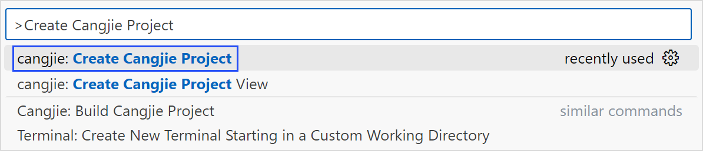
第二步：选择后端类型
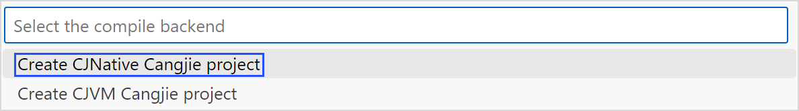
第三步：选择工程模板
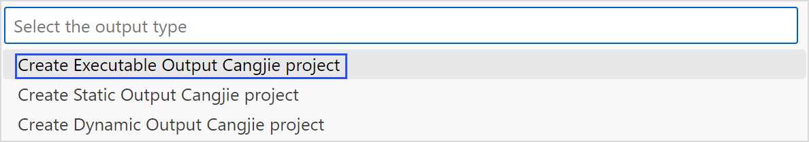
第四步：选择工程路径
第五步：输入工程名称
选择工程的存储路径，输入工程名称。
第六步：完成创建并打开
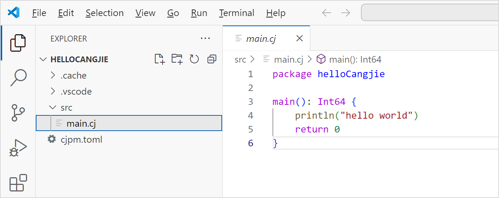
使用可视化界面
在 VSCode 中使用快捷键 F1，或同时按下 Ctrl + Shift + P（macOS 系统为 Command + Shift + P）打开命令面板，按照以下步骤创建仓颉工程。
第一步：选择创建仓颉可视化工程命令
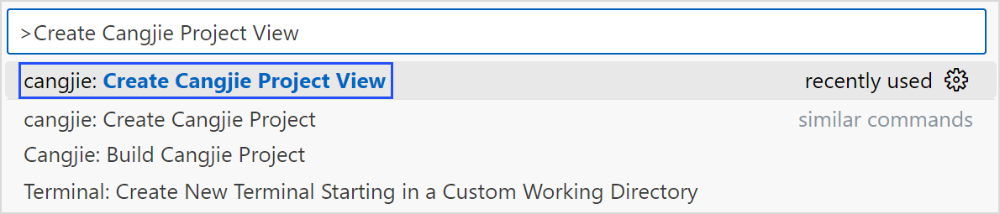
第二步：打开可视化创建仓颉工程界面
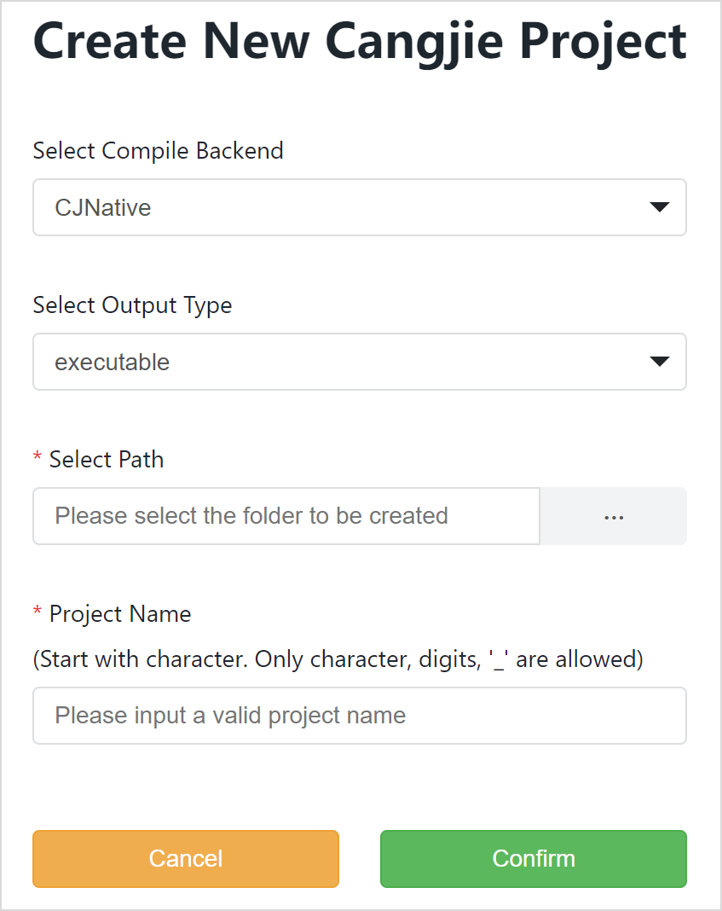
第三步：选择后端类型
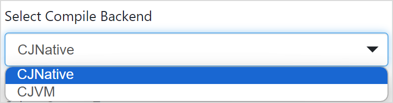
第四步：选择工程模板
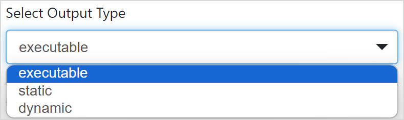
第五步：选择工程路径
选择工程的存储路径，输入工程名称。
第六步：输入工程名称
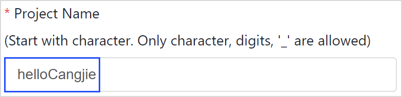
第七步：单击 Confirm 完成创建并打开

编译构建
VSCode 中可视化方式提供的仓颉功能编译构建能力依赖 cjpm 工具，该工具要求打开的仓颉工程的模块内必须包含规范的 cjpm.toml 文件。若没有该文件，仍想执行工程的编译构建，可在终端使用 cjc 命令。
在 VSCode 中提供在命令面板执行命令、在终端进行执行命令、单击运行按钮运行工程，以及单击锤子按钮编译工程四种方式，来实现仓颉工程的编译构建。
编译构建方式
在命令面板执行命令
在 VSCode 中使用快捷键 F1，或同时按下 Ctrl + Shift + P（macOS 系统为 Command + Shift + P）打开命令面板，输入分类词 Cangjie 来快速找到以下编译相关命令。
-
选择
Cangjie: Parallelled Build选项执行并行编译。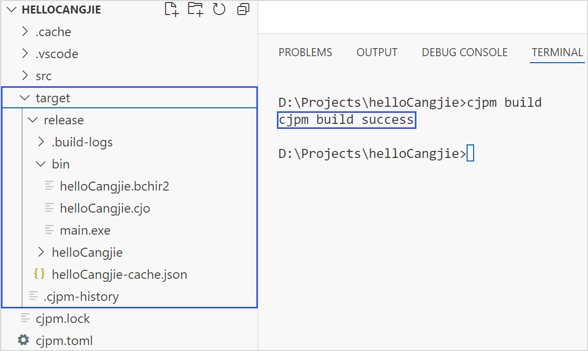
执行并行编译后，在工程文件夹下会生成
target目录，target目录下有一个release文件夹，release文件夹下包含三个目录：.build-logs目录、bin目录，以及工程名同名的目录。bin目录下存放可执行文件（可执行文件只有在cjpm.toml的output-type为executable时才会生成），工程名同名目录下存放编译的中间产物。在 output Panel 上会打印编译是否成功的信息。
-
选择
Cangjie: Build With Verbose选项执行编译并展示编译日志。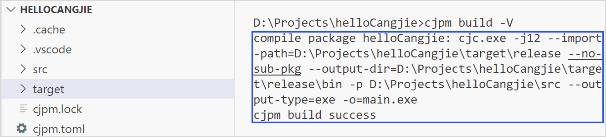
该编译参数除了执行编译外，还会打印编译日志。
-
选择
Cangjie: Build With Debug选项生成 debug 版本的目标文件。该命令的编译结果中带有 debug 信息，供调试使用。
-
选择
Cangjie: Build With Coverage选项生成覆盖率信息。该命令在编译结果中带有覆盖率信息。
-
选择
Cangjie: Build With Alias执行编译并指定输出可执行文件的名称。执行该命令，按下回车键后，会弹出一个输入栏，需要开发者为工程的编译结果赋予一个新的名字。该命令只对
cjpm.toml的output-type为executable时有效。 -
选择
Cangjie: Build With Increment选项执行增量编译。用来指定增量编译。
-
选择
Cangjie: Build With CustomizedOption选项按条件透传cjpm.toml中的命令。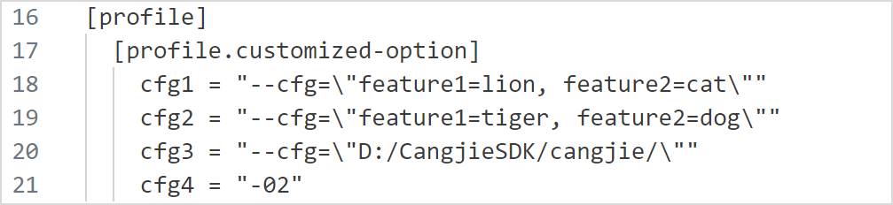
使用该选项需要先在
cjpm.toml中配置customized-option字段。然后在命令面板输入Build With CustomizedOption，按下回车键后可以选择需要的参数，参数可以多选，选择后按下回车键即可。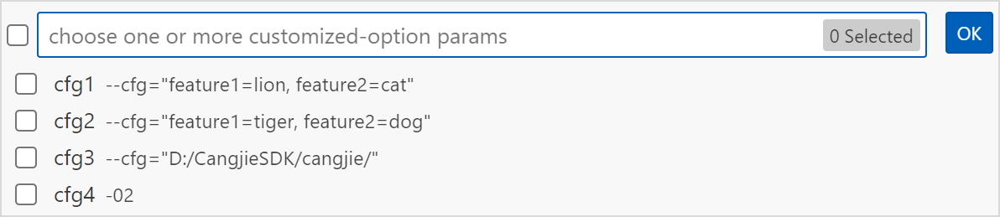
若没有在
cjpm.toml中配置customized-option字段，并执行了该条命令，插件会提示开发者先配置改字段。 -
选择
Cangjie: Build With TargetDir选项执行编译并在指定路径生成编译产物。选择该命令执行后，可指定编译产物的输出路径，默认不作输入操作则以
cjpm.toml中的target-dir字段为路径。当输入的编译产物路径与 cjpm.toml 中的
target-dir字段不同时，会弹出提示是否覆盖 cjpm.toml 中的target-dir字段。若选择 Yes 覆盖，则会将 cjpm.toml 中target-dir字段覆盖成输入的值。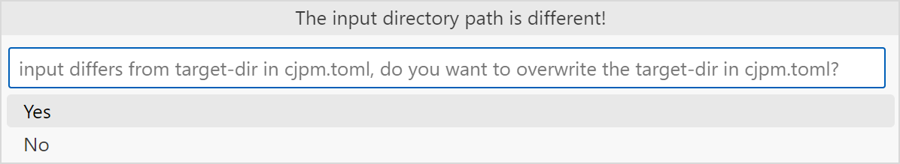
该命令执行成功后，会在指定的路径下生成编译产物。
-
选择
Cangjie: Build With Jobs选项，执行编译前自定义最大并发度。支持通过执行该命令在编译之前自定义最大并发度，输入参数为任意数字，设置范围为 (0, CPU 核数 * 2]。
当在输入框输入非数字时，会终止操作，并提示开发者输入数字内容：“Invaild input! The input should be number.”
当在输入框输入的范围超出所支持的范围 (0, CPU 核数 * 2] 时，会默认采用 CPU 核数，并提示超出可选范围的告警信息。
-
选择
Cangjie: Build With CodeCheck选项，执行编译时进行 CodeCheck 静态代码检查。执行该命令编译工程时，会对当前工程进行 CodeCheck 静态代码检查，如果检查到【要求】级别的代码规范违规，则编译失败，检查到【建议】级别的违规仅告警，正常完成编译。
-
选择
Cangjie: Build With MultiParameter选项执行多参数编译。仓颉工程的编译可以叠加多个参数，在命令面板搜索到
Build With MultiParameter命令后，选择需要叠加的参数，其中--target参数会根据cjpm.toml中的target字段的设置来决定是否显示。如果开发者没有配置target的内容，则--target参数选项会隐藏；--<customized-option>参数会根据 cjpm.toml 中的customized-option字段的设置来决定是否显示，如果开发者没有配置customized-option的内容，则--<customized-option>参数选项会隐藏。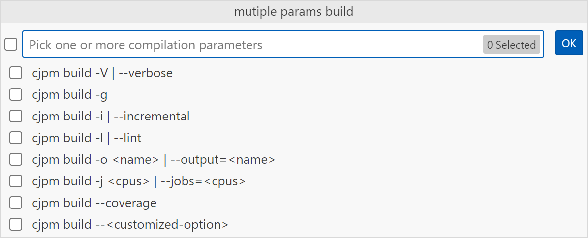
勾选想叠加的参数，按下回车键或者单击 ok 按钮。也可单击界面中的向左箭头，重新选择编译参数。
如果叠加的参数中选择了
cjpm build --output=<name>，那么需要输入一个别名字符串，然后按下回车键执行叠加命令操作。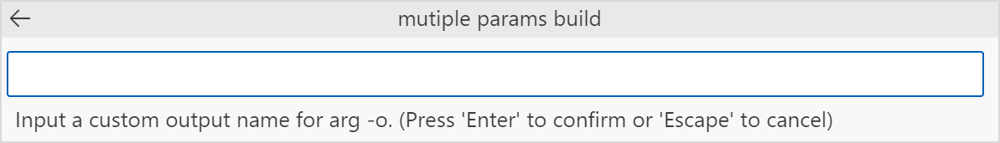
如果叠加参数中选择了
cjpm build --target=<name>，那么可以选择一个想要交叉编译的平台。如果叠加参数中选择了
cjpm build --<customized-option>，那么可以选择透传参数。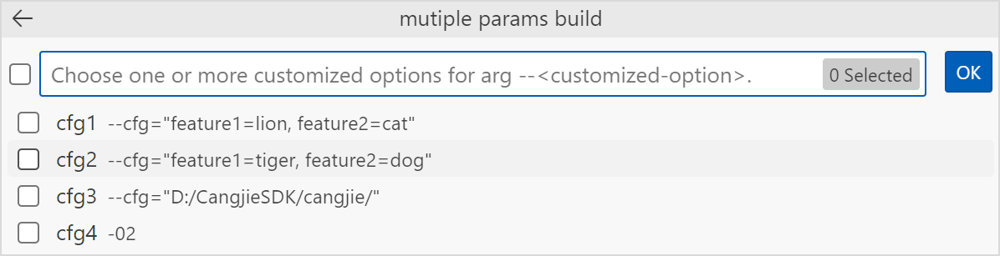
叠加命令的编译结果就是这些命令分别执行的总和。
-
选择
Cangjie: Update Cjpm.toml选项更新 cjpm.lock 文件。在修改完
cjpm.toml文件后，需要执行该命令，更新cjpm.lock文件。如果是通过 UI 界面修改的cjpm.toml文件，则不需要手动执行该操作。 -
选择
Cangjie: Execute Test File选项编译单元测试产物，执行对应的单元测试用例，并直接打印测试结果。 -
选择
Cangjie: Test With NoRun选项编译对应测试产物。 -
选择
Cangjie: Test With SkipBuild选项测试产物存在的前提下，用于执行对应测试产物。 -
选择
Cangjie: Test With Jobs选项执行单元测试之前自定义最大并发度，操作与Build With Jobs相同。 -
选择
Cangjie: Test With MultiParameter选项执行多参数执行仓颉工程的单元测试。在选择该条命令后，可以选择指定包路径、模块或者成员执行单元测试。只有打开工作空间，才显示成员选择选项。
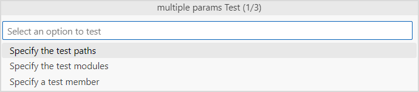
如果选择
Specify the test paths选项，则可以输入指定待测试的包路径。若不需要指定，则直接按 Enter 键。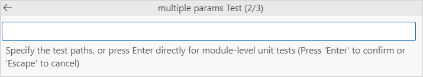
此步骤可通过输入多个包的路径并用空格分隔，可以实现多包并发单元测试。
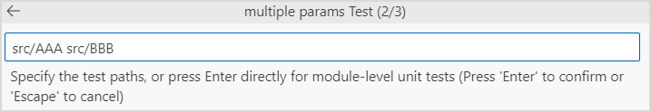
如果选择
Specify the test modules选项，则可以输入指定待测试的模块。若不需要指定，则直接按 Enter 键。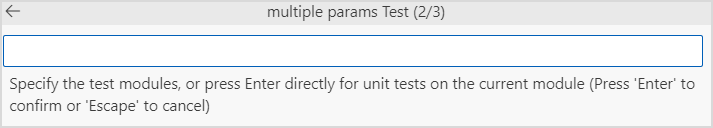
此步骤可通过输入多个模块并用空格分隔，可以实现多模块单元测试。
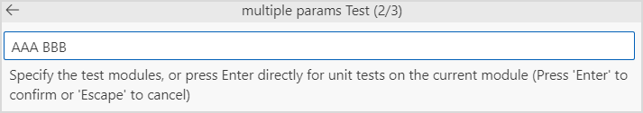
如果选择
Specify a test member选项，则可以输入指定待测试的成员。若不需要指定，则直接按 Enter 键。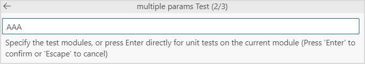
选择要叠加的参数。
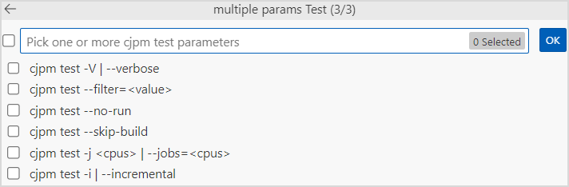
如果选择了
--filter=<value>参数，则需要输入对应的过滤测试子集的表达式。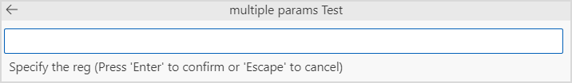
输入过滤测试子集的表达式后，可以执行
cjpm test的完整命令。执行结果会在 Output 面板输出。如果在 cjpm.toml 中配置了
target和customized-option，则可以选择的参数有--target=<name>和--<customized-option>。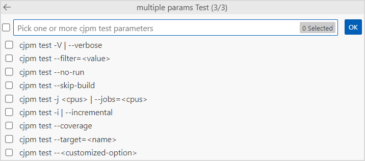
如果选择了
--target=<name>参数，则需要选择对应的平台。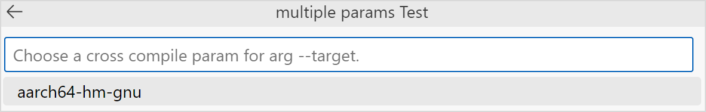
如果选择了
--<customized-option>参数，则需要选择条件选项。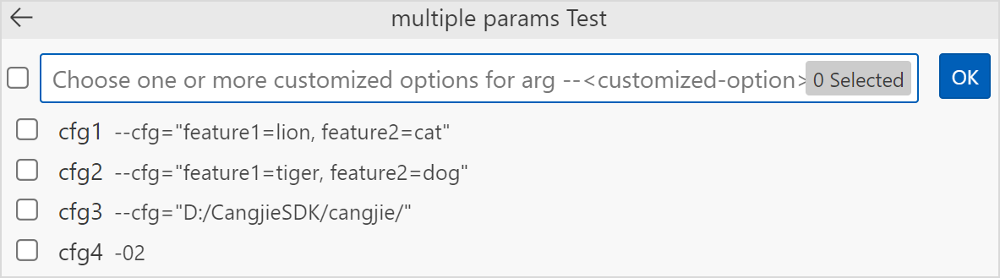
-
选择
Cangjie: Clean Build Result选项清除编译结果（工程目录下的 build 目录）。 -
选择
Cangjie: Check Circular Dependencies选项检测文件依赖。 -
选择
Cangjie: Edit Configuration (UI)选项打开 UI 配置界面。 -
选择
Cangjie: Install With Verbose选项展示安装日志。 -
选择
Cangjie: Install With Debug选项生成 debug 版本的安装产物。 -
选择
Cangjie: Install With RootPath选项指定可执行文件的安装路径。在选择该条命令后，在弹出的输入框中输入期望可执行文件的安装路径，最终会将可执行文件安装到输入的自定义路径中。不配置时，Linux 系统和 macOS 系统下默认为
$HOME/.cjpm，Windows 系统下默认为%USERPROFILE%/.cjpm。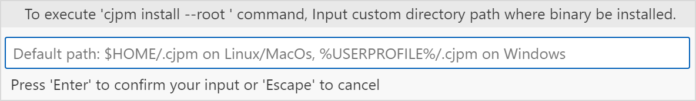
-
选择
Cangjie: Install With TargetDir选项指定编译产物的存放路径。安装可执行文件前会先进行编译，选择该条命令后，在弹出的输入框中输入期望编译产物的存放路径，最终会将编译产物安装到输入的自定义路径中。
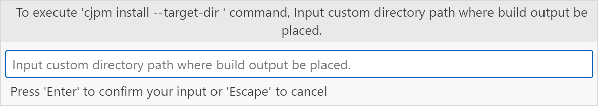
-
选择
Cangjie: Install With Alias选项指定最终安装的产物名。选择该条命令后，在弹出的输入框中输入期望安装产物的名字。
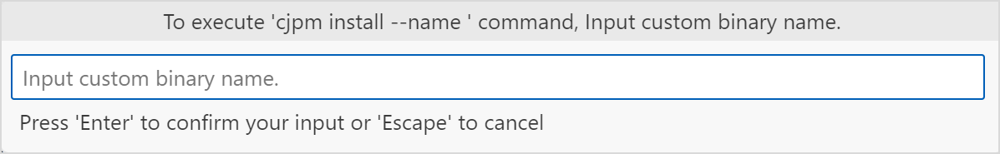
-
选择
Cangjie: Install With Git选项安装远端 git 代码仓产物。选择该条命令后，在弹出的输入框中输入远端 git url。
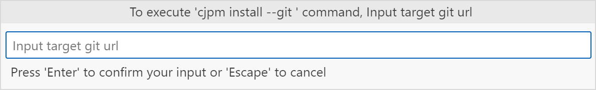
输入远端 git url 后，键入回车可进一步选择关于远端 git 代码仓的分支、tag 或 commit 信息。
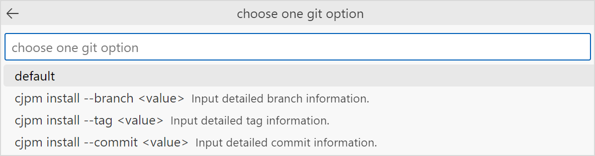
选择自定义代码仓 branch / tag / commit 号选项，在弹出框内输入 branch / tag / commit 号信息，即可安装远端 git 代码仓产物。
-
选择
Cangjie: Install With List选项打印已安装产物列表。 -
选择
Cangjie: Install With SkipBuild选项跳过编译阶段以直接安装产物，需要项目处于编译完成状态。 -
选择
Cangjie: Install With Jobs选项指定并行编译的最大并发数。选择该条命令后，在弹出的输入框中输入期望安装时的最大并发数。
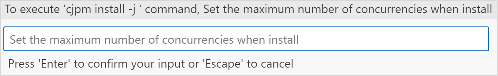
-
选择
Cangjie: Install With CustomizedOption选项按条件透传cjpm.toml中的命令。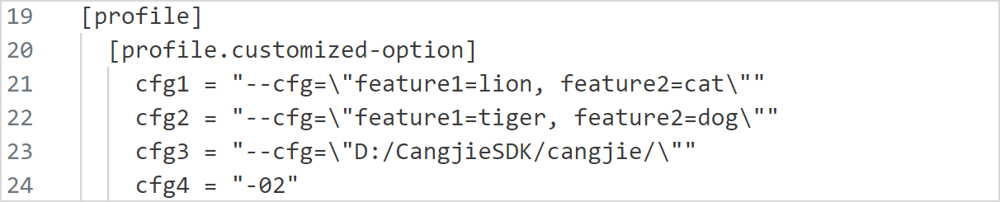
使用该选项需要先在
cjpm.toml中配置customized-option字段。然后在命令面板选择Install With CustomizedOption，按下回车键后可以选择需要的参数，参数可多选，选择后按下回车键即可。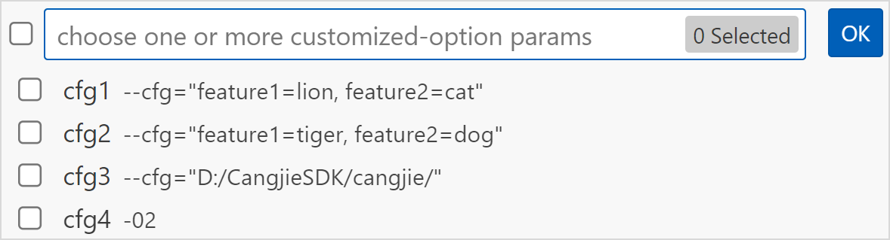
开发者需要在
cjpm.toml中配置customized-option字段，才能执行该条命令。 -
选择
Cangjie: Install With SkipScript选项跳过待安装模块的构建脚本的编译运行。 -
选择
Cangjie: Install With CustomParameter选项执行自定义的安装命令参数选项。单击 VSCode 页面左下角齿轮图标，选择设置选项。或直接右键单击插件，选择 Extension Settings，进入配置页面。在搜索栏输入 Cangjie，选择侧边栏的 Cangjie Language Support 选项。该页面有输入框
Cangjie: Cjpm Install: Custom，在此输入cjpm install相关的命令选项，如-V -g --name \<value\>。然后在命令面板选择Install With CustomParameter命令，最终将该输入框中的内容带到cjpm install中。 -
选择
Cangjie: Uninstall Binary选项卸载仓颉项目，清除对应的可执行文件和依赖文件。选择该命令后，在弹出的输入框中输入需要卸载的可执行文件名字。
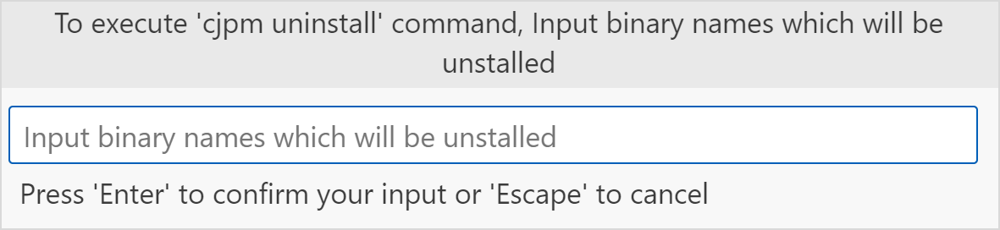
-
选择
Cangjie: Uninstall With Root选项指定卸载时搜索的目标路径。选择该命令后，在弹出的输入框中输入期望卸载时搜索的目标路径，最终会将该路径下的指定可执行文件和依赖文件卸载。不配置时，Linux 系统和 macOS 系统下默认为 $HOME/.cjpm，在 Windows 系统下默认为
%USERPROFILE%/.cjpm。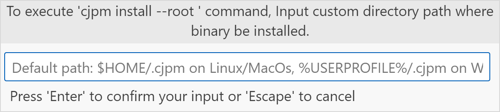
在终端进行执行命令
开发者可以直接在 VSCode 的终端面板使用编译构建命令（cjpm）对仓颉工程进行编译构建。初次使用需要重新启动 VSCode，即可在终端执行 cjpm 操作。
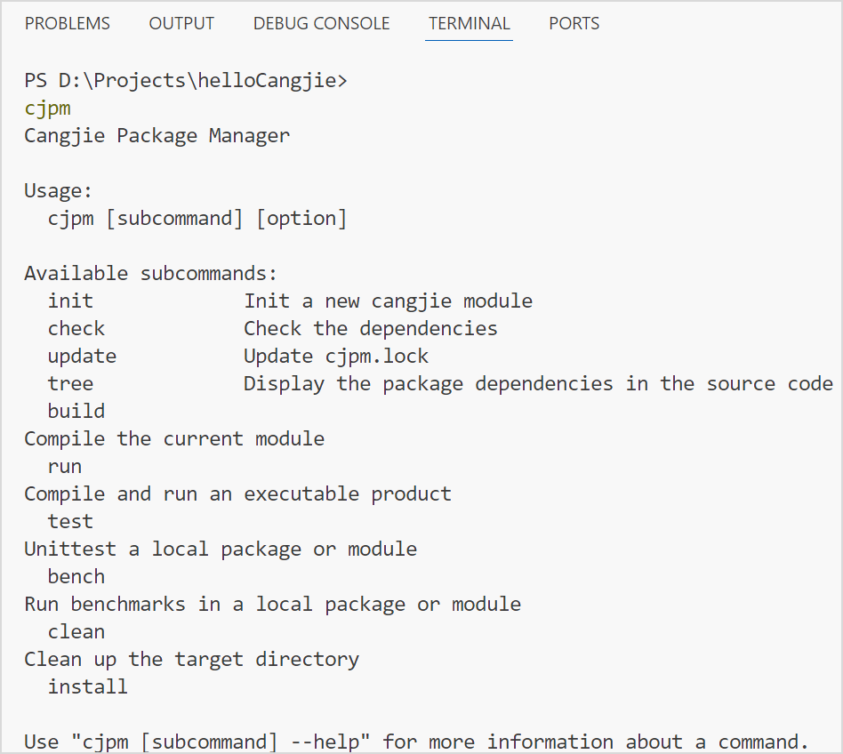
单击运行按钮运行工程
开发者可以单击 .cj 文件编辑区的运行按钮来运行整个仓颉工程。
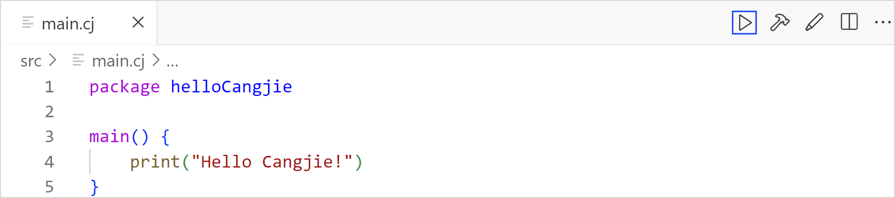
若整个工程中配置的 output-type 为 executable，则会在终端面板打印运行结果，否则只会显示编译的结果。
若工程根目录的 cjpm.toml 文件使用 workspace 模式配置，则文件编辑区不提供运行按钮。
单击运行按钮执行的编译过程是结合当前的 cjpm.toml 和 cjpm_build_args.json 的配置来进行的。
单击锤子按钮编译工程
开发者可以单击 .cj 文件编辑区的锤子按钮来编译整个仓颉工程。
单击锤子按钮执行的编译过程与运行按钮一致，也是结合当前的 cjpm.toml 和 cjpm_build_args.json 的配置来进行的。不同的是，若整个工程中配置的 output-type 为 executable，则运行按钮在编译完成后再运行整个工程，而锤子按钮只会编译工程，无后续运行动作。
可视化配置编译构建参数
在编译构建过程中需要配置工程目录中的 cjpm.toml 和 cjpm_build_args.json 文件，方法如下：
- 直接修改
cjpm.toml和cjpm_build_args.json文件。
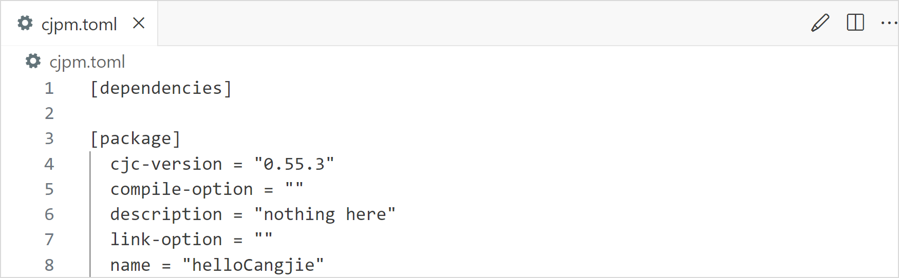
- 使用快捷键 F1，或同时按下 Ctrl + Shift + P（macOS 系统为 Command + Shift + P）打开命令面板，在命令面板执行
Cangjie: Edit Configuration (UI)命令打开可视化编辑的 UI 界面。
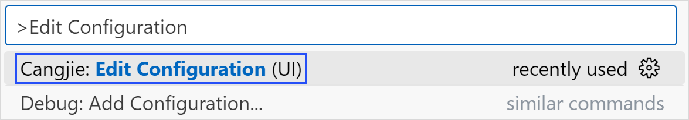
- 单击编辑页面右上角的画笔按钮，跳转到可视化编辑的 UI 界面。
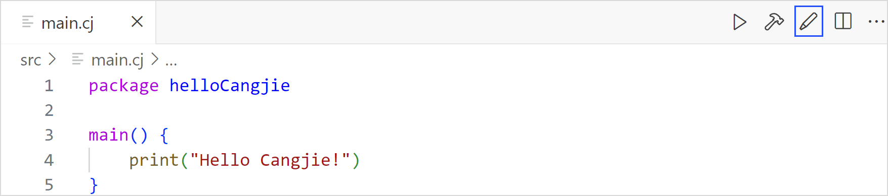
对于工程文件中 .vscode 目录下的 cjpm_build_args.json 的配置，通过复选框或者输入框的形式确定编译要使用的参数，修改后会同步到 cjpm_build_args.json 文件中。
对于工程中 cjpm.toml 文件的配置，开发者输入内容并将光标移至输入框外，即可生效到 cjpm.toml 文件中。
注意：
当仓颉工程中的
cjpm.toml文件和参数配置界面同时在 VSCode 的编辑区显示时，对cjpm.toml文件的修改不会同步到 UI 界面上。
对于构建参数 cross-compile-configuration，可以在 cross-compile-configuration 下单击 Add Configuration 按钮添加选项。
在 key 和 compile-option 处填写对应内容，单击对勾按钮或按下回车键，与 cjpm.toml 保持同步。若想删除该条配置，只需单击该条选项的叉号按钮。
添加的配置在不填写第一个字段 key 就直接单击对勾按钮或按下回车键，会出现必须要填写第一个字段的提示，该场景下提交的内容不会同步到 cjpm.toml 中。在 UI 界面目前不会直接删除该条配置，刷新 UI 界面后会自动删除，内容与 cjpm.toml 保持一致。package-configuration 和 cross-compile-configuration 类似，package-configuration 新增配置时第一个字段为空的场景如下图所示。
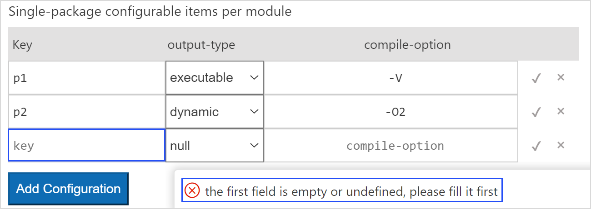
对于 package-configuration 参数，其添加和修改方式与 cross-compile-configuration 一致。其中 output-type 字段为下拉框选项，其可选的类型有 executable、static、dynamic 和 null。新添加的配置字段的初始化类型为 null，开发者可以根据自己的需要进行选择。当选择为 null 时，该字段同步到 cjpm.toml 后会删除该字段。
注意：
在 UI 界面配置
cjpm.toml的内容时，只有对于customized-option参数中配置的--cfg中路径中的=需要转义，其他符号不需要添加转义符号。比如：
在 UI 界面对
customized-option参数配置的--cfg路径中包含=时，=需要转义，即--cfg="D:/projects/cang\=jie"。在 UI 界面对
package-configuration字段的 p1 配置compile-option时，对--link-options设置内容时不需要转义，只需要加引号即可，即--link-options="-rpath=xxx"。直接在
cjpm.toml中填写时，符号都需要加转义符号。比如：
在
cjpm.toml中对customized-option参数配置的--cfg路径中包含=时，所有符号都需要转义，即--cfg=\"D:/projects/cang\\=jie\"。在
cjpm.toml中对package-configuration字段的 p1 配置compile-option时，所有符号都需要转义，即--link-options=\"-rpath=xxx\"。
对于 customized-option 参数，其添加修改方式与 cross-compile-configuration 一致。
注意：
customized-option的条件不能设置内置的条件（@When[os == "Linux"] 不能作为customized-option的条件，即 "cfg1" : "--cfg ="os=Linux"" 是不允许的），只能添加开发者自定义条件。具体请参考 Cangjie > Language Guide 文档的条件编译章节。
三方库便捷导入
导入方式
注意：
三方库便捷导入仅适用于当前打开的仓颉工程的主模块。如果其他子模块需要便捷导入三方库，可以单独以工程的方式打开使用。
在仓颉工程中，可以导入外部的三方库，并且在 cjpm.toml 中进行配置。
dependencies：当前仓颉模块依赖项目，包含了当前构建所需要的其它模块的配置信息，包含版本号和路径。这两个选项必须全部配置，否则会执行失败并报错。在使用过程中，优先使用此方式进行项目依赖导入。
dev-dependencies：使用方式与 dependencies 一致，具有与 dependencies 字段相同的格式。用于指定仅在开发过程中使用的依赖项，而不是构建主项目所需的依赖项，例如仅在测试中使用的依赖项。如果开发者是库作者，则应将此字段用于此库的下游用户不需要使用的依赖项。
bin-dependencies：非特殊需求场景下，建议使用 dependencies 的方式导入依赖。目前仓颉插件仅支持本地的 bin-dependencies 配置。
当前仓颉模块依赖已编译好的 package，有两种导入形式。以导入下述 pro0 模块和 pro1 模块的三个包来举例说明。
test
├── pro0
│ ├── libpro0_xoo.so
│ ├── xoo.cjo
│ ├── libpro0_yoo.so
│ └── yoo.cjo
├── pro1
│ ├── libpro1_zoo.so
│ └── zoo.cjo
├── src
│ └── main.cj
└── cjpm.toml
方式一：通过 package-option 导入。
[target]
[target.x86_64-w64-mingw32]
[target.x86_64-w64-mingw32.bin-dependencies]
[target.x86_64-w64-mingw32.bin-dependencies.package-option]
pro0_xoo = "./test/pro0/xoo.cjo"
pro0_yoo = "./test/pro0/yoo.cjo"
pro1_zoo = "./test/pro1/zoo.cjo"
该选项是 map 结构，pro0_xoo 名称作为 key，与 libpro0_xoo.so 相对应，前端文件 .cjo 的路径作为 value，对应于该 .cjo 的 .a 和 .so 需放置在相同路径下，且对应的 .cjo 模块文件必须与模块名来源文件放置在相同的文件夹下，该文件夹下不能有任何其他文件或文件夹。
方式二：通过 path-option 导入。
[target]
[target.x86_64-w64-mingw32]
[target.x86_64-w64-mingw32.bin-dependencies]
path-option = ["./test/pro0", "./test/pro1"]
该选项是字符串数组结构，每个元素代表待导入的路径名称。cjpm 会自动导入该路径下所有符合规则的仓颉库包，这里的合规性是指库名称的格式为模块名_包名。库名称不满足该规则的包只能通过 package-option 选项进行导入。
如果同时通过 package-option 和 path-option 导入相同的包，则 package-option 字段的优先级更高。
导航栏视图呈现如下形式。
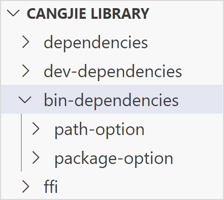
开发者可以在其对应的导入方式子目录下导入工程需要的模块。在导航栏单击画笔进入 UI 界面。
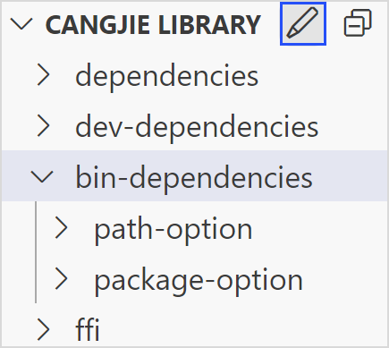
ffi：当前仓颉模块外部依赖 C 库，配置了依赖该库所需要的信息，包含名称和路径字段。资源管理器的视图栏中的 CANGJIE LIBRARY 栏，可以方便开发者添加这几类外部库。
在工程初始化后，可以通过单击分类栏的加号按钮添加对应的三方库。
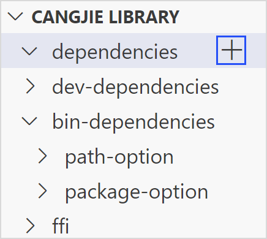
也可以通过单击三方库上的减号删除对应的库。
可以通过单击视图栏的编辑按钮，打开三方库导入的可视化界面来导入或删除三方库。
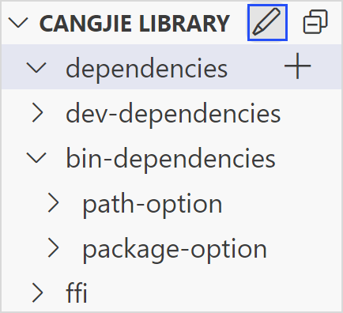
以上删除和添加操作均同步到工程的 module.json 文件中。
导入限制
- 项目中需要链接动态库（C 库和仓颉库）时，需自行设置
LD_LIBRARY_PATH，执行export LD_LIBRARY_PATH=xxx:$LD_LIBRARY_PATH。 - 在
cjpm.toml中修改内容不会直接影响 treeView 和 UI 界面，需要单击 treeView 或 UI 界面进行手动更新。 - 在 treeView 中的库分类处添加外部库，且此时库分类目录是关闭状态，则添加后需要打开目录才能查看。
- UI 界面的字段暂不支持 hover 显示内容的功能。
- UI 界面非开发者添加的外部库，其路径与
cjpm.toml保持一致。开发者添加的库和 treeView 均显示绝对路径。
调试服务
仓颉编程语言提供了可视化调试服务，方便开发者调试仓颉程序。该插件提供如下功能：
- Launch：启动调试进程
- Attach：附加到已启动的进程
- 支持源码断点、函数断点、数据断点、汇编断点
- 支持源码内单步调试、运行到光标处、步入、步出、继续、暂停、重启、停止调试
- 支持仓颉-C 互操作调试，仓颉代码 continue、步入到 C 代码
- 支持汇编内单步、步入、步出
- 支持表达式求值
- 支持变量查看和修改
- 支持在调试控制台中查看变量
- 支持查看被调试程序的输出信息
- 支持反向调试
- 支持 Unittest 的运行和调试
- 支持 CJVM 后端调试
说明：
- 如果第一次使用 VSCode 调试功能，可以查看 VSCode 调试服务使用手册。
- 受调试器限制，循环代码中存在条件断点时，执行 PAUSE 操作可能导致后续调试无法进行。
- VARIABLES 视图修改变量时，不会触发存在依赖关系的变量的刷新。
- 调试服务依赖仓颉 SDK 包内 liblldb 动态库文件时，请提前配置仓颉 SDK 路径。
- CJVM 后端调试能力逐步支持中，在当前阶段，调试服务的说明中如未明确指出是针对 CJVM 后端，则默认其为针对 CJNative 后端的说明。
- 调试插件客户端与服务端通过 Socket 通信，插件自动从 9995 端口开始查找可用端口，并在 127.0.0.1 上启动 Socket server 监听该端口。
- Windows 环境下读写类型数据断点设置条件后，系统存在概率性仅上报一次停止事件，数据断点可能仅在第一次触发时有效，后续的读写操作可能不会再次触发断点。
启动调试
Launch 模式
仓颉工程调试
- 未创建
launch.json文件时，单击 Run and Debug > Cangjie(cjdb) Debug 启动调试。 - 已创建
launch.json文件时，在launch.json文件中单击 Add Configuration > Cangjie Debug (CJNative) : launch > Build And Debug Cangjie Project 添加调试配置，选择添加的配置启动调试。
单文件调试
针对单文件调试，可以选中需要调试的仓颉源文件，右键选择 Cangjie: Build and Debug File，该操作会生成编译配置文件 task.json 和编译脚本，并且会根据 task.json 配置执行脚本，编译出可调试的二进制文件，然后启动调试。

调试手动编译的可执行文件
- 使用 cjc 编译器或 cjpm 手动编译出可调试的二进制文件。
- 单击 Run and Debug > Cangjie(cjdb) Debug > Cangjie (CJNative): launch > Choose Executable File Later 启动调试。
Launch debugMacro 模式仓颉工程调试宏展开后的代码
调试宏展开后的代码文件（后缀为 .marcocall），此时宏对应的原文件无法调试。
调试远程进程（支持 Linux 远程到 Linux）
Launch 模式下调试远程进程时，调试服务会将本地编译的二进制文件推送到远程平台，然后调试远程平台的二进制文件。
- 在远程平台启动 lldb-server。建议使用 cjdb 自带的 lldb-server，路径为 /cangjie/third_party/llvm/lldb/bin/lldb-server，启动命令
/**/**/cangjie/third_party/llvm/lldb/bin/lldb-server p --listen "*:1234" --server。 - 在本地机器使用 cjc 编译器或 cjpm 手动编译出可调试的二进制文件。
- 单击 Run and Debug 按钮启动调试。
launch.json 配置示例如下：
{
"name": "Cangjie Debug (cjdb): test",
"program": "/**/**/test",
"request": "launch",
"type": "cangjieDebug",
"externalConsole": false,
"remote": true,
"remoteCangjieSdkPath": "/**/**/cangjie",
"remoteFilePath": "/**/**/test",
"remoteAddress": "127.0.0.1:1234",
"remotePlatform": "remote-linux"
}
配置属性
| 属性 | 类型 | 描述 |
|---|---|---|
| program | string | 被调试进程的全路径，该文件将推送到远程平台，例如：/home/cangjieProject/build/bin/main |
| remote | boolean | 启动远程 Launch 进程，remote 为 true |
| remoteCangjieSdkPath | string | 远程平台仓颉 SDK 路径 |
| remoteFilePath | string | 远程平台存放推送文件的全路径，请确保路径 /home/test/ 合法且存在，main 为推送到远程的文件名，例如：/home/cangjieProject/build/bin/main |
| remoteAddress | string | 被调试进程所在的机器 IP 和 lldb-server 监听的端口号，数据格式：ip:port |
| remotePlatform | string | 远程的平台，仅支持 remote-linux（远程 Linux 平台） |
| env | object | 为被调试程序设置运行时的环境变量，该配置将覆盖系统环境变量，如需在系统配置基础上追加配置，在配置项结尾增加 ${env:PATH}。例如："PATH":"/home/user/bin: ${env:PATH}", "LD_LIBRARY_PATH":"/home/user/bin:${env:LD_LIBRARY_PATH}"。 |
Attach 模式
调试本地进程
- 在
launch.json文件中单击 Add Configuration > Cangjie Debug (CJNative) : attach 添加调试配置，选择添加的配置启动调试。 - 在弹出界面选择要调试的进程即可启动调试。
调试远程进程
- 在本地机器编译出可调试二进制文件并将该文件拷贝到远程机器。
- 在远程机器启动 lldb-server，建议使用 cjdb 自带 lldb-server，路径为 /cangjie/third_party/llvm/lldb/bin/lldb-server，启动命令
/**/**/cangjie/third_party/llvm/lldb/bin/lldb-server p --listen "*:1234" --server。 - 在远程机器启动被调试的二进制文件。
- 在本地机器配置
launch.json文件，并启动调试。
launch.json 配置属性：
{
"name": "Cangjie Debug (cjdb): test",
"processId": "8888",
"program": "/**/**/test",
"request": "attach",
"type": "cangjieDebug",
"remote": true,
"remoteAddress": "127.0.0.1:1234",
"remotePlatform": "remote-linux"
}
配置属性
| 属性 | 类型 | 描述 |
|---|---|---|
| processId | string | 被调试进程的 pid（配置 pid 时优先 attach pid，未配置 pid 则 attach program） |
| program | string | 被调试进程的全路径，例如：/home/cangjieProject/build/bin/main |
| remote | boolean | attach 本机器进程，remote 为 false；若 attach 远程进程，将 remote 设置为 true |
| remoteAddress | string | 远程调试时被调试进程所在的机器 IP 和 lldb-server 监听的端口号，数据格式：ip:port |
| remotePlatform | string | 远程调试时远程的平台，仅支持 remote-linux（远程 linux 平台） |
查看调试信息
当进程处于 stopped 状态时，可以在 VSCode 界面左侧查看断点、当前线程、堆栈信息和变量，支持编辑断点和修改变量。也可以在 Editor 窗口将鼠标悬停在变量名称上方查看变量值。支持在 TERMINAL 窗口查看被调试程序的输出信息。

表达式求值
- 在 WATCH 窗口添加按钮或空白处双击键入表达式。
- 在 Debug Console 窗口键入表达式。
- 在 Editor 窗口双击选中变量，右键选择 Evaluate in Debug Console。
程序控制
-
单击顶部调试工具栏上的图标控制程序，包括单步执行、步入、步出、继续、暂停、重启或停止程序。

-
在鼠标光标处单击右键选择 Run to Cursor。

-
在源码视图右键选择 Open Disassembly View 进入汇编视图。

调试控制台
执行 cjdb 命令
在调试控制台中输入 cjdb 命令来调试程序，命令的格式需要以 -exec 开头，要执行的子命令必须是正确的 cjdb 命令。
使用 cjdb 命令 n 执行单步调试的示例如下：
-exec n

查看变量
在调试控制台中输入变量名称查看变量值：

反向调试
说明：
- 反向调试基于记录重放，开启反向调试功能后，调试服务会记录开发者正向调试的所有停止点（断点 + 单步），以及停止点的线程、堆栈和变量等调试信息。进入反向调试模式，支持查看历史记录点的调试信息。
配置
单击左下角齿轮图标，选择设置（Settings）选项，在搜索栏输入 cangjie，找到 Reverse Debug 选项，勾选 Enable reverse debug，开启程序调试历史停止点信息的自动记录。同时可以配置自动记录的线程个数、堆栈个数、变量作用域、复杂类型变量子变量的展开层数和子变量个数。修改配置后，需要重新启动仓颉调试。

工具栏
单击顶部调试工具栏上的时钟图标进入反向调试模式，使用工具栏上正反向继续、正反向单步控制程序，查看历史记录的线程、堆栈、变量信息，如下图所示。

单击顶部调试工具栏上的方块图标退出反向调试模式，调试会回到正向调试的最后停止点，如下图所示。

反向断点
说明：
- 反向断点是一种特殊的源码断点（Log Point），正向调试过程中不会停止，也不会输出自动生成的 Log Message（用于标记反向断点）。
- 在正向调试时，开发者提前设置反向断点，调试服务后台会记录进程走过的反向断点的调试信息。
- 在进入反向调试模式时，反向断点会作为停止点（断点型），可以查看该断点处的线程堆栈变量等调试信息。
- 在进入反向调试模式时，不支持设置反向断点。
反向断点设置方式：
-
在仓颉源文件编辑器视图内右键选择 Cangjie: Add Reverse Breakpoint，为光标所在行设置一个反向断点。

-
在仓颉源文件上右键选择 Cangjie: Add Auto Reverse Breakpoints 插件会分析该文件内函数的入口和出口位置并自动设置反向断点。

-
在文件夹上右键选择 Cangjie: Add Auto Reverse Breakpoints 插件会分析该文件夹内仓颉源文件中的函数的入口和出口位置并自动设置反向断点。

时间线
说明：
时间线展示了反向调试模式下记录的所有停止点（断点+单步），通过时间线拖拽，可以查看历史停止点的信息。
时间线入口位于 VSCode 右下方区域，可以在右下方的 Tab 标签行右键将时间线 Cangjie Debug Timeline 开启或隐藏，也可以在 View 菜单中选择 Open View 开启，如下图所示。

- 主时间线上有左右游标，可以分别拖动左右游标选出某一段时间区域。在选中一段区域之后，鼠标放在选中区域上方时会变为手的形状，此时可以左右拖动此区域。
- 将鼠标放在主时间线上，鼠标变为十字光标的形状，此时按住鼠标往前或往后拖动，可以将鼠标滑过的区域设为新的时间区域。
- 可以通过 Ctrl + 鼠标滚轮的方式，放大和缩小选中区域。
- 每条时间线标识一个仓颉线程或者系统线程。
单击时间线上的记录点，editor 界面同步刷新（定位到源码的行），调试信息界面同步刷新（展示该记录点的线程、栈帧和变量）。
unittest 运行和调试
前置条件
模块的单元测试代码应采用如下结构，其中 .cj 文件表示包的源码，对应单元测试代码文件命名应以 _test.cj 结尾。具体单元测试代码的写法可参考标准库用户手册。
├── src
│ ├── koo
│ │ ├── koo.cj
│ │ └── koo_test.cj
│ ├── zoo
│ │ ├── zoo.cj
│ │ └── zoo_test.cj
│ ├── main.cj
│ └── main_test.cj
└── cjpm.toml
使用方式
- 单击
@Test/@TestCase声明行上的 run 按钮，运行该单元测试类/单元测试 case。 - 单击
@Test/@TestCase声明行上的 debug 按钮，调试该单元测试类/单元测试 case。

DAP 通信日志
调试服务客户端和服务端采用 DAP 协议通信，通信日志可用于定位问题。日志路径在用户目录下 /.cangjie/debug/logs/server。
可以通过点击左下角齿轮图标，选择设置（Settings）选项，在搜索栏输入 cangjie，找到 Debug 选项，勾选 Enable DAPCommunication Log，开启调试服务通信日志。

CJVM 后端调试
功能简介
当前仅在 Linux 平台的 VSCode 上支持 CJVM 后端调试，已支持的可视化调试能力如下：
- 支持 Launch 模式本地调试。
- 支持源码断点、函数断点。
- 支持源码内单步调试、运行到光标处、步入、步出、继续、暂停、重启、停止调试。
- 支持线程堆栈信息查看。
- 支持基础类型变量查看和修改。
- 支持 class、array 类型变量展开查看和修改子变量。
- 支持跨 Java 调试。
启动调试
支持仓颉工程的编译调试、单个仓颉源文件的编译调试，以及调试手动编译好的仓颉可执行文件。
-
Launch 模式仓颉工程调试
对仓颉工程进行编译并调试前，需要开发者在 Settings 中设置 CJVM SDK，如下图所示。

未创建
launch.json文件时，单击 Run and Debug > Cangjie(cjdb) Debug 启动调试。已创建launch.json文件时，单击 Add Configuration > Cangjie (CJVM): launch > Build And Debug Cangjie Project 启动调试。 -
Launch 模式单文件调试
针对单文件调试，可以选中需要调试的仓颉源文件，右键选择 Cangjie: Build and Debug File (CJVM)，该操作会生成编译配置文件
task.json和编译脚本，并且会根据task.json配置执行脚本，编译出可调试的二进制文件，然后启动调试。 -
Launch 模式调试手动编译的可执行文件
单击 Run and Debug > Cangjie(cjdb) Debug > Cangjie (CJVM): launch > Choose Executable File Later 启动调试。
调试配置
-
在
launch.json文件可以添加 CJVM 后端仓颉调试配置，单击 Add Configuration，选择 Cangjie (CJVM): launch，会出现如图所示的选项。
上述三个选项分别对应三种启动调试方式，会分别生成对应模板。
-
根据模板生成的 CJVM 后端仓颉调试配置示例如下：
{ "name": "Cangjie (CJVM): main", "program": "/**/**/main.cbc", "request": "launch", "type": "cangjieDebug", "vmMode": true, "vmAddress": "127.0.0.1", "vmPort": 3001 }上述配置信息中，vmMode 用以表征当前配置是否为 CJVM 后端的调试配置，vmAddress 和 vmPort 是指 CJVM 虚拟机的地址和其监听的端口号。可以根据需要更改插件的现有调试配置。
已支持的调试功能
-
断点
当前支持源码断点、函数断点，其使用方式和结果与 CJNative 后端一致。
-
程序控制
当前支持源码内单步调试、运行到光标处、步入、步出、继续、暂停、重启和停止调试，其使用方式和结果与 CJNative 后端一致。
-
调试信息查看
当前支持线程堆栈信息查看，其查看方式与 CJNative 后端一致；本地 Launch 模式下启动 CJVM 后端调试，IDE 上会新建 Terminal 用于执行仓颉程序；支持基础类型变量查看和修改；支持 class、array 类型变量展开查看和修改子变量。
-
跨 Java 调试
在调用 Java 的仓颉程序中，支持调试时跨 Java 调试，包括由仓颉 stepin 到 Java、由 Java stepout 到仓颉、Java 内单步调试、Java 内设置断点、Java 堆栈信息查看。暂不支持 Java 变量查看。
FAQ
-
添加 STDX 依赖后调试启动失败
问题原因：当项目中添加了 STDX 依赖后，若调试环境变量未包含 STDX 相关路径配置，会导致被调试程序因无法找到 STDX 依赖而启动失败。
解决方案：在 cjpm.toml 中配置 STDX 的路径（支持全路径或相对路径，需填写具体路径，不可使用占位符）,启动调试会解析该配置。

命令行工具集成
格式化
针对仓颉文件，在 VSCode 的代码编辑区右键选择 [Cangjie] Format 或用快捷键 Ctrl + Alt + F 执行格式化命令，可以对当前仓颉文件进行格式化。如下图所示。

针对仓颉项目，支持在 VSCode 的资源管理器中选择文件或右键单击文件夹执行 [Cangjie] Format 命令，对选择的文件或者文件夹进行格式化。如下图所示。

静态检查
IDE 中的静态检查功能基于静态检查工具 cjlint，该功能可以识别代码中不符合编程规范的问题，帮助开发者发现代码中的漏洞，写出满足 Clean Source 要求的仓颉代码。
说明：
静态检查目前只能检测工程目录 src 文件夹下的所有仓颉文件。
静态检查的入口有两处:
-
在 VSCode 的代码编辑区右键选择 [Cangjie] CodeCheck 或用快捷键 Ctrl + Alt + C 执行静态检查命令，如下图所示。

-
在 VSCode 的资源管理器处右键选择 [Cangjie] CodeCheck 执行静态检查命令，如下图所示。

执行静态检查命令后，如果有不符合编码规范的问题，会展示在右侧的表格中。单击表格中的文件链接，可以跳转到问题代码所在文件的行列。

当前支持代码保存后自动触发静态检查：
开发者可以通过点击左下角齿轮图标，选择设置选项，在搜索栏输入 cangjie，找到 Code Check On Save 选项，勾选该选项，即可开启自动触发静态检查。如下图：

开启自动静态检查后会在项目根目录生成一个 cjlintignore.cfg 配置文件，配置文件中可支持三类屏蔽方式，包括屏蔽文件、文件夹和正则表达式。每条配置项为相对该配置文件所在目录的相对路径（支持正则），无需双引号包含，自动静态检查支持将配置项匹配的仓颉文件屏蔽，不会产生关于这些文件的告警。例如在 cjlintignore.cfg 中有以下配置，则自动静态检查会将 src/subdir1/ 目录和 src/subdir2/a.cj 文件加入屏蔽。

覆盖率统计
覆盖率统计功能用于生成仓颉语言程序的覆盖率报告。
注意：
当选择的文件夹中不含有仓颉文件时，将不会生成覆盖率报告。
覆盖率统计的入口有两处:
-
在 VSCode 的代码编辑区右键选择 [Cangjie] Coverage 或用快捷键 Ctrl + Alt + G 执行生成当前仓颉文件覆盖率报告的命令，如下图所示。

-
在 VSCode 的资源管理器中选择文件或右键单击文件夹执行 [Cangjie] Coverage 命令，对选择的文件或者文件夹生成覆盖率报告，如下图所示。

在生成的覆盖率报告页面，可以单击文件名查看覆盖率详情。
仓颉语言命令行工具使用指南
仓颉语言为开发者提供了丰富的命令行工具，涵盖包管理、命令行调试、代码格式化和覆盖率统计等功能。在成功安装仓颉工具链后，即可根据手册说明使用这些命令行工具。仓颉工具链安装说明请参见安装仓颉工具链。
包管理工具
功能简介
CJPM（Cangjie Package Manager） 是仓颉语言的官方包管理工具，用于对仓颉项目模块系统进行全面管理与维护，涵盖模块初始化、依赖检查与更新等操作。它提供统一的编译入口，支持增量编译、并行编译等，支持自定义编译命令。
使用说明
执行 cjpm -h 命令，查阅包管理工具的使用说明，如下所示。
Cangjie Package Manager
Usage:
cjpm [subcommand] [option]
Available subcommands:
init Init a new cangjie module
check Check the dependencies
update Update cjpm.lock
tree Display the package dependencies in the source code
build Compile the current module
run Compile and run an executable product
test Unittest a local package or module
bench Run benchmarks in a local package or module
clean Clean up the target directory
publish Push a module to the repository
load Load a module from the repository
list Get module list from the repository
install Install a cangjie binary
uninstall Uninstall a cangjie binary
Available options:
-h, --help help for cjpm
-v, --version version for cjpm
Use "cjpm [subcommand] --help" for more information about a command.
其中 cjpm publish 、 cjpm load 、 cjpm list 是 beta 版本功能，支持开发者通过 cjpm 对接仓颉中心仓发布、下载和查询仓颉模块，当前仅在内部版本支持。
基本的使用操作命令如下所示：
cjpm build --help
cjpm 是主程序的名称， build 是当前执行的可用命令， --help 是当前可用命令可用的配置项（配置项通常有长和短两种写法，效果相同）。
成功执行后会显示如下结果：
Compile a local module and all of its dependencies.
Usage:
cjpm build [option]
Available options:
-h, --help help for build
-i, --incremental enable incremental compilation
-j, --jobs <N> the number of jobs to spawn in parallel during the build process
-V, --verbose enable verbose
-g enable compile debug version target
--coverage enable coverage
--cfg enable the customized option 'cfg'
-m, --member <value> specify a member module of the workspace
--target <value> generate code for the given target platform
--target-dir <value> specify target directory
-o, --output <value> specify product name when compiling an executable file
-l, --lint enable cjlint code check
--mock enable support of mocking classes in tests
--skip-script disable script 'build.cj'.
命令说明
init
init 用于初始化一个新的仓颉模块或者工作空间。初始化模块时，默认在当前文件夹创建配置文件 cjpm.toml，并新建 src 源码文件夹。如果该模块的产物为可执行类型，则会在 src 下生成默认的 main.cj 文件，并在编译后打印输出 hello world。初始化工作空间时仅会创建 cjpm.toml 文件，默认会扫描该路径下已有的仓颉模块并添加到 members 字段中。若已存在 cjpm.toml 文件，或源码文件夹内已存在 main.cj，则会跳过对应的文件创建步骤。
init 有多个可配置项：
--name <value>指定新建模块的root包名，不指定时默认为上一级子文件夹名称--path <value>指定新建模块的路径，不指定时默认为当前文件夹--type=<executable|static|dynamic>指定新建模块的产物类型，缺省时默认为executable--workspace新建一个工作空间配置文件，指定该选项时以上其它选项无效会自动忽略
例如：
输入: cjpm init
输出: cjpm init success
输入: cjpm init --name demo --path project
输出: cjpm init success
输入: cjpm init --type=static
输出: cjpm init success
check
check 命令用于检查项目中所需的依赖项，执行成功将会打印有效的包编译顺序。
check 有多个可配置项：
-m, --member <value>仅可在工作空间下使用，可用于指定单个模块作为检查入口--no-tests配置后，测试相关的依赖将不会被打印--skip-script配置后，将会跳过构建脚本的编译运行
例如：
输入: cjpm check
输出:
The valid serial compilation order is:
b.pkgA -> b
cjpm check success
输入: cjpm check
输出:
Error: cyclic dependency
b.B -> c.C
c.C -> d.D
d.D -> b.B
输出说明：上述输出中，b.B 代表以 b 为 root 包的模块中的一个名为 b.B 的子包
输入: cjpm check
输出:
Error: can not find the following dependencies
pro1.xoo
pro1.yoo
pro2.zoo
update
update 用于将 cjpm.toml 里的内容更新到 cjpm.lock。当 cjpm.lock 不存在时，将会生成该文件。cjpm.lock 文件记录着 git 依赖和中心仓依赖的版本号等元信息，用于下次构建使用。
update 有以下可配置项：
--skip-script配置后，将会跳过构建脚本的编译运行
输入: cjpm update
输出: cjpm update success
tree
tree 命令用于可视化地展示仓颉源码中的包依赖关系。
tree 有多个可配置项：
-p, --package <value>指定某个包为根节点，从而展示它的子依赖包，需要配置的值是包名--invert <value>指定某个包为根节点并反转依赖树，从而展示它被哪些包所依赖，需要配置的值是包名--depth <N>指定依赖树的最大深度，可选值是非负整数。指定该选项时，默认会以所有包作为根节点。其中，N 的值代表每个依赖树的子节点最大深度--target <value>将指定目标平台的依赖项加入分析，并展示依赖关系--no-tests排除test-dependencies字段的依赖项-V, --verbose增加包节点的详细信息，包括包名、版本号和包路径--skip-script配置后，将会跳过构建脚本的编译运行
例如，模块 a 的源代码目录结构如下：
src
├── main.cj
├── aoo
│ └── a.cj
├── boo
│ └── b.cj
├── coo
│ └── c.cj
├── doo
│ └── d.cj
├── eoo
│ └── e.cj
└── cjpm.toml
依赖关系为：包 a 导入包 a.aoo、a.boo，子包 aoo 导入包 a.coo，子包 boo 导入包 coo，子包 doo 导入包 coo。
输入: cjpm tree
输出:
|-- a
└── a.aoo
└── a.coo
└── a.boo
└── a.coo
|-- a.doo
└── a.coo
|-- a.eoo
cjpm tree success
输入: cjpm tree --depth 2 -p a
输出:
|-- a
└── a.aoo
└── a.coo
└── a.boo
└── a.coo
cjpm tree success
输入: cjpm tree --depth 0
输出:
|-- a
|-- a.eoo
|-- a.aoo
|-- a.boo
|-- a.doo
|-- a.coo
cjpm tree success
输入: cjpm tree --invert a.coo --verbose
输出:
|-- a.coo 1.2.0 （.../src/coo）
└── a.aoo 1.1.0 （.../src/aoo）
└── a 1.0.0 （.../src）
└── a.boo 1.1.0 （.../src/boo）
└── a 1.0.0 （.../src）
└── a.doo 1.3.0 （.../src/doo）
cjpm tree success
build
build 用于构建当前仓颉项目，执行该命令前会先检查依赖项，检查通过后调用 cjc 进行构建。
build 有多个可配置项：
-i, --incremental用于指定增量编译，默认情况下是全量编译-j, --jobs <N>用于指定并行编译的最大并发数，最终的最大并发数取N和2倍 CPU 核数的最小值-V, --verbose用于展示编译日志-g用于生成debug版本的输出产物--mock带有此选项的构建版本中的类可用于在测试中进行mock测试--coverage用于生成覆盖率信息，默认情况下不开启覆盖率功能--cfg指定后，能够透传cjpm.toml中的自定义cfg选项，cjpm.toml中的配置可参考 profile.customized-option 章节-m, --member <value>仅可在工作空间下使用，可用于指定单个模块作为编译入口--target-dir <value>用于指定输出产物的存放路径-o, --output <value>用于指定输出可执行文件的名称，默认名称为main（Windows系统下则默认为main.exe）。注意，当前不支持编译名称为cjc的可执行文件--target <value>指定后，可交叉编译代码到目标平台，cjpm.toml中的配置可参考 target 章节-l, --lint用于在编译时调用仓颉语言静态检查工具进行代码检查--skip-script配置后，将会跳过构建脚本的编译运行
注意：
-i, --incremental选项仅会开启cjpm包级别的增量编译。开发者可以在配置文件的compile-option字段自行透传--incremental-compile和--experimental编译选项，从而开启cjc编译器提供的函数粒度增量功能。-i, --incremental选项目前仅支持基于源码的增量分析。如果导入的库内容有变更，需要开发者重新使用全量方式构建。
编译生成的中间文件默认会存放在 target 文件夹，而可执行文件会根据编译模式存放到 target/release/bin 或 target/debug/bin 文件夹。运行可执行文件的方式可参考 run。
为了提供可复制的构建，此命令会创建 cjpm.lock 文件，该文件包含所有可传递依赖项的确切版本，这些依赖项将用于所有后续构建，需要更新该文件时请使用 update 命令。如果有必要保证每个项目参与者都有可复制的构建，那么此文件应提交到版本控制系统中。
例如：
输入: cjpm build -V
输出:
compile package module1.package1: cjc --import-path "target/release" --output-dir "target/release/module1" -p "src/package1" --output-type=staticlib -o libmodule1.package1.a
compile package module1: cjc --import-path "target/release" --output-dir "target/release/bin" -p "src" --output-type=exe -o main
cjpm build success
输入: cjpm build
输出: cjpm build success
注意：
根据仓颉包管理规格，只有符合要求的有效源码包才能被正确纳入编译范围。如果编译时出现
no '.cj' file相关的告警，很可能是因为对应包不符合规范导致源码文件不被编译。如果出现这种情况，请参考仓颉包管理规格说明修改代码目录结构。
cjpm build 配置 -l, --lint 选项时，会在编译期间调用仓颉语言静态检查工具 cjlint 进行代码检查。如果检查到【要求】级别的代码规范违规，则此次编译会失败，相应检查结果会输出至错误流；检查到【建议】级别的违规时仅会告警，并正常完成编译。cjlint 支持检查的代码规则列表及其级别详见 cjlint 用户手册。
在执行 cjpm build 之前，cjpm 会对当前模块或工作空间进行包依赖关系检查。若发现包之间存在相互导入关系形成依赖闭环，构建将被中止并返回错误信息，提示循环依赖路径。
例如，模块 demo 的源代码目录结构如下：
src
├── main.cj
├── aoo
│ └── a.cj
├── boo
│ └── b.cj
├── coo
│ └── c.cj
└── cjpm.toml
依赖关系为：包 demo.aoo 导入包 demo.boo，包 demo.boo 导入包 demo.coo，包 demo.coo 导入包 demo.aoo，三个包之间的依赖导入形成闭环，导致循环依赖：
输入: cjpm build
输出:
cyclic dependency:
demo.boo -> demo.coo
demo.coo -> demo.aoo
demo.aoo -> demo.boo
Error: cjpm build failed
出现循环依赖后，开发者可以基于报错信息进行依赖关系排查。上例中，导入关系为 demo.aoo -> demo.boo -> demo.coo -> demo.aoo，开发者可依次从各包对应的目录下找到导入点并分析是否可以删除导入，从而解决循环依赖。例如，开发者可先从 demo.aoo 开始分析，在该包对应的代码目录中，查询哪些源码文件存在 demo.boo 包的导入，若这些文件实际上并没有功能依赖 demo.boo，则可以删除对应的导入。用同样的方法依次排查 demo.boo 和 demo.coo，删除冗余导入，从而尝试解决循环依赖问题。
若经过上述排查，发现确实存在功能上的循环依赖情况，可以尝试下面的几个解决方法：
- 重构导入顺序：尽量让依赖关系保持单向，避免回环，例如上例中
demo.coo中依赖demo.aoo的部分可独立实现，即可拆解闭环； - 拆分模块：将相互引用的代码拆分到独立包，例如上例中可将三个子包合成一个包。
在涉及到包依赖关系解析的其他命令中（例如 tree），若存在循环依赖，也会有相同的报错出现，也可以基于上述处理方式解决。
run
run 用于运行当前项目构建出的二进制产物。run 命令会默认执行 build 命令的流程，以生成最终用于运行的二进制文件。
run 有多个可配置项：
--name <value>指定运行的二进制名称，不指定时默认为main，工作空间下的二进制产物默认存放在target/release/bin路径下--build-args <value>控制build编译流程的参数--skip-build跳过编译流程，直接运行--run-args <value>透传参数给本次运行的二进制产物--target-dir <value>用于指定运行产物的存放路径-g用于运行debug版本的产物-V, --verbose用于展示运行日志--skip-script配置后，将会跳过构建脚本的编译运行
例如：
输入: cjpm run
输出: cjpm run success
输入: cjpm run -g // 此时会默认执行 cjpm build -i -g 命令
输出: cjpm run success
输入: cjpm run --build-args="-s -j16" --run-args="a b c"
输出: cjpm run success
test
test 用于编译并运行仓颉文件的单元测试用例，运行后打印测试结果，编译产物默认存放在 target/release/unittest_bin 文件夹。单元测试用例代码的写法可参考《仓颉编程语言标准库 API》中 std.unittest 库的说明。
该命令可以指定待测试的单包路径（支持指定多个单包，形如 cjpm test path1 path2），不指定路径时默认执行模块级别的单元测试。执行模块级别的单元测试时，默认只进行当前模块的单元测试，直接或间接依赖的其他所有模块内的测试均不会被执行。test 执行前提是当前项目能够 build 编译成功。
模块的单元测试代码结构如下所示，其中 xxx.cj 存放该包的源码，xxx_test.cj 存放单元测试代码：
└── src
│ ├── koo
│ │ ├── koo.cj
│ │ └── koo_test.cj
│ ├── zoo
│ │ ├── zoo.cj
│ │ └── zoo_test.cj
│ ├── main.cj
│ └── main_test.cj
└── cjpm.toml
-
单模块测试场景
输入: cjpm test 进度报告： group test.koo 100% [||||||||||||||||||||||||||||] ✓ (00:00:01) group test.zoo 0% [----------------------------] (00:00:00) test TestZ.sayhi (00:00:00) passed: 1, failed: 0 33% [|||||||||-------------------] 1/3 (00:00:01) 输出: -------------------------------------------------------------------------------------------------- TP: test, time elapsed: 177921 ns, RESULT: TCS: TestM, time elapsed: 177921 ns, RESULT: [ PASSED ] CASE: sayhi (177921 ns) Summary: TOTAL: 1 PASSED: 1, SKIPPED: 0, ERROR: 0 FAILED: 0 -------------------------------------------------------------------------------------------------- TP: test.koo, time elapsed: 134904 ns, RESULT: TCS: TestK, time elapsed: 134904 ns, RESULT: [ PASSED ] CASE: sayhi (134904 ns) Summary: TOTAL: 1 PASSED: 1, SKIPPED: 0, ERROR: 0 FAILED: 0 -------------------------------------------------------------------------------------------------- TP: test.zoo, time elapsed: 132013 ns, RESULT: TCS: TestZ, time elapsed: 132013 ns, RESULT: [ PASSED ] CASE: sayhi (132013 ns) Summary: TOTAL: 1 PASSED: 1, SKIPPED: 0, ERROR: 0 FAILED: 0 -------------------------------------------------------------------------------------------------- Project tests finished, time elapsed: 444838 ns, RESULT: TP: test.*, time elapsed: 312825 ns, RESULT: PASSED: TP: test.zoo, time elapsed: 132013 ns TP: test.koo, time elapsed: 312825 ns TP: test, time elapsed: 312825 ns Summary: TOTAL: 3 PASSED: 3, SKIPPED: 0, ERROR: 0 FAILED: 0 -------------------------------------------------------------------------------------------------- cjpm test success -
单包测试场景
输入: cjpm test src/koo 输出: -------------------------------------------------------------------------------------------------- TP: test.koo, time elapsed: 160133 ns, RESULT: TCS: TestK, time elapsed: 160133 ns, RESULT: [ PASSED ] CASE: sayhi (160133 ns) Summary: TOTAL: 1 PASSED: 1, SKIPPED: 0, ERROR: 0 FAILED: 0 -------------------------------------------------------------------------------------------------- Project tests finished, time elapsed: 160133 ns, RESULT: TP: test.*, time elapsed: 160133 ns, RESULT: PASSED: TP: test.koo, time elapsed: 160133 ns Summary: TOTAL: 1 PASSED: 1, SKIPPED: 0, ERROR: 0 FAILED: 0 -------------------------------------------------------------------------------------------------- cjpm test success -
多包测试场景
输入: cjpm test src/koo src 输出: -------------------------------------------------------------------------------------------------- TP: test.koo, time elapsed: 168204 ns, RESULT: TCS: TestK, time elapsed: 168204 ns, RESULT: [ PASSED ] CASE: sayhi (168204 ns) Summary: TOTAL: 1 PASSED: 1, SKIPPED: 0, ERROR: 0 FAILED: 0 -------------------------------------------------------------------------------------------------- TP: test, time elapsed: 171541 ns, RESULT: TCS: TestM, time elapsed: 171541 ns, RESULT: [ PASSED ] CASE: sayhi (171541 ns) Summary: TOTAL: 1 PASSED: 1, SKIPPED: 0, ERROR: 0 FAILED: 0 -------------------------------------------------------------------------------------------------- Project tests finished, time elapsed: 339745 ns, RESULT: TP: test.*, time elapsed: 339745 ns, RESULT: PASSED: TP: test.koo, time elapsed: 339745 ns TP: test, time elapsed: 339745 ns Summary: TOTAL: 2 PASSED: 2, SKIPPED: 0, ERROR: 0 FAILED: 0 -------------------------------------------------------------------------------------------------- cjpm test success
test 有多个可配置项：
--no-run用于仅编译单元测试产物--skip-build用于仅执行单元测试产物-i, --incremental用于指定测试代码的增量编译，默认情况下是全量编译-j, --jobs <N>用于指定并行编译的最大并发数，最终的最大并发数取N和2倍 CPU 核数的最小值-V, --verbose配置项开启后，会输出单元测试的日志-g用于生成debug版本的单元测试产物，此时的产物存放在target/debug/unittest_bin文件夹--module <value>用于指定目标测试模块，指定的模块需要被当前模块直接或间接依赖（或者是该模块本身），也可以通过--module "module1 module2"的方式指定多个符合要求的模块。不指定时默认只测试当前模块--target-dir <value>用于指定单元测试产物的存放路径--coverage配合cjcov命令可以生成单元测试的覆盖率报告。使用cjpm test --coverage统计覆盖率时，源代码中的main不会再作为程序入口执行，因此会显示为未被覆盖。建议使用cjpm test之后，不再手写多余的main--cfg指定后，能够透传cjpm.toml中的自定义cfg选项-m, --member <value>仅可在工作空间下使用，可用于指定测试单个模块--target <value>指定后，可交叉编译生成目标平台的单元测试结果，cjpm.toml中的配置可参考 target 章节--dry-run配置后，将不执行用例，仅打印--filter <value>用于过滤测试的子集，value的形式如下所示：--filter=*匹配所有测试类--filter=*.*匹配所有测试类的所有测试用例（结果和*相同）--filter=*.*Test,*.*case*匹配所有测试类中以Test结尾的用例，或者所有测试类中名字中带有case的测试用例--filter=MyTest*.*Test,*.*case*,-*.*myTest匹配所有MyTest开头测试类中以Test结尾的用例，或者名字中带有case的用例，或者名字中不带有myTest的测试用例
--include-tags <value>用于获取由@Tag宏指定的测试类别的子集。value的形式如下：--include-tags=Unittest运行所有标记为@Tag[Unittest]的测试--include-tags=Unittest,Smoke运行所有标记为@Tag[Unittest]、@Tag[Smoke]任一或同时都有的测试--include-tags=Unittest+Smoke运行所有标记为@Tag[Unittest]、@Tag[Smoke]同时都有的测试--include-tags=Unittest+Smoke+JiraTask3271,Backend运行所有标记为@Tag[Backend]、@Tag[Unittest, Smoke, JiraTask3271]其一的测试
--exclude-tags <value>用于排除由@Tag宏指定的测试类别的子集。value的形式如下：--exclude-tags=Unittest运行所有未被标记为@Tag[Unittest]的测试--exclude-tags=Unittest,Smoke运行所有未被标记为@Tag[Unittest]、@Tag[Smoke]其一或同时都有的测试--exclude-tags=Unittest+Smoke+JiraTask3271运行所有未被标记为@Tag[Unittest, Smoke, JiraTask3271]同时都有的测试--include-tags=Unittest --exclude-tags=Smoke运行所有被标记为@Tag[Unittest]且不带有@Tag[Smoke]的测试
--random-seed <N>用于指定随机种子的值--no-color关闭控制台颜色显示--timeout-each <value>value 的格式为%d[millis|s|m|h]，为每个测试用例指定默认的超时时间--parallel用于指定测试用例并行执行的方案，value的形式如下所示：<BOOL>可为true或false，指定为true时，测试类可被并行运行，并行进程个数将受运行系统上的 CPU 核数控制nCores指定了并行的测试进程个数应该等于可用的 CPU 核数NUMBER指定了并行的测试进程个数值。该数值应该为正整数NUMBERnCores指定了并行的测试进程个数值为可用的 CPU 核数的指定数值倍。该数值应该为正数（支持浮点数或整数）
--show-all-output启用测试输出打印，包括通过的测试用例--no-capture-output禁用测试输出捕获，输出将在测试执行期间立即打印--report-path <value>指定测试执行后的报告生成路径--report-format <value>指定报告输出格式，当前单元测试报告仅支持xml格式（可忽略大小写），使用其它值将会抛出异常--skip-script配置后，将会跳过构建脚本的编译运行--no-progress禁用进度报告。如果指定选项--dry-run，则隐含选项--no-progress--progress-brief显示简短（单行）进度报告而不是详细进度报告--progress-entries-limit <value>限制进度报告中显示的条目数量。默认值：0。允许的值：0不限制条目数n其中n是正整数，指定终端上可以同时显示的最大条目
cjpm test 参数选项使用示例:
输入：
cjpm test src --coverage
cjcov --root=./ --html-details -o html_output
输出：cjpm test success
覆盖率生成：在 html_output 目录下会生成 html 文件，总的覆盖率报告文件名固定为 index.html
输入: cjpm test src --filter=*
输出: cjpm test success
输入: cjpm test src --report-path=reports --report-format=xml
输出: cjpm test success
注意：
cjpm test会自动构建所有带有mock支持的包，因此在测试中，开发者可以对自定义的类或依赖源模块的类进行mock测试。为了能够从一些二进制依赖中mock类，应该通过cjpm build --mock来构建带有mock支持的类。
bench
bench 用于执行测试文件的性能用例并直接打印测试结果。编译产物默认存放在 target/release/unittest_bin 文件夹中。性能用例由 @Bench 宏标注。更多关于如何编写性能用例代码的详细信息，请参见《仓颉编程语言标准库 API》中对 std.unittest 库的描述。
该命令可以指定待测试的单包路径（支持指定多个单包，形如 cjpm bench path1 path2），不指定路径时默认执行模块级别的单元测试。与 test 一样，执行模块级别的单元测试时，默认只进行当前模块的单元测试。bench 执行前提是当前项目能够 build 编译成功。
与 test 子命令类似，如果您有 xxx.cj 文件，则 xxx_test.cj 也可以包含性能测试用例。
输入: cjpm bench
输出:
TP: bench, time elapsed: 8107939844 ns, RESULT:
TCS: Test_UT, time elapsed: 8107939844 ns, RESULT:
| Case | Median | Err | Err% | Mean |
|:-----------|---------:|------------:|-------:|---------:|
| Benchmark1 | 5.438 ns | ±0.00439 ns | ±0.1% | 5.420 ns |
Summary: TOTAL: 1
PASSED: 1, SKIPPED: 0, ERROR: 0
FAILED: 0
--------------------------------------------------------------------------------------------------
Project tests finished, time elapsed: 8107939844 ns, RESULT:
TP: bench.*, time elapsed: 8107939844 ns, RESULT:
PASSED:
TP: bench, time elapsed: 8107939844 ns, RESULT:
Summary: TOTAL: 1
PASSED: 1, SKIPPED: 0, ERROR: 0
FAILED: 0
bench 有多个可配置项：
--no-run用来仅编译单元测试产物--skip-build用来仅执行单元测试产物-i, --incremental用于指定测试代码的增量编译，默认情况下是全量编译-j, --jobs <N>用来指定并行编译的最大并发数，最终的最大并发数取N和2倍 CPU 核数的最小值-V, --verbose配置项开启后，会输出单元测试的日志-g用来生成debug版本的单元测试产物，此时的产物存放在target/debug/unittest_bin文件夹--module <value>用于指定目标测试模块，指定的模块需要被当前模块直接或间接依赖（或者是该模块本身），也可以通过--module "module1 module2"的方式指定多个符合要求的模块。不指定时默认只测试当前模块--target-dir <value>用来指定单元测试产物的存放路径--cfg指定后，能够透传cjpm.toml中的自定义cfg选项-m, --member <value>仅可在工作空间下使用，可用来指定测试单个模块--target <value>指定后，可交叉编译生成目标平台的单元测试结果，cjpm.toml中的配置可参考cross-compile-configuration部分--dry-run配置后，将不执行用例，仅打印--filter <value>用于过滤测试的子集，value的形式如下所示：--filter=*匹配所有测试类--filter=*.*匹配所有测试类所有测试用例(结果和*相同)--filter=*.*Test,*.*case*匹配所有测试类中以Test结尾的用例，或者所有测试类中名字中带有case的测试用例--filter=MyTest*.*Test,*.*case*,-*.*myTest匹配所有MyTest开头测试类中以Test结尾的用例，或者名字中带有case的用例，或者名字中不带有myTest的测试用例
--include-tags <value>用于获取由@Tag宏指定的测试类别的子集。value的形式如下：--include-tags=Unittest运行所有标记为@Tag[Unittest]的测试--include-tags=Unittest,Smoke运行所有标记为@Tag[Unittest]、@Tag[Smoke]任一或同时都有的测试--include-tags=Unittest+Smoke运行所有标记为@Tag[Unittest, Smoke]同时都有的测试--include-tags=Unittest+Smoke+JiraTask3271,Backend运行所有标记为@Tag[Backend]、@Tag[Unittest, Smoke, JiraTask3271]其一的测试
--exclude-tags <value>用于排除由@Tag宏指定的测试类别的子集。value的形式如下：--exclude-tags=Unittest运行所有未被标记为@Tag[Unittest]的测试--exclude-tags=Unittest,Smoke运行所有未被标记为@Tag[Unittest]、@Tag[Smoke]其一或同时都有的测试--exclude-tags=Unittest+Smoke+JiraTask3271运行所有未被标记为@Tag[Unittest, Smoke, JiraTask3271]同时都有的测试--include-tags=Unittest --exclude-tags=Smoke运行所有被标记为@Tag[Unittest]且不带有@Tag[Smoke]的测试
--random-seed <N>用来指定随机种子的值--no-color关闭控制台颜色显示--report-path <value>指定执行后生成报告的路径。与test子命令不同，它具有默认值bench_report--baseline-path <value>与当前性能结果进行比较的现有报告的路径。默认情况下它使用--report-path值--compile-option <string>指定专门用于性能测试的附加编译器选项--report-format <value>性能测试报告仅支持csv和csv-raw格式--skip-script配置后，将会跳过构建脚本的编译运行
cjpm bench 参数选项使用示例:
输入: cjpm bench
输出: cjpm bench success
输入: cjpm bench src
输出: cjpm bench success
输入: cjpm bench src --filter=*
输出: cjpm bench success
输入: cjpm bench src --report-format=csv
输出: cjpm bench success
注意：
带有
cjpm bench并不包含完全的mock支持，以避免在基准测试中由于在编译器中的mock处理而增加的任何开销。 使用cjpm bench选项时，如果使用mock，编译器不会报错，以便能够将常规测试和基准测试一起编译。但是要避免运行使用mock的基准测试，否则会抛出运行时异常。
clean
clean 用于清理构建过程中的临时产物（target 文件夹）。该命令支持通过短选项 -g 指定仅清理 debug 版本的产物。该命令支持通过长选项 --target-dir <value> 用于指定清理的产物存放路径，开发者需自身保证清理该目录行为的安全性。如果使用了 cjpm build --coverage 或者 cjpm test --coverage 功能，还会清除 cov_output 文件夹，以及当前目录下的 *.gcno 文件和 *.gcda 文件。同时，该命令也支持通过 --skip-script 配置跳过构建脚本的编译运行。
例如：
输入: cjpm clean
输出: cjpm clean success
输入: cjpm clean --target-dir temp
输出: cjpm clean success
注意：
在
Windows平台上，在子进程执行完成后立即清理子进程的可执行文件或父目录可能会失败。如果遇到该问题，可以在一小段延迟后重新尝试clean命令。
publish
publish 用来发布当前模块到仓颉中心仓，当前仅支持将 src 文件夹和 cjpm.toml 文件进行打包发布，后续将在配置文件中提供开发者可配置的发布列表配置项。由于当前仓颉中心仓没有支持用户权限管理，所以暂不支持开发者删除已发布的仓颉模块，以免误删其他开发者的发布件。publish 支持 -m, --member <value> 的可配置项，仅可在工作空间下使用，可用来指定发布单个模块。
例如：
输入: cjpm publish
输出: ${module_name}:${version} publish success
publish 有以下可配置项：
--skip-script配置后，将会跳过构建脚本的编译运行
load
load 用来手动从中心仓下载指定名称和版本的模块到本地，如果希望编译时自动下载依赖，请参考 cjpm.toml 文件中的 dependencies 配置项进行依赖配置。
例如：
输入: cjpm load charset:1.2.0
输出: charset load success
list
list 用来查询中心仓已发布的仓颉模块，开发者可以通过指定模块名查询中心仓中对应模块名的所有版本。
例如：
输入: cjpm list
输出:
charset:1.2.0
test:0.0.1
zip4cj:1.0.0
zip4cj:1.1.0
输入: cjpm list zip4cj
输出:
zip4cj:1.0.0
zip4cj:1.1.0
install
install 用于安装仓颉项目，执行该命令前会先进行编译，然后将编译产物安装到指定路径，安装产物以仓颉项目名命名（Windows 系统上会有 .exe 后缀）。install 安装的项目产物类型需要是 executable。
install 安装可执行产物后，用户就能够直接运行该可执行程序。例如，在 Linux 系统下，若通过 install 安装了一个名为 demo 的项目，用户就能以 demo [args] 的方式直接运行可执行程序 demo，无需通过该文件的具体路径运行。
install 有可选参数 name:version，当存在该参数时，cjpm 将会从中心仓下载相应版本号的名为 name 的项目源码并编译安装。若存在多个 name:version，则会依次安装。
install 有多个可配置项：
-V, --verbose用于展示安装日志。-g用于生成debug版本的安装产物。--path <value>用于指定本地安装项目的路径，默认为当前路径下的项目。--root <value>用于指定可执行文件的安装路径。不配置时Linux/macOS系统下默认为$HOME/.cjpm，Windows系统下默认为%USERPROFILE%/.cjpm；配置时将会安装于value。-m, --member <value>仅可在工作空间下使用，可用于指定单个模块作为编译入口以安装单一模块。--target-dir <value>用于指定编译产物的存放路径，仅在本地安装场景下生效。--name <value>用于指定最终安装的产物名。--git <value>用于指定git安装的项目url。--branch <value>用于指定git安装的项目分支。--tag <value>用于指定git安装的项目tag。--commit <value>用于指定git安装的项目commit ID。--list用于打印已安装产物列表。--skip-build用于跳过编译阶段以直接安装产物，需要项目处于编译完成状态，且仅在本地安装场景下生效。-j, --jobs <N>用于指定并行编译的最大并发数，最终的最大并发数取N和2倍 CPU 核数的最小值。--cfg指定后，能够透传cjpm.toml中的自定义cfg选项。--skip-script配置后，将会跳过待安装模块的构建脚本的编译运行。
install 功能有如下注意事项：
install共有三种安装方式：安装本地项目（通过--path配置项目路径），安装git项目（通过--git配置项目url），安装中心仓项目（通过name:version配置项目名和版本号）。这三种安装方式至多只能配置一种，否则install将报错。任意一种均未配置时，默认安装当前目录下的本地项目。install编译项目时，默认开启增量编译。git相关配置仅在配置--git后生效，否则会被忽略，包括--branch,--tag和--commit。当配置多个git相关配置时，仅会生效优先级更高的配置，优先级排序为--commit>--branch>--tag。- 若已存在同名可执行文件被安装，则原来的文件将被替换。
- 假设安装路径为
root（root为配置的安装路径，不配置则为默认路径），则可执行文件将被安装于root/bin。 - 若项目存在动态库依赖，可执行程序所需动态库会被安装到
root/libs，按程序名分隔为若干目录，开发者需要将对应目录加入相应路径（Linux中为LD_LIBRARY_PATH，Windows中为PATH，macOS中为DYLD_LIBRARY_PATH）方可使用。 - 默认安装路径（
Linux/macOS系统下默认为$HOME/.cjpm，Windows系统下默认为%USERPROFILE%/.cjpm）会在envsetup中被加入PATH。 install在安装git或中心仓项目后，对应的编译产物目录会被清除。- 在待安装项目仅存在一个可执行文件产物时，指定
--name会将其更名后安装；若存在多个可执行文件产物，指定--name会仅安装对应名称的产物。 - 配置
--list时，install会打印已安装产物列表，此时除--root以外的所有配置项均会被忽略。配置--root后，--list会打印配置路径下已安装的产物列表，否则会打印默认路径下的列表。
例如：
cjpm install --path path/to/project # 从本地路径 path/to/project 中安装
cjpm install --git url # 从 git 对应地址安装
cjpm install aoo:1.0.0 # 从中心仓安装名为 aoo 的，版本号为 1.0.0 的项目
uninstall
uninstall 用于卸载仓颉项目，清除对应的可执行文件和依赖文件。
uninstall 需要配置参数 name，以卸载名为 name 的产物，配置多个 name 时会依次删除。uninstall 可以通过 --root <value> 指定卸载的可执行文件路径，不配置时 Linux / macOS 系统下默认为 $HOME/.cjpm，Windows 系统下默认为 %USERPROFILE%/.cjpm，配置时将会卸载安装于 value/bin 的产物和安装于 value/libs 的依赖。
例如，在 Linux 系统下：
cjpm uninstall demo1 demo2 # 卸载 $HOME/.cjpm/bin 下的 demo1 和demo2
cjpm uninstall --root path demo3 # 卸载 path/bin 下的 demo3
注意：
cjpm在Windows平台暂不支持在中文路径下使用，如果遇到问题，请通过修改目录名规避。
模块配置文件说明
模块配置文件 cjpm.toml 用于配置一些基础信息、依赖项、编译选项等内容，cjpm 主要通过这个文件进行解析执行。其中，模块名可以在 cjpm.toml 中进行重命名，但是包名不能在 cjpm.toml 中进行重命名。
配置文件代码如下所示：
[package] # 单模块配置字段，与 workspace 字段不能同时存在
cjc-version = "0.49.1" # 所需 `cjc` 的最低版本要求，必需
name = "demo" # 模块名及模块 root 包名，必需
description = "nothing here" # 描述信息，非必需
version = "1.0.0" # 模块版本信息，必需
compile-option = "" # 额外编译命令选项，非必需
override-compile-option = "" # 额外全局编译命令选项，非必需
link-option = "" # 链接器透传选项，可透传安全编译命令，非必需
output-type = "executable" # 编译输出产物类型，必需
src-dir = "" # 指定源码存放路径，非必需
target-dir = "" # 指定产物存放路径，非必需
package-configuration = {} # 单包配置选项，非必需
[workspace] # 工作空间管理字段，与 package 字段不能同时存在
members = [] # 工作空间成员模块列表，必需
build-members = [] # 工作空间编译模块列表，需要是成员模块列表的子集，非必需
test-members = [] # 工作空间测试模块列表，需要是编译模块列表的子集，非必需
compile-option = "" # 应用于所有工作空间成员模块的额外编译命令选项，非必需
override-compile-option = "" # 应用于所有工作空间成员模块的额外全局编译命令选项，非必需
link-option = "" # 应用于所有工作空间成员模块的链接器透传选项，非必需
target-dir = "" # 指定产物存放路径，非必需
[dependencies] # 源码依赖配置项，非必需
aoo = { version = "1.0.0" } # 导入中心仓依赖
boo = "1.1.0" # 导入中心仓依赖
coo = { git = "xxx"，branch = "dev" , version = "1.0.0"} # 导入 `git` 依赖，`version`字段可缺省
doo = { path = "./pro1" ,version = "1.0.0"} # 导入源码依赖，`version`字段可缺省
[test-dependencies] # 测试阶段的依赖配置项，格式和 dependencies 相同，非必需
[script-dependencies] # 构建脚本的依赖配置项，格式和 dependencies 相同，非必需
[replace] # 依赖替换配置项，格式和 dependencies 相同，非必需
[ffi.c] # 导入 C 语言的库依赖，非必需
clib1.path = "xxx"
[profile] # 命令剖面配置项，非必需
build = {} # build 命令配置项
test = {} # test 命令配置项
bench = {} # bench 命令配置项
customized-option = {} # 自定义透传选项
[target.x86_64-unknown-linux-gnu] # 后端和平台隔离配置项，非必需
compile-option = "value1" # 额外编译命令选项，适用于特定 target 的编译流程和指定该 target 作为交叉编译目标平台的编译流程，非必需
override-compile-option = "value2" # 额外全局编译命令选项，适用于特定 target 的编译流程和指定该 target 作为交叉编译目标平台的编译流程，非必需
link-option = "value3" # 链接器透传选项，适用于特定 target 的编译流程和指定该 target 作为交叉编译目标平台的编译流程，非必需
[target.x86_64-w64-mingw32.dependencies] # 适用于对应 target 的源码依赖配置项，非必需
[target.x86_64-w64-mingw32.test-dependencies] # 适用于对应 target 的测试阶段依赖配置项，非必需
[target.x86_64-unknown-linux-gnu.bin-dependencies] # 仓颉二进制库依赖，适用于特定 target 的编译流程和指定该 target 作为交叉编译目标平台的编译流程，非必需
path-option = ["./test/pro0", "./test/pro1"] # 以文件目录形式配置二进制库依赖
[target.x86_64-unknown-linux-gnu.bin-dependencies.package-option] # 以单文件形式配置二进制库依赖
"pro0.xoo" = "./test/pro0/pro0.xoo.cjo"
"pro0.yoo" = "./test/pro0/pro0.yoo.cjo"
"pro1.zoo" = "./test/pro1/pro1.zoo.cjo"
当以上字段在 cjpm.toml 中没有使用时，默认为空（对于路径，默认为配置文件所在的路径）。
"cjc-version"
仓颉编译器最低版本要求，必须和当前环境版本兼容才可以执行。一个合法的仓颉版本号是由三段数字组成，中间使用 . 隔开，每个数字均为自然数，且没有多余的前缀 0。例如：
0.49.1是一个有效的版本号；0.049.1不是一个有效的版本号，049中含有多余的前缀0；0.2e.1不是一个有效的版本号，因为2e不是自然数。
"name"
当前仓颉模块名称，同时也是模块 root 包名。
一个合法的仓颉模块名称必须是一个合法的标识符。标识符可由字母、数字、下划线组成，标识符的开头必须是字母，例如 cjDemo 或者 cj_demo_1。
注意：
当前仓颉模块名暂不支持使用 Unicode 字符，仓颉模块名必须是一个仅含 ASCII 字符的合法的标识符。
"description"
当前仓颉模块描述信息，仅作说明用，不限制格式。
"version"
当前仓颉模块版本号，由模块所有者管理，主要供模块校验使用。模块版本号的格式同 cjc-version。
"compile-option"
传给 cjc 的额外编译选项。多模块编译时，每个模块设置的 compile-option 对该模块内的所有包生效。
例如：
compile-option = "-O1 -V"
这里填入的命令会在 build 执行时插入到编译命令中间，多个命令可以用空格隔开。可用的命令参考《仓颉编程语言开发指南》的编译选项章节内容。
"override-compile-option"
传给 cjc 的额外全局编译选项。多模块编译时，编译入口模块设置的 override-compile-option 对该模块及依赖的所有其他模块的包生效。
例如：
override-compile-option = "-O1 -V"
这里填入的命令会在 build 执行时插入到编译命令中间，并且拼接于模块配置的 compile-option 内容之后，优先级高于 compile-option。可用的命令参考《仓颉编程语言开发指南》的编译选项章节内容。
注意：
override-compile-option会生效于依赖模块内的包，开发者需保证配置的cjc编译选项与依赖模块内配置的compile-option没有冲突，否则编译过程中执行cjc将出现相应报错。对于不冲突的同类cjc编译选项，override-compile-option内的选项优先级高于compile-option。- 在工作空间编译场景下，仅
workspace内配置的override-compile-option选项会应用于工作空间内所有模块所有包的编译；即使使用-m指定以单模块为入口模块进行编译，也不会使用入口模块的override-compile-option。
"link-option"
传给链接器的编译选项，可用于透传安全编译命令，如下所示:
link-option = "-z noexecstack -z relro -z now --strip-all"
注意：
link-option中配置的命令在编译时只会自动透传给动态库和可执行产物对应的包。
"output-type"
编译输出产物的类型，包含可执行程序和库两种形式，相关的输入如下表格所示。如果想生成 cjpm.toml 时该字段自动填充为 static，可使用命令 cjpm init --type=static --name=modName，不指定类型时默认生成为 executable。只有主模块的该字段可以为 executable。
| 输入 | 说明 |
|---|---|
| "executable" | 可执行程序 |
| "static" | 静态库 |
| "dynamic" | 动态库 |
| 其它 | 报错 |
"src-dir"
该字段可以指定源码的存放路径，不指定时默认为 src 文件夹。
"target-dir"
该字段可以指定编译产物的存放路径，不指定时默认为 target 文件夹。若该字段不为空，执行 cjpm clean 时会删除该字段所指向的文件夹，开发者需自身保证清理该目录行为的安全性。
注意：
若在编译时同时指定了
--target-dir选项，则该选项的优先级会更高。
target-dir = "temp"
"package-configuration"
每个模块的单包可配置项。该选项是个 map 结构，需要配置的包名作为 key，单包配置信息作为 value。当前可配置的信息包含输出类型和条件选项（output-type,compile-option），这几个选项可缺省按需配置。如下所示，demo 模块中的 demo.aoo 包的输出类型会被指定为动态库类型，-g 命令会在编译时透传给 demo.aoo 包。
[package.package-configuration."demo.aoo"]
output-type = "dynamic"
compile-option = "-g"
如果在不同字段配置了相互兼容的编译选项，生成命令的优先级如下所示。
[package]
compile-option = "-O1"
[package.package-configuration.demo]
compile-option = "-O2"
# profile字段会在下文介绍
[profile.customized-option]
cfg1 = "-O0"
输入: cjpm build --cfg1 -V
输出: cjc --import-path build -O0 -O1 -O2 ...
通过配置这个字段，可以同时生成多个二进制产物（生成多个二进制产物时，-o, --output <value> 选项将会失效），示例如下：
源码结构的示例，模块名为 demo：
src
├── aoo
│ └── aoo.cj
├── boo
│ └── boo.cj
├── coo
│ └── coo.cj
└── main.cj
配置方式的示例：
[package.package-configuration."demo.aoo"]
output-type = "executable"
[package.package-configuration."demo.boo"]
output-type = "executable"
多个二进制产物的示例：
输入：cjpm build
输出：cjpm build success
输入：tree target/release/bin
输出：target/release/bin
|-- demo.aoo
|-- demo.boo
`-- demo
"workspace"
该字段可管理多个模块作为一个工作空间，支持以下配置项：
members = ["aoo", "path/to/boo"]：列举包含在此工作空间的本地源码模块，支持绝对路径和相对路径。该字段的成员必须是一个模块，不允许是另一个工作空间build-members = []：本次编译的模块，不指定时默认编译该工作空间内的所有模块。该字段的成员必须被包含在members字段中test-members = []：本次测试的模块，不指定时默认单元测试该工作空间内的所有模块。该字段的成员必须被包含在build-members字段中compile-option = ""：工作空间的公共编译选项，非必需override-compile-option = ""：工作空间的公共全局编译选项，非必需link-option = ""：工作空间的公共链接选项，非必需target-dir = ""：工作空间的产物存放路径，非必需，默认为target
工作空间内的公共配置项，对所有成员模块生效。例如：配置了 [dependencies] xoo = { path = "path_xoo" } 的源码依赖，则所有成员模块可以直接使用 xoo 模块，无需在每个子模块的 cjpm.toml 中再配置。
注意：
package字段用于配置模块的通用信息，不允许和workspace字段出现在同一个cjpm.toml中，除package外的其它字段均可在工作空间中使用。
工作空间目录举例：
root_path
├── aoo
│ ├── src
│ └── cjpm.toml
├── boo
│ ├── src
│ └── cjpm.toml
├── coo
│ ├── src
│ └── cjpm.toml
└── cjpm.toml
工作空间的配置文件使用举例：
[workspace]
members = ["aoo", "boo", "coo"]
build-members = ["aoo", "boo"]
test-members = ["aoo"]
compile-option = "-Woff all"
override-compile-option = "-O2"
[dependencies]
xoo = { path = "path_xoo" }
[ffi.c]
abc = { path = "libs" }
"dependencies"
该字段通过源码方式导入依赖的其它仓颉模块，里面配置了当前构建所需要的其它模块的信息。目前，该字段支持本地路径依赖、远程 git 依赖和中心仓依赖。
要指定本地依赖项，请使用 path 字段，并且它必须包含有效的本地路径。例如，下面的两个子模块 pro0 和 pro1 和主模块的代码结构如下：
├── pro0
│ ├── cjpm.toml
│ └── src
│ └── zoo
│ └── zoo.cj
├── pro1
│ ├── cjpm.toml
│ └── src
│ ├── xoo
│ │ └── xoo.cj
│ └── yoo
│ └── yoo.cj
├── cjpm.toml
└── src
├── aoo
│ └── aoo.cj
├── boo
│ └── boo.cj
└── main.cj
在主模块的 cjpm.toml 中进行如下配置后，即可在源码中使用 pro0 和 pro1 模块：
[dependencies]
pro0 = { path = "./pro0" }
pro1 = { path = "./pro1" }
要指定远程 git 依赖项，请使用 git 字段，并且它必须包含 git 支持的任何格式的有效 url。要配置 git 依赖关系，最多可以有一个 branch、tag 和 commitId 字段，这些字段允许分别选择特定的分支、标记或提交哈希，若配置多个此类字段则仅会生效优先级最高的配置，优先级顺序为 commitId > branch > tag。例如，进行如下配置后，即可在源码中使用特定 git 仓库地址的 pro0 和 pro1 模块：
[dependencies]
pro0 = { git = "git://github.com/org/pro0.git", tag = "v1.0.0"}
pro1 = { git = "https://gitee.com/anotherorg/pro1", branch = "dev"}
在这种情况下， cjpm 将下载对应存储库的最新版本，并将当前 commit-hash 保存在 cjpm.lock 文件中。所有后续的 cjpm 调用都将使用保存的版本，直到使用 cjpm update。
通常需要一些身份验证才能访问 git 存储库。 cjpm 不要求提供所需的凭据，因此应使用现有的 git 身份验证支持。如果用于 git 的协议是 https ，则需要使用一些现有的 git 凭据帮助程序。在 Windows 上，可在安装 git 时一起安装凭据帮助程序，默认使用。在 Linux/macOS 上，请参见 git 官方文档中 git-config 的配置说明，了解有关设置凭据帮助程序的详细信息。如果协议是 ssh 或 git ，则应使用基于密钥的身份验证。如果密钥受密码短语保护，则开发者应确保 ssh-agent 正在运行，并且在使用 cjpm 之前通过 ssh-add 添加密钥。
要指定中心仓依赖，请使用 version 字段。目前，中心仓功能是 beta 版本功能，仅支持配置中心仓系统已发布的模块（中心仓外部暂时无法访问）。例如，进行如下配置后，即可在源码中依赖中心仓系统中的 charset 和 zip4cj 两个模块：
[dependencies]
charset = "1.2.0"
zip4cj = "1.0.0"
dependencies 字段可以通过 output-type 属性指定编译产物类型，指定的类型可以与源码依赖自身的编译产物类型不一致，且仅能为 static 或者 dynamic， 如下所示：
[dependencies]
pro0 = { path = "./pro0", output-type = "static" }
pro1 = { git = "https://gitee.com/anotherorg/pro1", output-type = "dynamic" }
进行如上配置后，将会忽略 pro0 和 pro1 的 cjpm.toml 中的 output-type 配置，将这两个模块的产物分别编译成 static 和 dynamic 类型。
"test-dependencies"
具有与 dependencies 字段相同的格式。它用于指定仅在测试过程中使用的依赖项，而不是构建主项目所需的依赖项。模块开发者应将此字段用于此模块的下游用户不需要感知的依赖项。
test-dependencies 内的依赖仅可用于文件名形如 xxx_test.cj 的测试文件，在编译时这些依赖将不会被编译。test-dependencies 在 cjpm.toml 中的配置格式与 dependencies 相同。
"script-dependencies"
具有与 dependencies 字段相同的格式。它用于指定仅在编译构建脚本中使用的依赖项，而不是构建主项目所需的依赖项。构建脚本相关功能将在其他-构建脚本章节中详述。
"replace"
具有与 dependencies 字段相同的格式。它用于指定间接依赖的同名替换项，配置的依赖项会作为编译该模块时最终使用的依赖版本。
例如，如下模块 aaa 依赖了一个本地模块 bbb：
[package]
name = "aaa"
[dependencies]
bbb = { path = "path/to/bbb" }
主模块 demo 依赖 aaa 的情况下，bbb 即成为 demo 的间接依赖模块。在这种情况下，主模块 demo 若想替换 bbb 为另一个同名模块，例如在另一个路径 new/path/to/bbb 下的 bbb 模块，则可以进行如下配置：
[package]
name = "demo"
[dependencies]
aaa = { path = "path/to/aaa" }
[replace]
bbb = { path = "new/path/to/bbb" }
配置后，编译 demo 模块时实际使用的间接依赖 bbb 即为new/path/to/bbb 下的 bbb 模块，aaa 中配置的 path/to/bbb 下的 bbb 模块不会被编译。
注意：
仅入口模块的
replace字段会在编译时生效。
"ffi.c"
当前仓颉模块外部依赖 c 库的配置。该字段配置了依赖该库所需要的信息，包含库名和路径。
开发者需要自行编出动态库或静态库放到设置的 path 下，可参考下面的例子。
仓颉调用外部 c 动态库的方法说明：
- 自行将相应的
hello.c文件编成.so库（在该文件路径执行clang -shared -fPIC hello.c -o libhello.so） - 修改该项目的
cjpm.toml文件，配置ffi.c字段，如下面的例子所示。其中，./src/是编出的libhello.so相对当前目录的地址，hello为库名。 - 执行
cjpm build，即可编译成功。
[ffi.c]
hello = { path = "./src/" }
"profile"
profile 作为一种命令剖面配置项，用于控制某个命令执行时的默认配置项。目前支持四种场景：build、test、run 和 customized-option。
"profile.build"
[profile.build]
lto = "full" # 是否开启 `LTO` （Link Time Optimization 链接时优化）优化编译模式，仅 `Linux` 平台支持该功能。
performance_analysis = true # 开启编译性能分析功能
incremental = true # 是否默认开启增量编译
[profile.build.combined]
demo = "dynamic" # 将模块整体编译成一个动态库文件，key 值为模块名
编译流程的控制项，所有字段均可缺省，不配置时不生效，顶层模块设置的 profile.build 项才会生效。
lto 配置项的取值为 full 或 thin，对应 LTO 优化支持的两种编译模式：full LTO 将所有编译模块合并到一起，在全局上进行优化，这种方式可以获得最大的优化潜力，同时也需要更长的编译时间；thin LTO 在多模块上使用并行优化，同时默认支持链接时增量编译，编译时间比 full LTO 短，但是因为失去了更多的全局信息，所以优化效果不如 full LTO。
performance_analysis 配置项的取值为 true 或 false，代表是否开启编译性能分析功能。当开启此功能时，cjpm 会在编译产物目录下的 performance_analysis 目录中生成 .prof 和 .json 文件，这些文件记录了编译过程中的时间和内存消耗。例如，编译产物目录默认为 target 目录，且编译模式为 debug，则产物目录结构如下：
demo
├── cjpm.toml
├── src
| └── demo.cj
└── target
└── debug
└── performance_analysis
├── xxx1.prof
├── ...
├── xxxN.prof
├── xxx1.json
├── ...
└── xxxN.json
combined 配置项是一个键值对，其中键为模块名，即 package.name，值为 dynamic。配置该配置项之前，该模块会根据 package.output-type 配置将各个包编译成独立的动态库或静态库文件；配置后，该模块的编译方式改为：
- 模块内除
root包以外的子包以静态库形式编译； root包以动态库形式编译，并且链接所有子包的静态库，无论子包是否被root包依赖。其他模块以二进制依赖形式依赖该动态库时，可以使用所有子包内的符号。
例如，假设模块 demo 的结构如下：
demo
├── cjpm.toml
└── src
├── aoo
| └── aoo.cj
├── boo
| └── boo.cj
└── demo.cj
模块配置文件 cjpm.toml 内配置如下：
[package]
name = "demo"
[profile.build.combined]
demo = "dynamic"
在编译之后，最终的编译产物目录 target/release/demo 中的产物列表如下（以 linux 为例）：
|-- libdemo.so
|-- libdemo.aoo.a
|-- libdemo.boo.a
|-- demo.cjo
|-- demo.aoo.cjo
|-- demo.boo.cjo
模块开发者可以将上述产物列表中的所有 cjo 文件和 root 包动态库 libdemo.so 提供给其他模块作为二进制依赖，无需提供子包的静态库文件。其他模块依赖该动态库之后，可以在代码中依赖其所有子包，例如可以通过 import demo.aoo 的方式依赖 demo.aoo 包。
注意：
- 在应用此配置时，编译
root包动态库需要使用其所有子包的静态库，因此需要保证root包不被其子包直接或间接导入。- 目前
profile.build.combined配置项为实验特性，暂不稳定，开发者若想启用该配置，需要注意如下限制：
- 如果配置了该字段的模块直接或间接依赖了其他源码模块，那么这些依赖模块也需要配置该字段；
- 构建脚本依赖的源码模块中，若配置了
profile.build.combined，不会生效；- 编译产物目标平台为
macOS时，暂不支持profile.build.combined选项。
若启用了 combined 配置，可能会出现无法通过导入关系识别的循环依赖，导致出现 cyclic dependency 循环依赖报错，解决方式如下：
- 若报错信息中包含形如
because of combined module 'demo'的报错，说明模块demo被配置成了combined模块，并且存在demo的子包直接或间接依赖demo包的情况，开发者可以查找并删去该模块子包中存在的对root包的导入，或者直接去除combined配置，从而解决此类循环依赖； - 若报错信息中包含形如
between combined modules的报错，说明该条目中两个root包对应模块都被配置成了combined模块，且存在模块间（包括子包之间）的相互依赖，开发者可以查找并删去其中一个combined模块对另一个combined模块的包导入，或者直接去除两个模块的combined配置，从而解决此类循环依赖。
"profile.test"
[profile.test] # 使用举例
parallel=true
filter=*.*
no-color = true
timeout-each = "4m"
random-seed = 10
bench = false
report-path = "reports"
report-format = "xml"
verbose = true
[profile.test.build]
compile-option = ""
lto = "thin"
mock = "on"
[profile.test.env]
MY_ENV = { value = "abc" }
cjHeapSize = { value = "32GB", splice-type = "replace" }
PATH = { value = "/usr/bin", splice-type = "prepend" }
测试配置支持指定编译和运行测试用例时的选项，所有字段均可缺省，不配置时不生效，顶层模块设置的 profile.test 项才会生效。选项列表与 cjpm test 提供的控制台执行选项一致。如果选项在配置文件和控制台中同时被配置，则控制台中的选项优先级高于配置文件中的选项。profile.test 支持的运行时选项：
filter指定用例过滤器，参数值类型为字符串，格式与 test 命令说明中--filter的值格式一致timeout-each <value>中value的格式为%d[millis|s|m|h]，为每个测试用例指定默认的超时时间parallel指定测试用例并行执行的方案，value的形式如下所示：<BOOL>值为true或false，指定为true时，测试类可被并行运行，并行进程个数将受运行系统上的 CPU 核数控制nCores指定并行的测试进程个数应该等于可用的 CPU 核数NUMBER指定并行的测试进程个数值。该数值应该为正整数NUMBERnCores指定并行的测试进程个数值为可用的 CPU 核数的指定数值倍。该数值应该为正数（支持浮点数或整数）
option:<value>与@Configure协同定义运行选项。例如，如下选项：random-seed指定随机种子的值，参数值类型为正整数no-color指定执行结果在控制台中是否无颜色显示，值为true或falsereport-path指定测试执行后的报告生成路径（不能通过@Configure配置）report-format指定报告输出格式，当前当前单元测试报告仅支持xml格式（可忽略大小写），使用其它值将会抛出异常（不能通过@Configure配置），性能测试报告仅支持csv和csv-raw格式verbose指定显示编译过程详细信息，参数值类型为BOOL，即值可为true或false
"profile.test.build"
用于指定支持的编译选项，其列表如下:
compile-option是一个包含附加cjc编译选项的字符串。为顶级compile-option字段做补充lto指定是否开启LTO优化编译模式，该值可为thin或full，仅Linux平台支持该功能mock显式设置mock模式，可能的选项：on、off、runtime-error。对test/build子命令默认值为on，对于bench子命令默认值为runtime-error
"profile.test.env"
用于在 test 命令时运行可执行文件时配置临时环境变量，key 值为需要配置的环境变量的名称，有如下配置项:
value指定配置的环境变量值splice-type指定环境变量的拼接方式，非必填，不配置时默认为absent，共有以下四种取值：absent: 该配置仅在环境内不存在同名环境变量时生效，若存在同名环境变量则忽略该配置replace: 该配置会替代环境中已有的同名环境变量prepend: 该配置会拼接在环境中已有的同名环境变量之前append: 该配置会拼接在环境中已有的同名环境变量之后
"profile.bench"
[profile.bench] # 使用举例
no-color = true
random-seed = 10
report-path = "bench_report"
baseline-path = ""
report-format = "csv"
verbose = true
测试配置支持指定编译和运行测试用例时的选项，所有字段均可缺省，不配置时不生效，顶层模块设置的 profile.bench 项才会生效。选项列表与 cjpm bench 提供的控制台执行选项一致。如果选项在配置文件和控制台中同时被配置，则控制台中的选项优先级高于配置文件中的选项。profile.bench 支持的运行时选项:
filter指定用例过滤器，参数值类型为字符串, 格式与 bench 命令说明中--filter的值格式一致option:<value>与@Configure协同定义运行选项。例如，如下选项：random-seed用来指定随机种子的值, 参数值类型为正整数no-color指定执行结果在控制台中是否无颜色显示，值为true或falsereport-path指定测试执行后的报告生成路径（不能通过@Configure配置）report-format指定报告输出格式，当前当前单元测试报告仅支持xml格式（可忽略大小写），使用其它值将会抛出异常（不能通过@Configure配置）, 性能测试报告仅支持csv和csv-raw格式verbose指定显示编译过程详细信息，参数值类型为BOOL, 即值可为true或falsebaseline-path与当前性能结果进行比较的现有报告的路径。默认情况下它使用--report-path值
"profile.bench.build"
用于指定为 cjpm bench 构建可执行文件时使用的附加编译选项。与 profile.test.build 具有相同的配置。
"profile.bench.env"
支持配置在 bench 命令时运行可执行文件时的环境变量配置，配置方式同 profile.test.env。
"profile.run"
运行可执行文件时的选项，支持配置在 run 命令时运行可执行文件时的环境变量配置 env，配置方式同 profile.test.env。
"profile.customized-option"
[profile.customized-option]
cfg1 = "--cfg=\"feature1=lion, feature2=cat\""
cfg2 = "--cfg=\"feature1=tiger, feature2=dog\""
cfg3 = "-O2"
自定义透传给 cjc 的选项，通过 --cfg1 --cfg3 使能，每个模块设置的 customized-option 对该模块内的所有包生效。例如，执行 cjpm build --cfg1 --cfg3 命令时，透传给 cjc 的命令则为 --cfg="feature1=lion, feature2=cat" -O2。
注意：
这里的条件值必须是一个合法的标识符。
"target"
多后端、多平台隔离选项，用于配置不同后端、不同平台情况下的一系列不同配置项。以 cjnative 后端、Linux 系统为例，target 配置方式如下：
[target.x86_64-unknown-linux-gnu] # cjnative 后端、Linux 系统的配置项
compile-option = "value1" # 额外编译命令选项
override-compile-option = "value2" # 额外全局编译命令选项
link-option = "value3" # 链接器透传选项
[target.x86_64-unknown-linux-gnu.dependencies] # 源码依赖配置项
[target.x86_64-unknown-linux-gnu.test-dependencies] # 测试阶段依赖配置项
[target.x86_64-unknown-linux-gnu.bin-dependencies] # 仓颉二进制库依赖
path-option = ["./test/pro0", "./test/pro1"]
[target.x86_64-unknown-linux-gnu.bin-dependencies.package-option]
"pro0.xoo" = "./test/pro0/pro0.xoo.cjo"
"pro0.yoo" = "./test/pro0/pro0.yoo.cjo"
"pro1.zoo" = "./test/pro1/pro1.zoo.cjo"
[target.x86_64-unknown-linux-gnu.debug] # cjnative 后端、linux 系统的 debug 配置项
[target.x86_64-unknown-linux-gnu.debug.test-dependencies]
[target.x86_64-unknown-linux-gnu.release] # cjnative 后端、linux 系统的 release 配置项
[target.x86_64-unknown-linux-gnu.release.bin-dependencies]
开发者可以通过配置 target.target-name 字段为某个 target 添加一系列配置项。在 cjnative 后端，target 的名称可以在相应的仓颉环境下通过命令 cjc -v 获取，命令输出中的 Target 项目即为该环境对应的 target 名称。上述用例应用于 Linux 系统，其他平台也适用，同样可以通过命令 cjc -v 获取 target 名称。
可为特定 target 配置的专用配置项，将会适用于该 target 下的编译流程，同时也会适用于其他 target 指定该 target 作为目标平台的交叉编译流程。配置项列表如下：
compile-option：额外编译命令选项override-compile-option：额外全局编译命令选项link-option：链接器透传选项dependencies：源码依赖配置项，结构同dependencies字段test-dependencies：测试阶段依赖配置项，结构同test-dependencies字段bin-dependencies：仓颉二进制库依赖，结构在下文中介绍compile-macros-for-target：交叉编译时的宏包控制项，该选项不支持区分下述的debug和release编译模式
开发者可以通过配置 target.target-name.debug 和 target.target-name.release 字段为该 target 额外配置在 debug 和 release 编译模式下特有的配置，可配置的配置项同上。配置于此类字段的配置项将仅应用于该 target 的对应编译模式。
"target.target-name[.debug/release].bin-dependencies"
该字段用于导入已编译好的、适用于指定 target 的仓颉库产物文件，以导入下述的 pro0 模块和 pro1 模块的三个包来举例说明。
注意：
非特殊需求场景，不建议使用该字段，请使用上文介绍的
dependencies字段导入模块源码。
├── test
│ ├── pro0
│ │ ├── libpro0.xoo.so
│ │ ├── pro0.xoo.cjo
│ │ ├── libpro0.yoo.so
│ │ └── pro0.yoo.cjo
│ └── pro1
│ ├── libpro1.zoo.so
│ └── pro1.zoo.cjo
├── src
│ └── main.cj
└── cjpm.toml
方式一，通过 path-option 导入：
[target.x86_64-unknown-linux-gnu.bin-dependencies]
path-option = ["./test/pro0", "./test/pro1"]
path-option 选项为字符串数组结构，每个元素代表待导入的路径名称。cjpm 会自动导入该路径下所有符合规则的仓颉库包，这里的合规性是指库名称的格式为 完整包名。例如，上述例子中的 pro0.xoo.cjo 对应的库名称应为 libpro0.xoo.so 或 libpro0.xoo.a。库名称不满足该规则的包只能通过 package-option 选项进行导入。
方式二，通过 package-option 导入：
[target.x86_64-unknown-linux-gnu.bin-dependencies.package-option]
"pro0.xoo" = "./test/pro0/pro0.xoo.cjo"
"pro0.yoo" = "./test/pro0/pro0.yoo.cjo"
"pro1.zoo" = "./test/pro1/pro1.zoo.cjo"
package-option 选项为 map 结构，pro0.xoo 名称作为 key (toml 配置文件中含有 . 的字符串作为整体时，需要用 "" 包含)，所以 key 的值为 libpro0.xoo.so 。前端文件 cjo 的路径作为 value，对应于该 cjo 的 .a 或 .so 需放置在相同路径下。
注意：
如果同时通过
package-option和path-option导入了相同的包，则package-option字段的优先级更高。
其中，源码 main.cj 调用 pro0.xoo、pro0.yoo、pro1.zoo 包的代码示例如下所示。
import pro0.xoo.*
import pro0.yoo.*
import pro1.zoo.*
main(): Int64 {
var res = x + y + z // x, y, z 分别为 pro0.xoo, pro0.yoo, pro1.zoo 中定义的值
println(res)
return 0
}
注意：
依赖的仓颉动态库文件可能是其他模块通过配置
profile.build.combined生成的root包编译产物，包含其所有子包的符号。因此，在依赖检查时，如果找不到某个包对应的仓颉库，会使用该包对应的root包作为依赖，并打印告警提示。开发者需要保证以此方式导入的root包是通过对应方式生成的仓颉库文件，否则该库文件可能不会包含子包的符号，导致编译报错。 例如，源码中通过import demo.aoo导入了demo.aoo包，在二进制依赖中没有找到该包对应的仓颉库，cjpm会尝试寻找该包对应的root包的动态库，即libdemo.so，如果找到则使用该库作为依赖。
"target.target-name.compile-macros-for-target"
该字段用于配置宏包的交叉编译方式，有如下三种情况：
方式一：宏包在交叉编译时默认仅编译本地平台的产物，不编译目标平台的产物，对该模块内的所有宏包生效
[target.目标平台]
compile-macros-for-target = ""
方式二：在交叉编译时同时编译本地平台和目标平台的产物，对该模块内的所有宏包生效
[target.目标平台]
compile-macros-for-target = "all" # 配置项为字符串形式，可选值必须为 all
方式三：指定该模块内的某些宏包在交叉编译时同时编译本地平台和目标平台的产物，其它未指定的宏包采取方式一的默认模式
[target.目标平台]
compile-macros-for-target = ["pkg1", "pkg2"] # 配置项为字符串数字形式，可选值是宏包名
"target" 相关字段合并规则
target 配置项中的内容可能同时存在于 cjpm.toml 的其他选项中，例如 compile-option 字段在 package 字段中也可以存在，区别在于 package 中的该字段会应用于全部 target。cjpm 对这些重复的字段会按照特定的方式将所有可应用的配置合并。以 x86_64-unknown-linux-gnu 的 debug 编译模式为例，有如下的 target 配置：
[package]
compile-option = "compile-0"
override-compile-option = "override-compile-0"
link-option = "link-0"
[dependencies]
dep0 = { path = "./dep0" }
[test-dependencies]
devDep0 = { path = "./devDep0" }
[target.x86_64-unknown-linux-gnu]
compile-option = "compile-1"
override-compile-option = "override-compile-1"
link-option = "link-1"
[target.x86_64-unknown-linux-gnu.dependencies]
dep1 = { path = "./dep1" }
[target.x86_64-unknown-linux-gnu.test-dependencies]
devDep1 = { path = "./devDep1" }
[target.x86_64-unknown-linux-gnu.bin-dependencies]
path-option = ["./test/pro1"]
[target.x86_64-unknown-linux-gnu.bin-dependencies.package-option]
"pro1.xoo" = "./test/pro1/pro1.xoo.cjo"
[target.x86_64-unknown-linux-gnu.debug]
compile-option = "compile-2"
override-compile-option = "override-compile-2"
link-option = "link-2"
[target.x86_64-unknown-linux-gnu.debug.dependencies]
dep2 = { path = "./dep2" }
[target.x86_64-unknown-linux-gnu.debug.test-dependencies]
devDep2 = { path = "./devDep2" }
[target.x86_64-unknown-linux-gnu.debug.bin-dependencies]
path-option = ["./test/pro2"]
[target.x86_64-unknown-linux-gnu.debug.bin-dependencies.package-option]
"pro2.xoo" = "./test/pro2/pro2.xoo.cjo"
target 配置项在与 cjpm.toml 公共配置项或者相同 target 的其他级别的配置项共存时，按照如下的优先级合并：
debug/release模式下对应target的配置debug/release无关的对应target的配置- 公共配置项
以上述的 target 配置为例，target 各个配置项按照以下规则合并：
compile-option：将所有适用的同名配置项按照优先级拼接，优先级更高的配置拼接在后方。在本例中，在x86_64-unknown-linux-gnu的debug编译模式下，最终生效的compile-option值为compile-0 compile-1 compile-2，在release编译模式下为compile-0 compile-1，在其他target中为compile-0。override-compile-option：同上。由于override-compile-option优先级高于compile-option，在最后的编译命令中，拼接完成的override-compile-option会整体置于拼接完成的compile-option之后。link-option：同上。dependencies：源码依赖将被直接合并，如果其中存在依赖冲突则会报错。在本例中，在x86_64-unknown-linux-gnu的debug编译模式下，最终生效的dependencies为dep0,dep1和dep2，而在release编译模式下仅有dep0和dep1生效。在其他target中，仅有dep0生效。test-dependencies：同上。bin-dependencies：二进制依赖将按照优先级合并，如果有冲突则仅有优先级更高的依赖将会被加入，同优先级的配置先加入package-option配置。在本例中，在x86_64-unknown-linux-gnu的debug编译模式下，./test/pro1和./test/pro2内的二进制依赖将被加入，而在release模式下仅会加入./test/pro1。由于bin-dependencies没有公共配置，因此在其他target中不会有二进制依赖生效。
在本例的交叉编译场景中，若在其他平台中指定了 x86_64-unknown-linux-gnu 作为目标 target，则 target.x86_64-unknown-linux-gnu 的配置也会按照上述规则与公共配置项合并并应用；如果处于 debug 编译模式，也将应用 target.x86_64-unknown-linux-gnu.debug 的配置项。
环境变量配置
在 cjpm.toml 中可以用环境变量配置字段值，cjpm 会从当前运行环境中获取对应的环境变量值，并替换到实际的配置值中。例如，以下的 dependencies 字段中使用环境变量进行了路径配置：
[dependencies]
aoo = { path = "${DEPENDENCY_PATH}/aoo" }
则在读取模块 aoo 时，cjpm 会获取 DEPENDENCY_PATH 变量值并进行替换，得到模块 aoo 的最终路径。
支持使用环境变量配置的字段列表如下：
- 单模块配置字段
package中的如下字段：- 单包配置项
package-configuration中的单包编译选项compile-option
- 单包配置项
- 工作空间管理字段
workspace中的如下字段：- 成员模块列表
members - 编译模块列表
build-members - 测试模块列表
test-members
- 成员模块列表
package与workspace中均存在的如下字段：- 编译选项
compile-option - 全局编译选项
override-compile-option - 链接选项
link-option - 编译产物存放路径
target-dir
- 编译选项
- 构建依赖列表
dependencies中本地依赖项的path字段 - 测试依赖列表
test-dependencies中本地依赖项的path字段 - 构建脚本依赖列表
script-dependencies中本地依赖项的path字段 - 命令剖面配置项
profile中的自定义透传选项customized-option - 外部
c库配置项ffi.c中的path字段 - 平台隔离选项
target中的如下字段：- 编译选项
compile-option - 全局编译选项
override-compile-option - 链接选项
link-option - 构建依赖列表
dependencies中本地依赖项的path字段 - 测试依赖列表
test-dependencies中本地依赖项的path字段 - 构建脚本依赖列表
script-dependencies中本地依赖项的path字段 - 二进制依赖字段
bin-dependencies中的path-option和package-option字段
- 编译选项
包管理配置文件说明
包管理配置文件 cjpm-config.toml 用来配置中心仓地址、本地仓路径、下载代理等内容，它位于仓颉开发包的 cangjie/tools/config 目录下，cjpm 主要通过此文件对接中心仓系统，管理从中心仓下载的依赖模块。
配置文件代码如下所示：
localRepository = "~/.cjpm/repository"
offline = false
[centralRepository]
url = "..."
privateKey = "generate from cangjie central repository after user logined"
[proxy]
host = "proxy.host.net"
port = "80"
username = "proxyuser"
password = "proxypwd"
noProxyHosts = "local.net,some.host.com"
active = "true"
从上往下的信息分别是：
-
localRepository本地存储路径配置，必需。用于存放从中心仓下载的仓颉模块。 -
offline当前是保留字段，后续用于支持开启离线模式功能。 -
centralRepository通过url指定中心仓地址，必需。privateKey是保留字段，待中心仓支持用户管理后的用户鉴权凭证。 -
proxy当前是保留字段，后续用于支持网络代理配置。
配置和缓存文件夹
cjpm 通过 git 下载文件的存储路径可以通过 CJPM_CONFIG 环境变量指定。如果未指定，则 Linux/macOS 上的默认位置为 $HOME/.cjpm，Windows 上的默认位置为 %USERPROFILE%/.cjpm 。
仓颉包管理规格说明
在仓颉包管理规格中，对于一个文件目录，被识别为一个有效源码包的要求如下：
- 必须直接包含至少一个仓颉代码文件；
- 其父包（包括父包的父包，直至
root包）也为有效源码包。其中，模块root包不存在父包，因此仅需满足条件 1。
例如，有如下名为 demo 的 cjpm 项目：
demo
├──src
│ ├── main.cj
│ └── pkg0
│ ├── aoo
│ │ └── aoo.cj
│ └── boo
│ └── boo.cj
└── cjpm.toml
其中，demo.pkg0 对应目录内没有直接包含仓颉代码，因此 demo.pkg0 不是一个有效源码包；demo.pkg0.aoo 和 demo.pkg0.boo 包虽然直接包含仓颉代码文件 aoo.cj 和 boo.cj，但由于其上游包 demo.pkg0 不是有效源码包，因此这两个包也不是有效源码包。
当 cjpm 识别到 demo.pkg0 这样的不直接包含仓颉文件的包时，会将其视为非源码包，忽略其所有子包，并打印如下告警：
Warning: there is no '.cj' file in directory 'demo/src/pkg0', and its subdirectories will not be scanned as source code
因此，如果开发者需要配置一个有效的源码包，则该包内必须直接包含至少一个仓颉代码文件，并且其上游包都需要是有效源码包。以上述项目 demo 为例，如果想要让 demo.pkg0,demo.pkg0.aoo 和 demo.pkg0.boo 均被识别为有效源码包，则可以在 demo/src/pkg0 内添加一个仓颉代码文件，如下所示：
demo
├── src
│ ├── main.cj
│ └── pkg0
│ ├── pkg0.cj
│ ├── aoo
│ │ └── aoo.cj
│ └── boo
│ └── boo.cj
└── cjpm.toml
demo/src/pkg0/pkg0.cj 需要是一个符合包管理规格的仓颉代码文件，可以不包含功能代码，例如如下形式：
package demo.pkg0
命令扩展
cjpm 提供命令扩展机制，开发者可以通过文件名形如 cjpm-xxx(.exe) 的可执行文件扩展 cjpm 的命令。
针对可执行文件 cjpm-xxx（Windows 系统中为 cjpm-xxx.exe），若系统环境变量 PATH 中配置了该文件所在的路径，则可以使用如下的命令运行该可执行文件：
cjpm xxx [args]
其中 args 为可能需要的输入给 cjpm-xxx(.exe) 的参数列表。上述命令等价于：
cjpm-xxx(.exe) [args]
运行 cjpm-xxx(.exe) 可能会依赖某些动态库，在这种情况下，开发者需要手动将需要使用的动态库所在的目录添加到环境变量中。
下面以 cjpm-demo 为例，该可执行文件由以下仓颉代码编译得到：
import std.process.*
import std.collection.*
main(): Int64 {
var args = ArrayList<String>(Process.current.arguments)
if (args.size < 1) {
eprintln("Error: failed to get parameters")
return 1
}
println("Output: ${args[0]}")
return 0
}
则在将其目录添加到 PATH 之后，运行对应命令，会运行该可执行文件并获得对应的输出。
输入：cjpm demo hello,world
输出：Output: hello,world
cjpm 内部已有的命令优先级更高，因此无法用此方式扩展这些命令。例如，即使系统环境变量中存在名为 cjpm-build 的可执行文件，cjpm build 也不会运行该文件，而是运行 cjpm 并将 build 作为参数输入 cjpm。
构建脚本
cjpm 提供构建脚本机制，开发者可以在构建脚本中定义需要 cjpm 在某个命令前后的行为。
构建脚本源文件固定命名为 build.cj，位于仓颉项目主目录下，即与 cjpm.toml 同级。执行 init 命令新建仓颉项目时，cjpm 默认不创建 build.cj，开发者若有相关需求，可以自行按如下的模板格式在指定位置新建并编辑 build.cj。
// build.cj
import std.process.*
// Case of pre/post codes for 'cjpm build'.
/* called before `cjpm build`
* Success: return 0
* Error: return any number except 0
*/
// func stagePreBuild(): Int64 {
// // process before "cjpm build"
// 0
// }
/*
* called after `cjpm build`
*/
// func stagePostBuild(): Int64 {
// // process after "cjpm build"
// 0
// }
// Case of pre/post codes for 'cjpm clean'.
/* called before `cjpm clean`
* Success: return 0
* Error: return any number except 0
*/
// func stagePreClean(): Int64 {
// // process before "cjpm clean"
// 0
// }
/*
* called after `cjpm clean`
*/
// func stagePostClean(): Int64 {
// // process after "cjpm clean"
// 0
// }
// For other options, define stagePreXXX and stagePostXXX in the same way.
/*
* Error code:
* 0: success.
* other: cjpm will finish running command. Check target-dir/build-script-cache/module-name/script-log for error outputs defind by user in functions.
*/
main(): Int64 {
match (Process.current.arguments[0]) {
// Add operation here with format: "pre-"/"post-" + optionName
// case "pre-build" => stagePreBuild()
// case "post-build" => stagePostBuild()
// case "pre-clean" => stagePreClean()
// case "post-clean" => stagePostClean()
case _ => 0
}
}
cjpm 针对一系列命令支持使用构建脚本定义命令前后行为。例如，针对 build 命令，可在 main 函数中的 match 内定义 pre-build，执行想要在 build 命令执行前需要执行的功能函数 stagePreBuild（功能函数的命名不做要求）。build 命令后的行为可以以相同的方式通过添加 post-build 的 case 选项定义。针对其他命令的命令前后行为的定义类似，只需要添加相应的 pre/post 选项和对应的功能函数即可。
在定义某一命令前后的行为后，cjpm 在执行该命令时会首先编译 build.cj，并在执行前后执行对应的行为。同样以 build 为例，在定义了 pre-build 和 post-build 后运行 cjpm build，则会按照如下步骤运行整个 cjpm build 流程：
- 进行编译流程前，首先编译
build.cj； - 执行
pre-build对应的功能函数； - 进行
cjpm build编译流程； - 编译流程顺利结束后，
cjpm会执行post-build对应的功能函数。
构建脚本支持的命令如下：
build,test,bench：同时支持执行依赖模块构建脚本中定义的pre和post流程run,install：仅支持运行对应模块的pre和post构建脚本流程，或者在进行编译时执行依赖模块的pre-build和post-build流程check,tree,update,publish：仅支持运行对应模块的pre和post构建脚本流程clean：仅支持运行对应模块的pre构建脚本流程
在执行这些命令时，若配置了 --skip-script 选项，则会跳过所有构建脚本的编译运行，包括依赖模块的构建脚本。
构建脚本的使用说明如下：
- 功能函数的返回值需要满足一定要求：当功能函数执行成功时，需要返回
0；执行失败时返回除0以外的任意Int64类型变量。 build.cj中的所有输出都将被重定向到项目目录下，路径为build-script-cache/[target|release]/[module-name]/bin/script-log。开发者如果在功能函数中添加了一些输出内容，可在该文件中查看。- 若项目根目录下不存在
build.cj，则cjpm将按正常流程执行；若存在build.cj并定义了某一命令的前后行为，则在build.cj编译失败或者功能函数返回值不为0时，即使该命令本身能够顺利执行，命令也将异常中止。 - 多模块场景下，被依赖模块的
build.cj构建脚本会在编译和单元测试流程中生效。被依赖模块构建脚本中的输出同样重定向到build-script-cache/[target|release]下对应模块名目录中的日志文件。
例如，下面的构建脚本 build.cj 定义了 build 前后的行为：
import std.process.*
func stagePreBuild(): Int64 {
println("PRE-BUILD")
0
}
func stagePostBuild(): Int64 {
println("POST-BUILD")
0
}
main(): Int64 {
match (Process.current.arguments[0]) {
case "pre-build" => stagePreBuild()
case "post-build" => stagePostBuild()
case _ => 0
}
}
则在执行 cjpm build 命令时，cjpm 将会执行 stagePreBuild 和 stagePostBuild。cjpm build 执行完成后，script-log 日志文件内会有如下输出：
PRE-BUILD
POST-BUILD
构建脚本可以通过 cjpm.toml 中的 script-dependencies 字段导入依赖模块，格式同 dependencies。例如，在 cjpm.toml 中有如下配置，导入了 aoo 模块，并且 aoo 模块内有一个名为 aaa() 的方法：
[script-dependencies]
aoo = { path = "./aoo" }
则可以在构建脚本中导入该依赖，使用依赖中的接口 aaa()：
import std.process.*
import aoo.*
func stagePreBuild(): Int64 {
aaa()
0
}
func stagePostBuild(): Int64 {
println("POST-BUILD")
0
}
main(): Int64 {
match (Process.current.arguments[0]) {
case "pre-build" => stagePreBuild()
case "post-build" => stagePostBuild()
case _ => 0
}
}
构建脚本依赖 script-dependencies 与源码相关依赖（源码依赖项 dependencies 和测试依赖项 test-dependencies）相互独立，源码和测试代码无法使用 script-dependencies 中的依赖模块，构建脚本也无法使用 dependencies 和 test-dependencies 中的依赖模块。若需要在构建脚本和源码/测试代码中使用同一模块，需要在 script-dependencies 和 dependencies/test-dependencies 中同时配置。
使用示例
以下面仓颉项目的目录结构为例，介绍 cjpm 的使用方法，该目录下对应的源码文件示例可见源代码。该仓颉项目的模块名为 test。
cj_project
├── pro0
│ ├── cjpm.toml
│ └── src
│ ├── zoo
│ │ ├── zoo.cj
│ │ └── zoo_test.cj
│ └── pro0.cj
├── src
│ ├── koo
│ │ ├── koo.cj
│ │ └── koo_test.cj
│ ├── main.cj
│ └── main_test.cj
└── cjpm.toml
init、build 的使用
-
新建仓颉项目并编写源码
xxx.cj文件，如示例结构所示的koo包和main.cj文件。cjpm init --name test --path .../cj_project mkdir koo此时，会自动生成
src文件夹和默认的cjpm.toml配置文件。 -
当前模块需要依赖外部的
pro0模块时，可以新建pro0模块及该模块的配置文件，接下来编写该模块的源码文件，需要自行在pro0下新建src文件夹，在src下新建pro0的 root 包pro0.cj，并将编写的仓颉包放置在src下，如示例结构所示的zoo包。mkdir pro0 && cd pro0 cjpm init --name pro0 --type=static mkdir src/zoo -
主模块依赖
pro0时，需要按照手册说明去配置主模块配置文件的dependencies字段。配置无误后，执行cjpm build即可，生成的可执行文件在target/release/bin/目录下。cd cj_project vim cjpm.toml cjpm build cjpm run
test、clean 的使用
-
按示例结构，编写完每个文件对应的
xxx_test.cj单元测试文件后，可以执行下述代码进行单元测试，生成的文件在target/release/unittest_bin目录下。cjpm test或者
cjpm test src src/koo pro/src/zoo -
想要手动删除
target、cov_output文件夹、*.gcno、*.gcda等中间件时，执行如下命令：cjpm clean
示例的源代码
// cj_project/src/main.cj
package test
import pro0.zoo.*
import test.koo.*
main(): Int64 {
let res = z + k
println(res)
let res2 = concatM("a", "b")
println(res2)
return 0
}
func concatM(s1: String, s2: String): String {
return s1 + s2
}
// cj_project/src/main_test.cj
package test
import std.unittest.* // testfame
import std.unittest.testmacro.* // macro_Defintion
@Test
public class TestM{
@TestCase
func sayhi(): Unit {
@Assert(concatM("1", "2"), "12")
@Assert(concatM("1", "3"), "13")
}
}
// cj_project/src/koo/koo.cj
package test.koo
public let k: Int32 = 12
func concatk(s1: String, s2: String): String {
return s1 + s2
}
// cj_project/src/koo/koo_test.cj
package test.koo
import std.unittest.* // testfame
import std.unittest.testmacro.* // macro_Defintion
@Test
public class TestK{
@TestCase
func sayhi(): Unit {
@Assert(concatk("1", "2"), "12")
@Assert(concatk("1", "3"), "13")
}
}
// cj_project/pro0/src/pro0.cj
package pro0
// cj_project/pro0/src/zoo/zoo.cj
package pro0.zoo
public let z: Int32 = 26
func concatZ(s1: String, s2: String): String {
return s1 + s2
}
// cj_project/pro0/src/zoo/zoo_test.cj
package pro0.zoo
import std.unittest.* // testfame
import std.unittest.testmacro.* // macro_Defintion
@Test
public class TestZ{
@TestCase
func sayhi(): Unit {
@Assert(concatZ("1", "2"), "12")
@Assert(concatZ("1", "3"), "13")
}
}
# cj_project/cjpm.toml
[package]
cjc-version = "0.40.2"
description = "nothing here"
version = "1.0.0"
name = "test"
output-type = "executable"
[dependencies]
pro0 = { path = "pro0" }
# cj_project/pro0/cjpm.toml
[package]
cjc-version = "0.40.2"
description = "nothing here"
version = "1.0.0"
name = "pro0"
output-type = "static"
附录
已知问题
-
若源码目录结构存在空格，或者
cjpm.toml中配置项配置的路径存在空格，test和bench命令可能会出现错误。为规避该类问题，请更改目录结构，避免带有空格的目录存在。 -
Windows系统中，若源码目录结构存在.，或者cjpm.toml中配置项配置的路径存在.，cjpm部分命令可能会出现错误。为规避该类问题，请更改目录结构，避免带有.的目录存在。
交叉编译使用说明
CJPM cjnative 后端支持将项目交叉编译到其他平台并运行。例如，假设目标平台为 arch-sys-abi，编译步骤如下：
-
配置目标平台所需的工具链。
-
在入口模块的
cjpm.toml中，添加目标平台需要的编译选项配置：[target.arch-sys-abi] override-compile-option = "value"此配置会应用于所有依赖的模块。单模块编译模式下，可以替换成
compile-option。 -
若项目存在二进制依赖，则需要进行如下配置：
[target.arch-sys-abi.bin-dependencies] path-option = [...] [target.arch-sys-abi.bin-dependencies.package-option] "..." = "..." -
使用如下命令进行编译构建或测试代码构建：
cjpm build --target=arch-sys-abi # 交叉编译目标平台的产物 cjpm test --target=arch-sys-abi # 交叉编译目标平台的可执行测试文件 -
将二进制产物导入到目标平台，即可正常运行。
注意：
- 编译产物位于用户配置的
target-dir目录下以目标平台target命名的目录。- 若存在动态库依赖，则需要将动态库配置于运行环境的环境变量
LD_LIBRARY_PATH中。
cjdb 工具介绍
cjdb 是一款基于 lldb 开发的仓颉程序命令行调试工具。当前 cjdb 工具是在llvm15.0.4基础上适配演进出来的工具。为仓颉开发者提供程序调试的能力。
cjdb 工具获取
获取方式
通过 Cangjie 的 SDK 获取，获取路径：每日构建。
cjdb 工具在 SDK 中的路径：cangjie\tools\bin 。
使用举例
下面以 Windows 平台使用方式举例
解压，直接在 cjdb 工具所在路径 cangjie\tools\bin 运行 cjdb.exe 即可。
说明：
表
system参数取值说明
system 参数取值 说明 windows 适用于 Windows 平台的工具 linux 适用于 Linux 平台的工具 darwin 适用于 macOS 平台的工具 ohos 适用于 OpenHarmony 平台的工具 注意
尽可能保证待调试的 ELF 文件或应用编译时使用的编译器和获取的
cjdb调试器工具来源同一版本的工具链。
cjdb 命令
说明：
更多原始命令可参考GDB to LLDB command map。
获取更多命令，可以在命令行窗口执行
help：(cjdb) help Debugger commands: apropos -- List debugger commands related to a word or subject. breakpoint -- Commands for operating on breakpoints (see 'help b' for shorthand.) cjthread -- Commands for operating on one or more cjthread in the current process. command -- Commands for managing custom LLDB commands. disassemble -- Disassemble specified instructions in the current target. Defaults to the current function for the current thread and stack frame. expression -- Evaluate an expression on the current thread. Displays any returned value with LLDB's default formatting. frame -- Commands for selecting and examing the current thread's stack frames. ...
日志
为了方便定位问题，可以使用 log <subcommand> [<command-options>] 命令记录 cjdb 日志。
-
help log查看log命令帮助(cjdb) help log Commands controlling LLDB internal logging. Syntax: log <subcommand> [<command-options>] The following subcommands are supported: disable -- Disable one or more log channel categories. enable -- Enable logging for a single log channel. list -- List the log categories for one or more log channels. If none specified, lists them all. timers -- Enable, disable, dump, and reset LLDB internal performance timers. For more help on any particular subcommand, type 'help <command> <subcommand>'. -
log list查看支持的日志列表(cjdb) log list其他命令可结合 help 命令自行获取。
平台
cjdb 中用于管理和创建平台的命令有platform [connect|disconnect|info|list|status|select] ...
-
windows平台查看platform帮助的信息。(cjdb) help platform Commands to manage and create platforms. Syntax: platform [connect|disconnect|info|list|status|select] ... The following subcommands are supported: connect -- Select the current platform by providing a connection URL. disconnect -- Disconnect from the current platform. file -- Commands to access files on the current platform. get-file -- Transfer a file from the remote end to the local host. get-size -- Get the file size from the remote end. list -- List all platforms that are available. mkdir -- Make a new directory on the remote end. process -- Commands to query, launch and attach to processes on the current platform. put-file -- Transfer a file from this system to the remote end. select -- Create a platform if needed and select it as the current platform. settings -- Set settings for the current target's platform, or for a platform by name. shell -- Run a shell command on the current platform. Expects 'raw' input (see 'help raw-input'.) status -- Display status for the current platform. target-install -- Install a target (bundle or executable file) to the remote end. For more help on any particular subcommand, type 'help <command> <subcommand>'. (cjdb)
函数
是否进入带调试信息的函数
可以使用thread step-over <cmd-options> [<thread-id>]（thread step-over 可简写为 next 或n）不进入函数，会直接执行下一行代码。
(cjdb) n
Process 2884 stopped
* thread #1, name = 'test', stop reason = step over
frame #0: 0x0000000000401498 test`default.main() at test.cj:5:7
2 main(): Int64 {
3
4 var a : Int32 = 12
-> 5 a = a + 23
6 a = test(10, 34)
7 return 1
8 }
(cjdb)
使用 cjdb 调试遇到函数时，用thread step-in <cmd-options> [<thread-id>]（thread step-in可简写为step或s）命令可以进入函数（函数必须有调试信息）。
(cjdb) n
Process 5240 stopped
* thread #1, name = 'test', stop reason = step over
frame #0: 0x00000000004014d8 test`default.main() at test.cj:6:7
3
4 var a : Int32 = 12
5 a = a + 23
-> 6 a = test(10, 34)
7 return 1
8 }
9
(cjdb) s
Process 5240 stopped
* thread #1, name = 'test', stop reason = step in
frame #0: 0x0000000000401547 test`default.test(a=10, b=34) at test.cj:12:10
9
10 func test(a : Int32, b : Int32) : Int32 {
11
-> 12 return a + b
13 }
14
(cjdb)
退出正在调试的函数
执行 finish 命令，退出当前函数，返回到上一个调用栈函数。
(cjdb) s
Process 5240 stopped
* thread #1, name = 'test', stop reason = step in
frame #0: 0x0000000000401547 test`default.test(a=10, b=34) at test.cj:12:10
9
10 func test(a : Int32, b : Int32) : Int32 {
11
-> 12 return a + b
13 }
14
(cjdb) finish
Process 5240 stopped
* thread #1, name = 'test', stop reason = step out
Return value: (int) $0 = 44
frame #0: 0x00000000004014dd test`default.main() at test.cj:6:7
3
4 var a : Int32 = 12
5 a = a + 23
-> 6 a = test(10, 34)
7 return 1
8 }
9
(cjdb)
断点
设置源码断点
breakpoint set --file test.cj --line line_number
--line 指定行号。
--file 指定文件。
对于单文件，只需要输入行号即可，对于多文件，需要加上文件名字。
b test.cj:4 是 breakpoint set --file test.cj --line 4 的缩写。
例：breakpoint set --line 2
(cjdb) b 2
Breakpoint 1: where = test`default.main() + 13 at test.cj:4:3, address = 0x0000000000401491
(cjdb) b test.cj : 4
Breakpoint 2: where = test`default.main() + 13 at test.cj:4:3, address = 0x0000000000401491
(cjdb)
设置函数断点
breakpoint set --name function_name
--name 指定要设置函数断点的函数名。
b test 是 breakpoint set --name test 的缩写。
例：breakpoint set --name test
(cjdb) b test
Breakpoint 3: where = test`default.test(int, int) + 19 at test.cj:12:10, address = 0x0000000000401547
(cjdb)
设置条件断点
breakpoint set --file xx.cj --line line_number --condition expression
--file 指定文件。
--line 指定行号。
--condition 指定条件。
例：breakpoint set --file test.cj --line 4 --condition a==12
(cjdb) breakpoint set --file test.cj --line 4 --condition a==12
Breakpoint 2: where = main`default::main() + 60 at test.cj:4:9, address = 0x00005555555b62d0
(cjdb) c
Process 3128551 resuming
Process 3128551 stopped
* thread #1, name = 'schmon', stop reason = breakpoint 2.1
frame #0: 0x00005555555b62d0 main`default::main() at test.cj:4:9
1 main(): Int64 {
2
3 var a : Int32 = 12
-> 4 a = a + 23
5 return 1
6 }
执行到下一个断点停止
(cjdb) c
Process 2884 resuming
Process 2884 stopped
* thread #1, name = 'test', stop reason = breakpoint 3.1
frame #0: 0x0000000000401547 test`default.test(a=10, b=34) at test.cj:12:10
9
10 func test(a : Int32, b : Int32) : Int32 {
11
-> 12 return a + b
13 }
14
(cjdb)
观察点
watchpoint set variable -w read variable_name
-w 指定观察点点类型，有 read、write、read_write 三种类型。
wa s v是watchpoint set variable的缩写。
例：watchpoint set variable -w read a
(cjdb) wa s v -w read a
Watchpoint created: Watchpoint 1: addr = 0x7fffddffed70 size = 8 state = enabled type = r
declare @ 'test.cj:27'
watchpoint spec = 'a'
new value: 10
(cjdb)
只支持在基础类型设置观察点。在 Windows 上程序的观察点设置条件时，程序最多只会暂停一次。
表达式计算
cjdb 中使用expression <cmd-options> -- <expr>（expression 简写为expr）可以实现表达式求值。
- 查看字面量
例：expr 3
(cjdb) expr 3
(Int64) $0 = 3
(cjdb)
- 查看变量名
例：expr a
(cjdb) expr a
(Int64) $0 = 3
(cjdb)
- 查看算术表达式
例：expr a + b
(cjdb) expr a + b
(Int64) $0 = 3
(cjdb)
- 查看关系表达式
例：expr a > b
(cjdb) expr a > b
(Bool) $0 = false
(cjdb)
- 查看逻辑表达式
例：expr a && b
(cjdb) expr true && false
(Bool) $0 = false
(cjdb)
- 查看后缀表达式
例：expr a.b
(cjdb) expr value.member
(Int64) $0 = 1
(cjdb)
例：expr a[b]
(cjdb) expr array[2]
(Int64) $0 = 3
(cjdb)
- 查看泛型实例化变量
例：expr a
(cjdb) expr a
(default.A<Int32>) $0 = {
member = 1
}
(cjdb)
支持的表达式计算：包含但不限于字面量、变量名、括号表达式、算术表达式、关系表达式、条件表达式、循环表达式、成员访问表达式、索引访问表达式、流表达式、普通try表达式、区间表达式、位运算表达式、泛型实例化变量等。
注意：
不支持的表达式计算：带命名参数的函数调用、互操作、扩展、属性、别名、插值字符串、函数名，
Windows平台不支持 Float16 类型，且不支持异常抛出。
变量查看
- 查看局部变量，
locals
(cjdb) locals
(Int32) a = 12
(Int64) b = 68
(Int32) c = 13
(Array<Int64>) array = {
[0] = 2
[1] = 4
[2] = 6
}
(pkgs.Rec) newR2 = {
age = 5
name = "string"
}
(cjdb)
当调试器停到程序的某个位置时，使用 locals 可以看到程序当前位置所在函数生命周期范围内，所有的局部变量，只能正确查看当前位置已经初始化的变量，当前未初始化的变量无法正确查看。
- 查看单个变量，
print variable_name
例：print b
(cjdb) print b
(Int64) $0 = 110
(cjdb)
使用print命令(简写p)，后跟要查看具体变量的名字。
- 查看 String 类型变量
(cjdb) print newR2.name
(String) $0 = "string"
(cjdb)
- 查看 struct、class 类型变量
(cjdb) print newR2
(pkgs.Rec) $0 = {
age = 5
name = "string"
}
(cjdb)
- 查看数组
(cjdb) print array
(Array<Int64>) $0 = {
[0] = 2
[1] = 4
[2] = 6
[3] = 8
}
(cjdb) print array[1..3]
(Array<Int64>) $1 = {
[1] = 4
[2] = 6
}
(cjdb)
支持查看基础类型（Int8，Int16，Int32，Int64，UInt8，UInt16，UInt32，UInt64，Float16，Float32，Float64，Bool，Unit，Rune）。
支持范围查看，区间 [start..end) 为左闭右开区间，暂不支持逆序。
对于非法区间或对非数组类型查看区间会有报错提示。
(cjdb) print array
(Array<Int64>) $0 = {
[0] = 0
[1] = 1
}
(cjdb) print array[1..3]
error: unsupported expression
(cjdb) print array[0][0]
error: unsupported expression
- 查看 CString 类型变量
(cjdb) p cstr
(cro.CString) $0 = "abc"
(cjdb) p cstr
(cro.CString) $1 = null
- 查看全局变量，
globals
(cjdb) globals
(Int64) pkgs.Rec.g_age = 100
(Int64) pkgs.g_var = 123
(cjdb)
使用 print 命令查看单个全局变量时，不支持 print + 包名 + 变量名查看全局变量，仅支持 print + 变量名 进行查看，例如查看全局变量 g_age 应该用如下命令查看。
(cjdb) p g_age
(Int64) $0 = 100
(cjdb)
- 变量修改
(cjdb) set a=30
(Int32) $4 = 30
(cjdb)
可以使用 set 修改某个局部变量的值，只支持基础数值类型（Int8，Int16，Int32，Int64，UInt8，UInt16，UInt32，UInt64，Float32，Float64）。
对于 Bool 类型的变量，可以使用数值 0（false）和非 0（true）进行修改，Rune 类型变量，可以使用对应的 ASCII 码进行修改。
(cjdb) set b = 0
(Bool) $0 = false
(cjdb) set b = 1
(Bool) $1 = true
(cjdb) set c = 0x41
(Rune) $2 = 'A'
(cjdb)
如果修改的值为非数值，或是超出变量的范围，则会报错提示。
(cjdb) p c
(Rune) $0 = 'A'
(cjdb) set c = 'B'
error: unsupported expression
(cjdb) p b
(Bool) $1 = false
(cjdb) set b = true
error: unsupported expression
(cjdb) p u8
(UInt8) $3 = 123
(cjdb) set u8 = 256
error: unsupported expression
(cjdb) set u8 = -1
error: unsupported expression
仓颉线程
支持查看仓颉线程 id 状态以及 frame 信息，暂不支持仓颉线程切换。
显示当前目标进程中的仓颉线程
(cjdb) cjthread list
cjthread id: 1, state: running name: cjthread1
frame #0: 0x000055555557c140 main`ab::main() at varray.cj:16:1
cjthread id: 2, state: pending name: cjthread2
frame #0: 0x00007ffff7d8b9d5 libcangjie-runtime.so`CJ_CJThreadPark + 117
(cjdb)
堆栈回溯
- 查看指定仓颉线程调用栈。
(cjdb) cjthread backtrace 1
cjthread #1 state: pending name: cangjie
frame #0: 0x00007ffff7d8b9d5 libcangjie-runtime.so`CJ_CJThreadPark + 117
frame #1: 0x00007ffff7d97252 libcangjie-runtime.so`CJ_TimerSleep + 66
frame #2: 0x00007ffff7d51b5d libcangjie-runtime.so`CJ_MRT_FuncSleep + 33
frame #3: 0x0000555555591031 main`std/sync::sleep(std/time::Duration) + 45
frame #4: 0x0000555555560941 main`default::lambda.0() at complex.cj:9:3
frame #5: 0x000055555555f68b main`default::std/core::Future<Unit>::execute(this=<unavailable>) at future.cj:124:35
frame #6: 0x00007ffff7d514f1 libcangjie-runtime.so`___lldb_unnamed_symbol1219 + 7
frame #7: 0x00007ffff7d4dc52 libcangjie-runtime.so`___lldb_unnamed_symbol1192 + 114
frame #8: 0x00007ffff7d8b09a libcangjie-runtime.so`CJ_CJThreadEntry + 26
(cjdb)
cjthread backtrace 1 命令中 1 为指定的 cjthread ID。
可执行文件调试
launch 方式
launch 方式有两种加载方式，如下：
-
启动调试器的同时加载被调程序。
~/0901/cangjie_test$ cjdb test (cjdb) target create "test" Current executable set to '/0901/cangjie-linux-x86_64-release/bin/test' (x86_64). (cjdb) -
先启动调试器，然后通过
file命令加载被调程序。~/0901/cangjie_test$ cjdb (cjdb) file test Current executable set to '/0901/cangjie/test' (x86_64). (cjdb)
attach 方式
attach 方式调试被调程序
针对正在运行的程序，支持 attach 方式调试被调程序，如下：
~/0901/cangjie-linux-x86_64-release/bin$ cjdb
(cjdb) attach 15325
Process 15325 stopped
* thread #1, name = 'test', stop reason = signal SIGSTOP
frame #0: 0x00000000004014cd test`default.main() at test.cj:7:9
4 var a : Int32 = 12
5 a = a + 23
6 while (true) {
-> 7 a = 1
8 }
9 a = test(10, 34)
10 return 1
thread #2, name = 'FinalProcessor', stop reason = signal SIGSTOP
frame #0: 0x00007f48c12fc065 libpthread.so.0`__pthread_cond_timedwait at futex-internal.h:205
thread #3, name = 'PoolGC_1', stop reason = signal SIGSTOP
frame #0: 0x00007f48c12fbad3 libpthread.so.0`__pthread_cond_wait at futex-internal.h:88
thread #4, name = 'MainGC', stop reason = signal SIGSTOP
frame #0: 0x00007f48c12fc065 libpthread.so.0`__pthread_cond_timedwait at futex-internal.h:205
thread #5, name = 'schmon', stop reason = signal SIGSTOP
frame #0: 0x00007f48c0fe17a0 libc.so.6`__GI___nanosleep(requested_time=0x00007f48a8ffcb70, remaining=0x0000000000000000) at nanosleep.c:28
Executable module set to "/0901/cangjie-linux-x86_64-release/bin/test".
Architecture set to: x86_64-unknown-linux-gnu.
FAQ
-
docker环境下 cjdb 报error: process launch failed: 'A' packet returned an error: 8。root@xxx:/home/cj/cangjie-example#cjdb ./hello (cjdb) target create "./hello" Current executable set to '/home/cj/cangjie-example/hello' (x86_64). (cjdb) b main Breakpoint 1: 2 locations. (cjdb) r error: process launch failed: 'A' packet returned an error: 8 (cjdb)问题原因：
docker创建容器时，未开启 SYS_PTRACE 权限。解决方案：创建新容器时加上如下选项，并且删除已存在容器。
docker run --cap-add=SYS_PTRACE --security-opt seccomp=unconfined --security-opt apparmor=unconfined -
cjdb 报
stop reason = signal XXX。Process 32491 stopped * thread #2, name = 'PoolGC_1', stop reason = signal SIGABRT frame #0: 0x00007ffff450bfb7 lib.so.6`__GI_raise(sig=2) at raise.c:51问题原因：程序持续产生
SIGABRT信号触发调试器暂停。解决方案：可执行如下命令屏蔽此类信号。
(cjdb) process handle --pass true --stop false --notify true SIGBUS NAME PASS STOP NOTIFY =========== ===== ===== ====== SIGBUS true false true (cjdb) -
cjdb 没有捕获
SIGSEGV信号。问题原因：cjdb 在启动时会默认不捕获
SIGSEGV信号。解决方案：开发者如果需要在调试时捕获此信号，可使用如下命令重新设置。
(cjdb)process handle -p true -s true -n true SIGSEGV NAME PASS STOP NOTIFY =========== ===== ===== ====== SIGSEGV true true true (cjdb) -
cjdb 无法通过
next/s等调试指令进入catch块。问题原因：仓颉使用
LLVM的LandingPad机制来实现异常处理，而该机制无法通过控制流明确try语句块中抛出的异常会由哪一个catch语句块捕获，所以无法明确执行的代码。类似问题在clang++中也存在。解决方案：开发者如果需要调试
catch块中的代码，可以在catch中打上断点。(cjdb) b 31 Breakpoint 2: where = main`default::test(Int64) + 299 at a.cj:31:18, address = 0x000055555557caff (cjdb) n Process 1761640 stopped * thread #1, name = 'schmon', stop reason = breakpoint 2.1 frame #0: 0x000055555557caff main`default::test(a=0) at a.cj:31:18 28 s = 12/a 29 } catch (e:Exception) { 30 ->31 error_result = e.toString() 32 println(error_result) 33 } 34 s (cjdb) -
macOS平台表达式计算报错Expression can't be run, because there is no JIT compiled function。问题原因：表达式暂不支持在
macOS平台使用。 -
macOS平台表达式计算aarch64架构有一部分环境调试时报Connection shut down by remote side while waiting for reply to initial handshake packet。问题原因：部分系统会导致调试服务异常退出。
解决方案：删除
third_party/llvm/bin/debugserver文件，重新启动调试。 -
在打断点调试时，如果该断点处有泛型变元，则泛型变元的名字为 T0, T1, ... Tn。举例如下：
func global_func_02<K, G>() { 0 } public struct Pair<T, U> { let x: T let y: U public init(a: T, b: U) { x = a y = b } } main() { var a: Pair<String, Int64> = Pair<String, Int64>("hello", 0) global_func_02<Int64, String>() 0 } ======================================== (cjdb) b 1 Breakpoint 1: where = main`default::global_func_02<T0,T1>() + 9 at test.cj:1:33, address = 0x0000000000019989 (cjdb) b 6 Breakpoint 2: where = main`default::Pair<T0,T1>::init(T0, T1) + 150 at test.cj:6:9, address = 0x000000000001982a
问题原因：仓颉为了满足泛型变元的 ABI 兼容，即开发者侧泛型变元改变，仓颉侧二进制符号表中的符号名不变。
解决方案：将开发者编写的泛型变元的名称修改为 T0, T1, ... Tn。
附录
cjdb 特有命令
| 命令 | 简写 | 简要描述 | 参数说明 |
|---|---|---|---|
| globals | 无 | 查看全局变量 | 无参数 |
| locals | 无 | 查看局部变量 | 无参数 |
| p | 查看单个变量 | 参数为变量名称，例 print variable_name | |
| exprssion | expr | 查看表达式 | 参数为表达式，例 expr variable_name + 1 |
| set | 无 | 修改变量 | 参数为表达式，例 set variable_name = value |
| finish | 无 | 函数退出 | 无参数 |
| cjthread | 无 | 轻量级线程查看 | 无参数 |
静态检查工具
功能简介
CJLint(Cangjie Lint)是一款静态检查工具，该工具是基于仓颉语言编程规范开发。通过它可以识别代码中不符合编程规范的问题，帮助开发者发现代码中的漏洞，写出满足 Clean Source 要求的仓颉代码。
使用说明
cjlint -h 帮助信息，选项介绍。
Options:
-h Show usage
eg: ./cjlint -h
-f <value> Detected file directory, it can be absolute paths or relative paths, if it is directory, default file name is cjReport
eg: ./cjlint -f fileDir -c . -m .
eg: ./cjlint -f "fileDir1 fileDir2" -c . -m .
-e <v1:v2:...> Excluded files, directories or configurations, splitted by ':'. Regular expressions are supported
eg: ./cjlint -f fileDir -e fileDir/a/:fileDir/b/*.cj
-o <value> Output file path, it can be absolute path or relative path
eg: ./cjlint -f fileDir -o ./out
-r [csv|json] Report file format, it can be csv or json, default is json
eg: ./cjlint -f fileDir -r csv -o ./out
-c <value> Directory path where the config directory is located, it can be absolute path or relative path to the executable file
eg: ./cjlint -f fileDir -c .
-m <value> Directory path where the modules directory is located, it can be absolute path or relative path to the executable file
eg: ./cjlint -f fileDir -m .
--import-path <value> Add .cjo search path
cjlint -f 指定检查目录。
cjlint -f fileDir [option] fileDir...
注意：
-f后面指定的是*.cj 文件所在src目录。 若需要指定多个路径，则在 "" 中以空格相隔。
正例：
cjlint -f xxx/xxx/src
cjlint -f "fileDir1 fileDir2"
反例：
cjlint -f xxx/xxx/src/xxx.cj
说明：
上述限制来自编译器模块编译限制， 因为当前编译器编译选项正在重构，相关 API 不稳定；而模块编译较为稳定，因此工具当前仅支持模块编译方式。最终工具支持的编译选项会与编译器一致，支持其他编译方式。
-r 用来指定生成扫描报告的格式，目前支持json格式和csv格式。
-r需要与-o选项配合使用，如果没有-o指定输出到文件，即使指定了-r也不会生成扫描报告。如果指定了-o没有指定-r，那么默认生成json格式的扫描报告。
cjlint -f ./src -r csv -o ./report // 生成report.csv文件
cjlint -f ./src -r csv -o ./output/report // 在output目录下生成report.csv文件
-c, -m 在开发者需要时用以指定config和modules所在的目录路径。
在默认情况下，cjlint会调用其所在目录下的config和modules作为默认的配置目录和依赖目录。若有需要，开发者可以用命令行选项 -c， -m来指定config和modules所在的目录路径。
例：指定的 config 和 modules 的路径分别为：./tools/cjlint/config 和 ./tools/cjlint/modules。
则config和modules所在的目录路径同为./tools/cjlint, 所以命令应为：
cjlint -f ./src -c ./tools/cjlint -m ./tools/cjlint
--import-path 在开发者需要时用以指定 cjo 所在的目录路径，且支持多个路径。
cjlint --import-path fileDir
// 若需要指定多个路径，则在 "" 中以空格相隔
cjlint --import-path "fileDir1 fileDir2"
规则级告警屏蔽
可执行文件cjlint同目录下的config配置目录中，有cjlint_rule_list.json和exclude_lists.json两个配置文件。其中，cjlint_rule_list.json为规则列表配置文件，开发者可以通过增减其中的配置信息来决定进行哪些规则的检查。exclude_lists.json为告警屏蔽配置文件，开发者可以通过添加告警信息来屏蔽某一条规则的某一条告警。
例： 若开发者只想检查如下 5 条规则，则cjlint_rule_list.json配置文件中只添加要检查的 5 条规则。
{
"RuleList": [
"G.FMT.01",
"G.ENU.01",
"G.EXP.03",
"G.OTH.01",
"G.OTH.02"
]
}
例： 若开发者想要屏蔽某一条规则的某一条告警，可以在exclude_lists.json配置文件中添加屏蔽信息。
注意：
path不必填写绝对路径，但必须有xxx.cj格式，为模糊匹配。line为告警行号，为精确匹配。colum为告警列号，可选择性填写进行列号精确匹配。
{
"G.OTH.01" : [
{"path":"xxx/example.cj", "line":"42"},
{"path":"xxx/example.cj", "line":"42", "colum": "2"},
{"path":"example.cj", "line":"42", "colum": "2"}
]
}
源代码注释告警屏蔽
特殊注释 BNF
<content of cjlint-ignore comment> ::= "cjlint-ignore" [-start] <ignore-rule>{...} [description] | cjlint-ignore <-end> [description]
<ignore-rule> ::="!"<rule-name>
<rule-name> ::= <letters>
注意：
- 特殊注释的
cjlint-ignore与选项-start和-end以及屏蔽的规则需要写在同一行上，否则无法进行告警屏蔽。描述信息可以写在不同行。- 单行屏蔽，屏蔽规则与屏蔽规则间需要用空格隔开，
cjlint会将特殊注释所在行的对应规则告警进行屏蔽。- 多行屏蔽，
cjlint会以含有-start的特殊注释为起始行，以含有-end的特殊注释为结束行，将其间对应的规则进行屏蔽。含有-end的特殊注释会与其上方最近的含有-start的特殊注释相匹配。
单行屏蔽正确示例 1，屏蔽 G.CHK.04 告警
void fetctl_process(const void *para)
{
if (para == NULL)
{
return; /*cjlint-ignore !G.CHK.04 */
}
}
单行屏蔽正确示例 2，屏蔽 G.CHK.04 告警
void fetctl_process(const void *para)
{
if (para == NULL)
{
return; // cjlint-ignore !G.CHK.04 description
}
}
多行屏蔽正确示例 1，屏蔽 G.CHK.04 告警
/*cjlint-ignore -start !G.CHK.04 description */
void fetctl_process(const void *para)
{
if (para == NULL)
{
return;
}
}
/* cjlint-ignore -end description */
多行屏蔽正确示例 2，屏蔽 G.CHK.04 告警
// cjlint-ignore -start !G.CHK.04 description
void fetctl_process(const void *para)
{
if (para == NULL)
{
return;
}
}
// cjlint-ignore -end description
多行屏蔽正确示例 3，屏蔽 G.CHK.04 告警
/**
* cjlint-ignore -start !G.CHK.04 description
*/
void fetctl_process(const void *para)
{
if (para == NULL)
{
return;
}
}
// cjlint-ignore -end description
单行屏蔽错误示例 1，屏蔽 G.CHK.04 告警
void fetctl_process(const void *para)
{
if (para == NULL)
{
return; /*cjlint-ignore !G.CHK.04!G.CHK.02 */
// ERROR: 规则间没用空格隔开，屏蔽告警失败
}
}
单行屏蔽错误示例 2，屏蔽 G.CHK.04 告警
void fetctl_process(const void *para)
{
if (para == NULL)
{
return; /*cjlint-ignore !G.CHK.04description */
// ERROR: 规则与描述信息没用空格隔开，屏蔽告警失败
}
}
多行屏蔽错误示例 1，屏蔽 G.CHK.04 告警
/* cjlint-ignore -start
* !G.CHK.04 description */
void fetctl_process(const void *para)
{
if (para == NULL)
{
return;
}
}
/* cjlint-ignore -end description */
// ERROR: 屏蔽规则没与 'cjlint-ignore' 在同一行，屏蔽告警失败
文件级告警屏蔽
-
cjlint可以通过-e选项支持文件级别的告警屏蔽。通过在
-e后添加屏蔽规则，即可将规则匹配的仓颉文件屏蔽，不会产生关于这些文件的告警。输入的规则为相对-f源码目录的相对路径（支持正则），输入字符串需要用双引号包含，多条屏蔽规则用空格分隔。例如，下面这条命令屏蔽了src/dir1/目录内的所有仓颉文件，src/dir2/a.cj文件和src/目录下所有形如test*.cj的仓颉文件。cjlint -f src/ -e "dir1/ dir2/a.cj test*.cj" -
cjlint可以通过后缀为.cfg的配置文件批量导入屏蔽规则。通过
-e选项导入配置文件，与其他屏蔽规则或配置文件用空格分隔。例如，下面这条命令屏蔽了src/dir1目录和src/exclude_config_1.cfg、src/dir2/exclude_config_2.cfg内配置的所有屏蔽规则对应的文件。cjlint -f src/ -e "dir1/ exclude_config_1.cfg dir2/exclude_config_2.cfg".cfg配置文件中可以配置多条屏蔽规则，每行均为一条屏蔽规则，屏蔽规则为相对该配置文件所在目录的相对路径（支持正则），无需双引号包含。例如在src/dir2/exclude_config_2.cfg中有以下配置，则上述的命令会将src/dir2/subdir1/目录和src/dir2/subdir2/a.cj文件加入屏蔽。subdir1/ subdir2/a.cj -
cjlint可以通过默认配置文件批量导入屏蔽规则。cjlint屏蔽功能的默认配置文件名为cjlint_file_exclude.cfg，位置在-f源码目录下。例如，当src/目录下存在src/cjlint_file_exclude.cfg这一配置文件时，cjlint -f src/命令会屏蔽src/cjlint_file_exclude.cfg内配置的屏蔽规则对应的文件。如果开发者已经在-e选项中配置了其他有效的.cfg配置文件，则cjlint不会检查默认配置文件。
支持检查的规范列表（持续新增中）
cjlint 默认启用的规范列表：
- G.NAM.01 包名采用全小写单词，允许包含数字和下划线。
- G.NAM.02 源文件名采用全小写加下划线风格。
- G.NAM.03 接口，类，struct、枚举类型和枚举成员构造，类型别名，采用大驼峰命名。
- G.NAM.04 函数名称应采用小驼峰命名。
- G.NAM.05 let 的全局变量和 static let 变量的名称采用全大写。
- G.FMT.01 源文件编码格式（包括注释）必须是 UTF-8。
- G.FMT.15 禁止省略浮点数小数点前的 0。
- G.DCL.01 避免遮盖（shadow）。
- G.DCL.02 显式声明 public 变量的类型和 public 函数的返回类型。
- G.FUN.01 函数功能要单一。
- G.FUN.02 禁止函数有未被使用的参数。
- G.FUN.03 避免在无关的函数之间重用名字，构成重载。
- G.CLS.01 override 父类函数时不要增加函数的可访问性。
- G.ITF.01 对于需要原地修改对象自身的抽象函数，尽量使用 mut 修饰，以支持 struct 类型实现或扩展该接口。
- G.ITF.02 尽量在类型定义处就实现接口，而不是通过扩展实现接口。
- G.ITF.03 类型定义时避免同时声明实现父接口和子接口。
- G.ITF.04 尽量通过泛型约束使用接口，而不是直接将接口作为类型使用。
- G.OPR.01 尽量避免违反使用习惯的操作符重载。
- G.OPR.02 尽量避免在枚举类型内定义
()操作符重载函数。 - G.ENU.01 避免枚举的构造成员与顶层元素同名。
- G.ENU.02 尽量避免不同的 enum 的 constructor 之间不必要的重载。
- G.VAR.01 优先使用不可变变量。
- G.VAR.02 保持变量的作用域尽可能小。
- G.TYP.03 判断变量是否为 NaN 时必须使用 isNaN() 方法。
- G.EXP.01 match 表达式同一层尽量避免不同类别的 pattern 混用。
- G.EXP.02 不要期望浮点运算得到精确的值。
- G.EXP.03 && 、 ||、? 和 ?? 操作符的右侧操作数不要包含副作用。
- G.EXP.04 尽量避免副作用发生依赖于操作符的求值顺序。
- G.EXP.05 用括号明确表达式的操作顺序，避免过分依赖默认优先级。
- G.EXP.06 Bool 类型比较应避免多余的 == 或 !=。
- G.EXP.07 比较两个表达式时，左侧倾向于变化，右侧倾向于不变。
- G.ERR.01 恰当地使用异常或错误处理机制。
- G.ERR.02 防止通过异常抛出的内容泄露敏感信息。
- G.ERR.03 避免对 Option 类型使用 getorthrow 函数。
- G.ERR.04 不要使用 return、break、continue 或抛出异常使 finally 块非正常结束。
- G.PKG.01 避免在 import 声明中使用通配符*。
- G.CON.01 禁止将系统内部使用的锁对象暴露给不可信代码。
- P.01 使用相同的顺序请求锁，避免死锁。
- G.CON.02 在异常可能出现的情况下，保证释放已持有的锁。
- G.CON.03 禁止使用非线程安全的函数来覆写线程安全的函数。
- P.02 避免数据竞争（data race）。
- G.CHK.01 跨信任边界传递的不可信数据使用前必须进行校验。
- G.CHK.02 禁止直接使用外部数据记录日志。
- G.CHK.03 使用外部数据构造的文件路径前必须进行校验，校验前必须对文件路径进行规范化处理。
- G.CHK.04 禁止直接使用不可信数据构造正则表达式。
- G.FIO.01 临时文件使用完毕必须及时删除。
- G.SER.01 禁止序列化未加密的敏感数据。
- G.SER.02 防止反序列化被利用来绕过构造方法中的安全操作。
- G.SER.03 保证序列化和反序列化的变量类型一致。
- G.SEC.01 进行安全检查的方法禁止声明为
open。 - P.03 对外部对象进行安全检查时需要进行防御性拷贝。
- G.OTH.01 禁止在日志中保存口令、密钥和其他敏感数据。
- G.OTH.02 禁止将敏感信息硬编码在程序中。
- G.OTH.03 禁止代码中包含公网地址。
- G.OTH.04 不要使用 String 存储敏感数据，敏感数据使用结束后应立即清 0。
- FFI.C.7 强制进行指针类型转换时避免出现截断错误。
cjlint 能够检测，但默认不启用的规范列表（开发者可通过将规范添加至 cjlint_rule_list.json 以启用这类规则）：
- G.NAM.06 变量的名称采用小驼峰。
- G.VAR.03 避免使用全局变量。
- G.FMT.13 文件头注释应该包含版权许可。
规格说明
-
G.CON.02 在异常可能出现的情况下，保证释放已持有的锁。
lock() 函数和 unlock() 函数赋值给变量，赋值后的变量再去加解锁的场景，该规则检查不覆盖。
-
G.OTH.03 暂不支持宏检查。
-
只有当宏包在正确的路径下时，
cjlint才能支持宏检查。例：a.cj 为宏包源码，其正确路径应为 xxx/src/a/a.cj。
-
cjlint只有在宏被调用时才能对其进行检查，且无法对宏包中的冗余代码进行检查。
支持语法禁用检查
-
cjlint可以通过将 G.SYN.01 添加至cjlint_rule_list.json以启用禁用语法的检查。如果使用了禁用的语法元素，cjlint将会报错。 -
当前所支持
cjlint检查的禁用语法如表中所示:禁用语法 关键词 说明 导入包 Import 不允许随意导入包 let 变量 Let 只用 var 变量，不引入不可写变量的概念 创建线程 Spawn 不允许创建线程 线程同步 Synchronized 防止死锁 主函数 Main 禁止提供入口主函数 定义宏 MacroQuote 禁止定义宏（但允许使用宏） 跨语言 Foreign 禁止跨语言混合编程 while 循环 While 防止复杂循环和死循环 扩展 Extend 禁止使用扩展语法 类型别名 Type 禁止自行定义类型别名 操作符重载 Operator 禁止重载操作符 全局变量 GlobalVariable 禁止声明和使用全局变量，防止副作用和内存泄漏 定义枚举 Enum 禁用 Enum，避免复杂代码 定义类 Class 禁用 Class，避免复杂代码 定义接口 Interface 禁用 Interface，避免复杂代码 定义结构 Struct 禁用 Struct，避免复杂代码 定义泛型 Generic 禁用 Generic，避免复杂代码 条件编译 When 禁止平台相关代码 模式匹配 Match 函数式编程范式，开发者不易掌握 捕获异常 TryCatch 避免自行处理异常，易导致错误被忽略 高阶函数 HigherOrderFunc 函数类型的参数或返回值, 避免复杂代码 其他基础类型 PrimitiveType 不应使用 Int64、float64、bool 之外的其他基础类型 其他容器类型 ContainerType 应使用 List，Map，Set -
通过将上述表格中的关键字添加到
structural_rule_G_SYN_01.json中启用对应语法的禁用检查。举例：禁用导入包
{
"SyntaxKeyword": [
"Import"
]
}
格式化工具
功能简介
CJFMT(Cangjie Formatter)仓颉格式化工具是一款基于仓颉语言编程规范开发的代码自动格式化工具。
使用说明
- 可以在 DevEco 安装本工具插件进行使用
- 使用命令行操作
cjfmt [option] file [option] file
cjfmt -h 帮助信息，选项介绍
Usage:
cjfmt -f fileName [-o fileName]
cjfmt -d fileDir [-o fileDir]
Options:
-v Show version
eg: cjfmt -v
-h Show usage
eg: cjfmt -h
-f Specifies the file in the required format. The value can be a relative path or an absolute path.
eg: cjfmt -f test.cj
-d Specifies the file directory in the required format. The value can be a relative path or an absolute path.
eg: cjfmt -d test/
-o <value> Output. If a single file is formatted, '-o' is followed by the file name. Relative and absolute paths are supported;
If a file in the file directory is formatted, a path must be added after -o. The path can be a relative path or an absolute path.
eg: cjfmt -f a.cj -o ./fmta.cj
eg: cjfmt -d ~/testsrc -o ./testout
-c <value> Specify the format configuration file, relative and absolute paths are supported.
If the specified configuration file fails to be read, cjfmt will try to read the default configuration file in CANGJIE_HOME.
eg: cjfmt -f a.cj -c ./config/cangjie-format.toml
eg: cjfmt -d ~/testsrc -c ~/home/project/config/cangjie-format.toml
-l <region> Only format lines in the specified region for the provided file. Only valid if a single file was specified.
Region has a format of [start:end] where 'start' and 'end' are integer numbers representing first and last lines to be formated in the specified file.
Line count starts with 1.
eg: cjfmt -f a.cj -o ./fmta.cj -l 1:25
文件格式化
cjfmt -f
- 格式化并覆盖源文件，支持相对路径和绝对路径。
cjfmt -f ../../../test/uilang/Thread.cj
- 选项
-o新建一个.cj文件导出格式化后的代码，源文件和输出文件支持相对路径和绝对路径。
cjfmt -f ../../../test/uilang/Thread.cj -o ../../../test/formated/Thread.cj
目录格式化
cjfmt -d
- 选项
-d让开发者指定扫描仓颉源代码目录，对文件夹下的仓颉源码格式化，支持相对路径和绝对路径。
cjfmt -d test/ //源文件目录为相对目录。
cjfmt -d /home/xxx/test //源文件目录为绝对目录。
- 选项
-o为输出目录，可以是已存在的路径，若不存在则会创建相关的目录结构，支持相对路径和绝对路径；目录的最大长度 MAX_PATH 不同的系统之间存在差异，如 Windows 上这个值一般不能超过 260；在 Linux 上这个值一般建议不能超过 4096。
cjfmt -d test/ -o /home/xxx/testout
cjfmt -d /home/xxx/test -o ../testout/
cjfmt -d testsrc/ -o /home/../testout // 源文件文件夹testsrc/不存在；报错：error: Source file path not exist!
格式化配置文件
cjfmt -c
- 选项
-c允许开发者指定客制化的格式化工具配置文件。
cjfmt -f a.cj -c ./cangjie-format.toml
默认 cangjie-format.toml 所含配置文件如下，其值也为 cjfmt 工具内置配置选项的值：
# indent width
indentWidth = 4 # Range of indentWidth: [0, 8]
# limit length
linelimitLength = 120 # Range of indentWidth: [1, 120]
# line break type
lineBreakType = "LF" # "LF" or "CRLF"
# allow Multi-line Method Chain when it's level equal or greater than multipleLineMethodChainLevel
allowMultiLineMethodChain = false
# if allowMultiLineMethodChain's value is true,
# and method chain's level is equal or greater than multipleLineMethodChainLevel,
# method chain will be formatted to multi-line method chain.
# e.g. A.b().c() level is 2, A.b().c().d() level is 3
# ObjectA.b().c().d().e().f() =>
# ObjectA
# .b()
# .c()
# .d()
# .e()
# .f()
multipleLineMethodChainLevel = 5 # Range of multipleLineMethodChainLevel: [2, 10]
# allow Multi-line Method Chain when it's length greater than linelimitLength
multipleLineMethodChainOverLineLength = true
说明：
若客制化的格式化工具配置文件读取失败，则读取 CANGJIE_HOME 环境下的默认格式化工具配置文件
cangjie-format.toml。 若 CANGJIE_HOME 环境下的默认格式化工具配置文件cangjie-format.toml同样读取失败，则使用cjfmt内置格式化配置选项。 若格式化工具配置文件中的某个配置选项读取失败，则该配置选项使用cjfmt内置格式化配置选项。
片段格式化
cjfmt -l
- 选项
-l允许开发者指定应格式化文件的某一部分进行格式化，格式化程序将仅对提供的行范围内的源代码应用规则。 -l选项仅适用于格式化单个文件（选项-f）。如果指定了目录（选项-d），则-l选项无效。
cjfmt -f a.cj -o .cj -l 10:25 //仅格式化第10行至第25行
格式化规则
- 一个源文件按顺序包含版权、package、import、顶层元素，且用空行分隔。
【正例】
// 第一部分，版权信息
/*
* Copyright (c) [Year of First Pubication]-[Year of Latest Update]. [Company Name]. All rights reserved.
*/
// 第二部分，package 声明
package com.myproduct.mymodule
// 第三部分，import 声明
import std.collection.HashMap // 标准库
// 第四部分，public 元素定义
public class ListItem <: Component {
// CODE
}
// 第五部分，internal 元素定义
class Helper {
// CODE
}
说明：
仓颉格式化工具不会强制用空行将版权信息部分与其他部分分隔，若开发者在版权信息下方留有一个或多个空行，则格式化工具会保留一个空行。
- 采用一致的空格缩进，每次缩进 4 个空格。
【正例】
class ListItem {
var content: Array<Int64> // 符合：相对类声明缩进 4 个空格
init(
content: Array<Int64>, // 符合：函数参数相对函数声明缩进 4 个空格
isShow!: Bool = true,
id!: String = ""
) {
this.content = content
}
}
- 使用统一的大括号换行风格，对于非空块状结构，大括号使用 K&R 风格。
【正例】
enum TimeUnit { // 符合：跟随声明放行末，前置 1 空格
Year | Month | Day | Hour
} // 符合：右大括号独占一行
class A { // 符合：跟随声明放行末，前置 1 空格
var count = 1
}
func fn(a: Int64): Unit { // 符合：跟随声明放行末，前置 1 空格
if (a > 0) { // 符合：跟随声明放行末，前置 1 空格
// CODE
} else { // 符合：右大括号和 else 在同一行
// CODE
} // 符合：右大括号独占一行
}
// lambda 函数
let add = { base: Int64, bonus: Int64 => // 符合: lambda 表达式中非空块遵循 K&R 风格
print("符合 news")
base + bonus
}
- 按照仓颉语言编程规范中的规则 G.FMT.10，使用空格突出关键字和重要信息。
【正例】
var isPresent: Bool = false // 符合：变量声明冒号之后有一个空格
func method(isEmpty!: Bool): RetType { ... } // 符合：函数定义（命名参数 / 返回类型）中的冒号之后有一个空格
method(isEmpty: isPresent) // 符合: 命名参数传值中的冒号之后有一个空格
0..MAX_COUNT : -1 // 符合: range 操作符区间前后没有空格，步长冒号前后两侧有一个空格
var hundred = 0
do { // 符合：关键字 do 和后面的括号之间有一个空格
hundred++
} while (hundred < 100) // 符合：关键字 while 和前面的括号之间有一个空格
func fn(paramName1: ArgType, paramName2: ArgType): ReturnType { // 符合：圆括号和内部相邻字符之间不出现空格
...
for (i in 1..4) { // 符合：range 操作符左右两侧不留空格
...
}
}
let listOne: Array<Int64> = [1, 2, 3, 4] // 符合：方括号和圆括号内部两侧不出现空格
let salary = base + bonus // 符合：二元操作符左右两侧留空格
x++ // 符合：一元操作符和操作数之间不留空格
- 减少不必要的空行，保持代码紧凑。
【反例】
class MyApp <: App {
let album = albumCreate()
let page: Router
// 空行
// 空行
// 空行
init() { // 不符合：类型定义内部使用连续空行
this.page = Router("album", album)
}
override func onCreate(): Unit {
println( "album Init." ) // 不符合：大括号内部首尾存在空行
}
}
- 减少不必要的分号，以代码简洁优先。
【格式化前】
package demo.analyzer.filter.impl; // 冗余的分号
internal import demo.analyzer.filter.StmtFilter; // 冗余的分号
internal import demo.analyzer.CJStatment; // 冗余的分号
func fn(a: Int64): Unit {
println( "album Init." );
}
【格式化后】
package demo.analyzer.filter.impl // 删除冗余的分号
internal import demo.analyzer.filter.StmtFilter // 删除冗余的分号
internal import demo.analyzer.CJStatment // 删除冗余的分号
func fn(a: Int64): Unit {
println( "album Init." ); // 表达式的分号予以保留，删除可能影响语义
}
- 按照仓颉语言编程规范中的规则 G.FMT.12 规定的优先级排列修饰符关键字。
以下是推荐的顶层元素的修饰符排列优先级：
public
open/abstract
以下是推荐的实例成员函数或实例成员属性的修饰符排序优先级：
public/protected/private
open
override
以下是推荐的静态成员函数的修饰符排序优先级：
public/protected/private
static
redef
以下是推荐的成员变量的修饰符排序优先级：
public/protected/private
static
- 多行注释的格式化行为
以 * 开头的注释， * 会互相对齐， 不以 * 开头的注释，则会保持注释原样。若*后存在多余空格，则会将多余空格删除。
// 格式化前
/*
* comment
*/
/*
comment
*/
//格式化后
/*
* comment
*/
/*
comment
*/
注意事项
-
仓颉格式化工具暂不支持语法错误的代码的格式化。
-
仓颉格式化工具暂不支持元编程的格式化。
覆盖率统计工具
功能简介
cjcov（Cangjie Coverage）是一款面向仓颉语言的覆盖率统计工具，用于生成仓颉语言程序的覆盖率报告。
使用说明
cjcov -h 获取帮助信息，选项介绍如下：
Usage: cjcov [options]
A tool used to summarize the coverage in html reports.
Options:
-v, --version Print the version number, then exit.
-h, --help Show this help message, then exit.
-r ROOT, --root=ROOT The root directories of your source files, defaults to '.', the current directory.
File names are reported relative to this root.
-o OUTPUT, --output=OUTPUT The output directories of html reports, defaults to '.', the current directory.
-b, --branches Report the branch coverage. (It is an experimental feature and may generate imprecise branch coverage.)
--verbose Print some detail messages, including parsing data for the gcov file.
--html-details Generate html reports for each source file.
-x, --xml Generate a xml report.
-j, --json Generate a json report.
-k, --keep Keep gcov files after processing.
-s SOURCE, --source=SOURCE The directories of cangjie source files.
-e EXCLUDE, --exclude=EXCLUDE
The cangjie source files starts with EXCLUDE will not be showed in coverage reports.
-i INCLUDE, --include=INCLUDE
The cangjie source files starts with INCLUDE will be showed in coverage reports.
基本的命令使用方法如下所示，cjcov 为主程序名称，--version 表示为显示 cjcov 的版本号。部分配置项支持长短选项两种写法，效果相同，具体可以使用 cjcov --help 命令参考用法。
cjcov -version 或者 cjcov -v
使用步骤
单文件场景
仓颉版本包准备 --> 仓颉源码准备 --> 使用 --coverage 编译选项构建仓颉源码，生成二进制文件 --> 执行二进制文件 --> cjcov 生成覆盖率统计结果
以 hello world 为例（假设当前目录是 WORKPATH）：
-
仓颉版本包准备
对于
Linux平台，假设仓颉版本包解压在WORKPATH目录下，则执行source WORKPATH/cangjie/envsetup.sh命令即可。 -
仓颉源码准备
源码目录结构如下：
src/ └── main.cjmain.cj源码内容如下：main(): Int64 { print("hello world\n") return 0 } -
编译源码
在
WORKPATH目录下执行以下命令：cjc --coverage main.cj编译完成之后在
WORKPATH目录下会生成default.gcno和main文件。 -
运行编译出来的二进制
在
WORKPATH目录下执行./main命令，运行完成之后WORKPATH目录下会生成default.gcda文件。 -
cjcov生成html在
WORKPATH目录执行cjcov -o output --html-details，更多cjcov参数使用可参考命令说明章节。
执行完 cjcov 命令之后，在 WORKPATH/output 目录会有以下文件：
output
├── cjcov_logs （该目录存放一些 cjcov 执行过程的详细日志，可不用关注）
│ ├── cjcov.log
│ └── gcov_parse.log
├── index.html （总的覆盖率报告，通过浏览器打开）
└── src_main.cj.html （单个文件的覆盖率，可以通过打开 index.html 自动跳转到该文件）
多文件场景
对于多文件场景，推荐使用包管理工具的命令cjpm build --coverage 或 cjpm test --coverage ，具体用法请参见包管理工具。
命令说明
cjcov -h | --help
显示 cjcov 基本使用方法。
cjcov -v | --version
显示 cjcov 的版本号。指定 -v 或者 --version 参数后，输入其他任何选项参数都不生效，只会显示版本号。如 --version 和 --help 同时使用，则显示 version 信息后退出。
cjcov --verbose
指定该选项后会将一些日志信息生成到 cjcov_logs 目录中，该参数默认不生效，即默认不会打印中间信息。gcov 文件是 cjcov 工具生成的中间文件，cjcov 解析 gcov 文件的格式如下：
==================== start: main.cj.gcov =====================
noncode line numbers:
[0, 0, 0, 0, 1, 2, 6, 7, 9, 10, 11, 15, 17, 18]
uncovered line numbers:
[5]
covered data:
[(16, 1), (3, 1), (4, 1), (8, 1), (12, 1), (13, 1), (14, 1)]
branches data:
line number: 4 ==> data: [(0, 0), (1, 1)]
===================== end: main.cj.gcov =======================
指定该选项参数，会显示每个 gcov 文件的详细覆盖率数据。
具体字段解释如下：
start: xxx.gcov, end: xxx.gcov：两行中间的文本是对应xxx.gcov文件解析到的覆盖率数据。noncode line numbers：显示的是不统计到总代码行的行号，在html中是以白色底呈现，对应gcov中的以-开头的行数。uncovered line numbers：显示的是没有覆盖到的数据，在html中是以红色底呈现，对应gcov文件中以#####开头的行数。covered data：显示的是覆盖到的数据，以（代码行数, 覆盖次数）呈现，在对应html中以绿色呈现，只要覆盖次数大于 0，在html中的Exec一列中显示为Y，对应于gcov文件以数字开头的行数。branches data：显示的分支覆盖数据，以（代码行数, 分支覆盖次数）呈现，在对应html中的Branch一列中，有一个倒三角形，显示的是分支覆盖数/总分支数。该数据对应于gcov文件中以branch开头的数据。
cjcov --html-details
如果指定该参数，表示会生成仓颉文件对应的 html。在总的 index 文件里面会有每个子 html 的索引。子 html 文件和 index.html 放在同一个目录。
子 html 文件名是由目录和文件名由下划线拼接起来。如源文件是 src/main.cj，生成的 html 名字为 src_main.cj.html。如果源文件路径带有特殊字符会被替换成 =，下文文件名包含特殊字符章节会有更详细的描述。
如果没有指定该参数，表示不会生成子 html 。在总的 index 文件里面会显示每个子 html 的覆盖率数据，但是不能跳转到对应的子 html 文件。
该参数默认不生效。即默认只会生成一个 index.html, 不会生成子 html 文件。
cjcov -x | --xml
如果指定该参数，则会在指定输出路径生成 coverage.xml 文件，coverage.xml 记录的是所有文件的覆盖率数据。
cjcov -j | --json
如果指定该参数，则会在指定输出路径生成 coverage.json 文件，coverage.json 记录的是所有文件的覆盖率数据。
cjcov -k | --keep
指定该参数后则不会删除生成的 gcov 中间文件。如果 gcov 文件不删除，会造成执行次数的累加，可能会影响覆盖率数据的准确性。
默认该参数不生效，即默认会删除 gcov 中间文件。
cjcov -b | --branches
指定该参数后则会生成分支覆盖率信息。
默认该参数不生效，即默认不生成分支的覆盖率信息，此时在 html 报告中的分支覆盖率数据百分比显示为 -。
cjcov -r ROOT | --root=ROOT
该参数指定的 ROOT 参数，表示在 ROOT 目录或者在其递归子目录能找到 gcda 文件，gcda 和 gcno 文件默认会生成在一起，建议不要手动特意去把 gcda 文件和 gcno 文件分开存放，不然可能会发生程序不能运行的情况。
参数指定的 ROOT 目录如果不存在，cjcov 工具会有报错提示。
不指定该参数，默认会以当前目录为 ROOT 目录。
cjcov -o OUTPUT | --output=OUTPUT
该参数指定的 OUTPUT 参数，表示 html 覆盖率报告的输出路径。
如果该 OUTPUT 目录不存在，而且其父目录也不存在，cjcov 工具会有报错提示；如果 OUTPUT 目录不存在，但其父目录存在，cjcov 会帮助创建 OUTPUT 目录。
不指定该参数，默认会以当前目录为 OUTPUT 目录来存放 html 文件。
-s SOURCE | --source=SOURCE
该参数指定的 SOURCE 参数，表示仓颉源文件的代码路径，html 总覆盖率报告 index.html 会有各个源文件的索引，这些文件路径记录的是一个相对路径。如果指定 -s SOURCE |--source SOURCE 参数，优先以 SOURCE 路径列表中的路径作为相对路径的参考路径，如果没有指定该参数，则以 -r ROOT | --root=ROOT 作为相对路径的参考路径，如果都没有指定，则以当前路径作为相对路径的参考路径。
示例：
仓颉代码目录结构如下：
/work/cangjie/tests/API/test01/src/1.cj
/work/cangjie/tests/API/test01/src/2.cj
/work/cangjie/tests/cjnative/test02/src/3.cj
/work/cangjie-tools/tests/cjnative/test01/src/4.cj
/work/cangjie-tools/tests/cjnative/test02/src/5.cj
-
在
/work目录执行命令：cjcov --root=./ -s "/work/cangjie /work/cangjie-tools/tests" --html-details --output=html_output最后 html 中呈现的源文件相对路径是：
tests/API/test01/src/1.cj tests/API/test01/src/2.cj tests/cjnative/test02/src/3.cj cjnative/test01/src/4.cj cjnative/test02/src/5.cj -
在
/work目录执行命令, 没有指定--root参数和--source参数，默认当前所在路径为相对路径的参考路径，执行命令如下：cjcov --html-details --output=html_output最后 html 中呈现的源文件相对路径是：
cangjie/tests/API/test01/src/1.cj cangjie/tests/API/test01/src/2.cj cangjie/tests/cjnative/test02/src/3.cj cangjie-tools/tests/cjnative/test01/src/4.cj cangjie-tools/tests/cjnative/test02/src/5.cj
-e EXCLUDE | --exclude=EXCLUDE
该参数指定的 EXCLUDE 参数，表示不需要生成覆盖率信息的源文件列表，支持指定目录和文件。
示例：
仓颉代码目录结构如下：
/usr1/cangjie/tests/API/test01/src/1.cj
/usr1/cangjie/tests/API/test01/src/2.cj
/usr1/cangjie/tests/cjnative/test02/src/3.cj
/usr1/cangjie-tools/tests/cjnative/test01/src/4.cj
/usr1/cangjie-tools/tests/cjnative/test02/src/5.cj
在 /usr1 目录执行命令：
cjcov --root=./ -s "/usr1/cangjie" -e "/usr1/cangjie-tools/tests/cjnative" --html-details --output=html_output
最后 html 中呈现的源文件相对路径是,其中以 /usr1/cangjie-tools/tests/cjnative 路径开头的文件不会出现在 html 的文件列表中。
tests/API/test01/src/1.cj
tests/API/test01/src/2.cj
tests/cjnative/test02/src/3.cj
-i INCLUDE | --include=INCLUDE
该参数指定的 INCLUDE 参数，表示以 INCLUDE 开头的文件会显示在 index.html 的文件列表中，支持指定目录和文件。如果 -e | --exclude 和 -i | --include 指定的参数有路径重复，会有报错提示。
示例：
仓颉代码目录 /usr1/cangjie/tests 结构如下：
├── API
│ └── test01
│ └── src
│ ├── 1.cj
│ └── 2.cj
└── cjnative
└── test02
└── src
└── 3.cj
在 /usr1 目录执行命令, 其中 -i 参数表示需要体现在覆盖率报告 index.html 的文件，命令如下：
cjcov --root=./ -s "/usr1/cangjie" -i "/usr1/cangjie/tests/API/test01/src/1.cj /usr1/cangjie/tests/cjnative/test02" --html-details --output=html_output
上面命令执行后, 在 index.html 中文件路径列表如下(tests/API/test01/src/2.cj 不在 -i 参数指定的列表里面，所以不会出现在 html 的文件列表中):
tests/API/test01/src/1.cj
tests/cjnative/test02/src/3.cj
特殊场景
二进制无法正常执行结束
对于常驻的网络服务程序无法正常结束二进制文件并生成 gcda 覆盖率数据的场景，需要手动执行退出脚本生成 gcda 覆盖率数据。
1）将以下脚本内容保存为 stop.sh（此脚本执行依赖 gdb）
#!/bin/sh
SERVER_NAME=$1
pid=`ps -ef | grep $SERVER_NAME | grep -v "grep" | awk '{print $2}'`
echo $pid
gdb -q attach $pid <<__EOF__
p exit(0)
__EOF__
2）常驻服务程序完成业务逻辑操作覆盖后，执行 stop.sh {service_name}，如通过 ./main 启动常驻服务进程，通过如下方式停止进程产生 gcda 数据
sh stop.sh ./main
文件名包含特殊字符
建议遵循仓颉编程规范命名文件，不建议包含除 [0-9a-zA-Z_] 之外的字符，特殊字符会被替换成 =。
如果文件名有特殊字符，为保证 html 跳转正确，index.html 中呈现的 html 名字和 html 本身文件名会不一致，html 文件名的特殊字符都会被替换成 =。
示例如下：
代码结构：
src
├── 1file#.cj
├── file10_abc.cj
├── file11_.aaa-bbb.cj
├── file12!#aaa!bbb.cj
├── file13~####.cj
├── file14*aa.cj
├── file15`.cj
├── file16(#).cj
├── file2;aa.cj
├── file3,?.cj
├── file4@###.cj
├── file5&cc.cj
├── file6=.cj
├── file7+=.cj
├── file8$.cj
├── file9-aaa.cj
└── main.cj
生成 html 文件名，其中除了 [0-9a-zA-Z_.=] 之外，其他特殊字符都被替换成了 '='：
.
├── index.html
├── src_1file=.cj.html
├── src_file10_abc.cj.html
├── src_file11_.aaa=bbb.cj.html
├── src_file12==aaa=bbb.cj.html
├── src_file13=####.cj.html
├── src_file14=aa.cj.html
├── src_file15=.cj.html
├── src_file16===.cj.html
├── src_file2=aa.cj.html
├── src_file3==.cj.html
├── src_file4=###.cj.html
├── src_file5=cc.cj.html
├── src_file6=.cj.html
├── src_file7==.cj.html
├── src_file8=.cj.html
├── src_file9=aaa.cj.html
└── src_main.cj.html
分支覆盖率功能
分支覆盖率是一个试验阶段的功能，会出现分支覆盖率数据不准确的情况。
目前已知会出现分支覆盖率数据不准确的场景包含以下几种表达式：
-
try-catch-finally表达式 -
循环表达式（包括
for表达式、while表达式） -
if-else表达式
部分代码未记录到行覆盖率数据中
部分代码不会记录到行覆盖率数据中，属于正常情况。整体而言，如果一行代码仅包含定义、声明而没有实际的可执行代码，那么这一行代码不会被统计到覆盖率中。目前已知不会统计的场景有：
-
全局变量的定义，示例如下：
let HIGH_1_UInt8: UInt8 = 0b10000000; -
成员变量仅声明未初始化赋值，示例如下：
public class StringBuilder <: Collection & ToString { private var myData: Array private var mySize: Int64 private var endIndex: Int64 } -
仅有函数声明未包含函数体（包括
foreign函数等），示例如下：foreign func cj_core_free(p: CPointer): Unit -
枚举类型定义，示例如下：
enum Numeric { NumDay | NumYearDay | NumYearWeek | NumHour12 | NumHour24 | NumMinute | NumSecond } -
class、extend 等定义，其中 extend 和 class 所在的一行不会记录到覆盖率数据中，示例如下：
extend Int8 <: Formatter { // This line wil not account for the coverage. ... } public class StringBuilder <: Collection & ToString { // This line will not account for the coverage. ... }
源代码中的 main 函数未被覆盖
原因： 使用 cjc --test 编译，仓颉测试框架会生成一个新的 main 作为程序入口，源代码中的 main 不再作为程序入口并且不会被执行。
建议： 在使用 cjc --test 之后，建议不用再手写多余的 main 。
FAQ
报错找不到 llvm-cov 命令
解决方法：
方法 1：设置 CANGJIE_HOME 环境变量, cjcov 可通过 CANGJIE_HOME 环境变量找到 llvm-cov 命令，设置方法如下：
假设 which cjc 显示 /work/cangjie/bin/cjc, 并且 /work/cangjie/bin/llvm/bin 和 /work/cangjie/bin/llvm/lib 目录都存在，则可设置：
export CANGJIE_HOME=/work/cangjie
方法 2：在 /root/.bashrc 里面直接设置环境变量，如 cjc 放在 /work/cangjie/bin/cjc 目录下，则设置方法如下：
export PATH=/work/cangjie/bin/llvm/bin:$PATH
export LIBRARY_PATH=/work/cangjie/bin/llvm/lib:$LIBRARY_PATH
export LD_LIBRARY_PATH=/work/cangjie/bin/llvm/lib:$LD_LIBRARY_PATH
方法 3：手动安装 llvm-cov 命令，如 ubuntu 上可执行命令：
apt install llvm-cov
出现 VirtualMachineError OutOfMemoryError
问题现象：
An exception has occurred:
Error VirtualMachineError OutOfMemoryError
解决方法： 仓颉默认规格 stack 1MB，heap 256 MB，建议根据文件数量大小将堆内存调到合适的大小。通常 2GB 的内存能够满足大多数情况，如果不够用则根据具体情况再增加内存大小。
示例：
把堆内存扩大到2GB：
export cjHeapSize=2GB
性能分析工具
功能简介
cjprof（Cangjie Profile）是仓颉语言的性能分析工具，支持以下功能：
-
对仓颉语言程序进行 CPU 热点函数采样，导出采样数据。
-
对热点函数采样数据进行分析，生成 CPU 热点函数统计报告或火焰图。
-
导出仓颉语言应用程序堆内存，并对其进行分析生成分析报告。
目前 cjprof 仅支持 Linux 系统。
使用说明
通过 cjprof --help 即可查看命令使用方法。支持 record，report 和 heap 子命令，分别用于采集 CPU 热点函数信息， 生成 CPU 热点函数报告（包含火焰图）和导出与分析堆内存。
cjprof --help
Usage: cjprof [--help] COMMAND [ARGS]
The supported commands are:
-v Print version of cjprof
heap Dump heap into a dump file or analyze the heap dump file
record Run a command and record its profile data into data file
report Read profile data file (created by cjprof record) and display the profile
注意：
由于
cjprof record依赖系统的perf权限，因此使用需要满足以下两个条件之一：
- 使用
root用户或sudo权限执行。- 系统的
perf_event_paranoid参数（通过/proc/sys/kernel/perf_event_paranoid文件）配置为 -1 。否则可能会出现权限不足的问题。
采集 CPU 热点函数信息
命令
cjprof record
格式
cjprof record [<options>] [<command>]
cjprof record [<options>] -- <command> [<options>]
选项
-f, --freq <freq> 指定采样频率，单位为赫兹（Hz），即每秒采样次数，默认为 5000 Hz，当指定为 max 或超过系统支持的最大频率时，取系统支持的最大频率。
-o, --output <file> 指定采样结束后生成的采样数据文件名，默认为 cjprof.data 。
-p, --pid <pid> 指定被采样应用程序的进程 ID，当指定 <command> 新启动应用程序进行采样时，该选项会被忽略。
示例
- 采样正在运行的应用程序。
# 以 10000 Hz 的采样频率对正在运行的应用程序（进程号为 12345）进行采样，采样结束后将采样数据生成在当前路径下名为 sample.data 的文件中。
cjprof record -f 10000 -p 12345 -o sample.data
- 新启动应用程序并对其进行采样。
# 执行当前路径下的 `test` 应用程序，参数为 `arg1 arg2` ，并以系统支持的最大采样频率对其进行采样，采样结束后将采样数据生成在当前路径下名为 `cjprof.data` （默认文件名）的文件中。
cjprof record -f max -- ./test arg1 arg2
注意事项
- 开始采样后，只有被采样程序退出后才会结束采样，如果需要提前结束采样，可以在采样过程中通过按
Ctrl+C主动停止采样。
生成 CPU 热点函数报告
命令
cjprof report
格式
cjprof report [<options>]
选项
-F, --flame-graph 生成 CPU 热点函数火焰图，而非默认的文本报告。
-i, --input <file> 采样数据文件名，默认为 cjprof.data 。
-o, --output <file> 生成的 CPU 热点函数火焰图文件名，默认为 FlameGraph.svg，仅当生成火焰图时才有效。
示例
- 生成默认的 CPU 热点函数文本报告。
# 分析 sample.data 中的采样数据，生成 CPU 热点函数文本报告。
cjprof report -i sample.data
- 生成 CPU 热点函数火焰图。
# 分析 cjprof.data（默认文件）中的采样数据，生成名为 test.svg 的 CPU 热点函数火焰图。
cjprof report -F -o test.svg
报告形式说明
-
文本形式的报告包含函数采样总占比（包含子函数）、函数采样占比（自身）以及函数名（如果没有对应的符号信息则显示为地址）三部分，报告结果以函数采样总占比降序排列。
-
火焰图中的横轴代表采样占比大小，越宽表示采样占比越大，即运行时间越长，纵轴表示调用栈，父函数在下，子函数在上。
导出和分析堆内存
命令
cjprof heap
格式
cjprof heap [<options>]
选项
-D, --depth <depth> 指定对象的引用/被引用关系最大展示深度，默认为 10 层，仅在指定了 --show-reference 时才能生效。
-d, --dump <pid> 导出仓颉应用程序当前时刻的堆内存，pid 为应用程序进程号，当指定为应用程序的子线程号时，同样可导出。
-i, --input <file> 指定进行分析的堆内存数据文件名，默认为 cjprof.data 。
-o, --output <file> 指定导出的堆内存数据文件名，默认为 cjprof.data 。
--show-reference[=<objnames>] 分析报告中展示对象的引用关系，objnames 为需要展示的对象名，多个对象使用 ; 隔开，不指定时默认展示所有对象。
--incoming-reference 展示对象的被引用关系，而非引用关系，需要与 --show-reference 配合使用。
-t, --show-thread 分析报告中展示仓颉线程栈，以及在栈中引用的对象。
-V, --verbose 维测选项，解析堆内存数据文件时打印解析日志。
示例
- 导出堆内存数据。
# 将正在运行的应用程序（进程号为 12345）当前时刻的堆内存导出到当前路径下名为 heap.data 的文件中。
cjprof heap -d 12345 -o heap.data
注意：
导出堆内存时会向进程发送
SIG_USR1信号，在不确定目标进程是否为仓颉应用程序时，需要谨慎操作，否则可能会给目标进程误发送信号导致非预期错误。 导出堆内存时，正在运行的仓颉程序目录和执行导出的目录都需要写权限，否则可能因为权限问题导致失败。
- 分析堆内存数据，展示对象信息。
# 解析并分析 ~ 目录下名为 heap.data 的堆内存数据文件，展示堆中各激活对象的对象类型名、实例个数、浅堆大小和深堆大小。
cjprof heap -i ~/heap.data
执行上述命令的效果如下：
Object Type Objects Shallow Heap Retained Heap
==================== ============= ============= =============
AAA 1 80 400
BBB 4 32 196
CCC 2 16 32
- 分析堆内存数据，展示仓颉线程栈及对象引用。
# 解析并分析当前目录下名为 cjprof.data（默认文件）的堆内存数据文件，展示仓颉线程栈与栈中引用的对象。
cjprof heap --show-thread
执行上述命令的效果如下：
Object/Stack Frame Shallow Heap Retained Heap
=================================== ============= =============
thread0
at Func2() (/home/test/test.cj:10)
<local> AAA @ 0x7f1234567800 80 400
at Func1() (/home/test/test.cj:20)
<local> CCC @ 0x7f12345678c0 16 16
at main (/home/test/test.cj:30)
- 分析堆内存数据，展示对象的引用关系。
# 解析并分析当前目录下名为 cjprof.data（默认文件）的堆内存数据文件，展示 AAA 和 BBB 类型对象的引用关系。
cjprof heap --show-reference="AAA;BBB"
执行上述命令的效果如下：
Objects with outgoing references:
Object Type Shallow Heap Retained Heap
=================================== ============= =============
AAA @ 0x7f1234567800 80 400
BBB @ 0x7f1234567880 32 48
CCC @ 0x7f12345678c0 16 16
CCC @ 0x7f12345678e0 16 16
BBB @ 0x7f1234567880 32 48
CCC @ 0x7f12345678c0 16 16
- 分析堆内存数据，展示对象的被引用关系。
# 解析并分析当前目录下名为 cjprof.data（默认文件）的堆内存数据文件，展示 CCC 类型对象的被引用关系。
cjprof heap --show-reference="CCC" --incoming-reference
执行上述命令的效果如下：
Objects with incoming references:
Object Type Shallow Heap Retained Heap
=================================== ============= =============
CCC @ 0x7f12345678c0 16 16
BBB @ 0x7f1234567880 32 48
AAA @ 0x7f1234567800 80 400
CCC @ 0x7f12345678e0 16 16
AAA @ 0x7f1234567800 80 400
堆内存分析报告说明
-
对象类型名使用
RawArray<Byte>[]，RawArray<Half>[]，RawArray<Word>[]和RawArray<DWord>[]分别表示 1 字节、2 字节、4 字节和 8 字节大小的基础数据类型原始数组。 -
浅堆（Shallow Heap）是指对象自身所占用的堆内存大小，深堆（Retained Heap）是指对象被垃圾回收后，可以被释放的所有对象（即通过该对象直接或间接引用到的对象）的浅堆大小之和。
-
当对象的引用关系层级超出最大展示深度后，或是存在循环引用出现重复对象后，会使用
...来省略后续引用。
异常堆栈信息还原工具
功能简介
cjtrace-recover 是仓颉语言的异常堆栈信息还原工具。
如果开发者在编译仓颉应用时开启了外形混淆，那么仓颉应用在运行时如果遇到问题，抛出的异常信息中的堆栈信息也是被混淆的状态，这导致开发者难以定位问题发生原因。cjtrace-recover 可以帮助开发者还原混淆过的异常堆栈信息，从而更好地定位和排查问题原因。具体来说，cjtrace-recover 可以还原异常堆栈信息中的以下两种信息：
- 被混淆的函数名
- 被混淆的路径名
使用说明
通过 cjtrace-recover -h 即可查看命令使用方法：
cjtrace-recover -h
Usage: cjtrace-recover OPTION
Use symbol mapping files to recover obfuscated exception stacktrace. The supported options are:
-f <file> path to the obfuscated exception stacktrace file
-m <file,...> path to the symbol mapping files
-h display this help and exit
-v print version of cjtrace-recover
开发者可以通过 -f 选项指定异常堆栈信息保存的文件，通过 -m 选项指定符号映射文件，cjtrace-recover 会根据符号映射文件中的映射关系还原异常堆栈信息中的符号名和路径名，并将还原后的异常堆栈信息通过标准输出（stdout）输出。
使用样例
假设有经过外形混淆的仓颉程序抛出的异常堆栈信息如下：
An exception has occurred:
MyException: this is myexception
at a0(SOURCE:0)
at ah(SOURCE:0)
at c3(SOURCE:0)
at cm0(SOURCE:0)
at cm1(SOURCE:0)
at ci0(:0)
并且在混淆编译时输出的符号映射文件 test.obf.map 的内容如下：
_ZN10mymod.mod111MyException6<init>ER_ZN8std.core6StringE a0 mymod/mod1/mod1.cj
_ZN10mymod.mod115my_common_func1Ev ah mymod/mod1/mod1.cj
_ZN10mymod.mod18MyClassA7myfunc1Eld c3 mymod/mod1/mod1.cj
_ZN7default6<main>Ev cm0 test1/test.cj
user.main cm1
cj_entry$ ci0
开发者需要将异常堆栈信息保存在文件中，假设为 test_stacktrace。然后通过以下指令还原异常堆栈信息：
cjtrace-recover -f test_stacktrace -m test.obf.map
运行该指令后，会得到如下输出：
An exception has occurred:
MyException: this is myexception
at mymod.mod1.MyException::init(std.core::String)(mymod/mod1/mod1.cj)
at mymod.mod1.my_common_func1()(mymod/mod1/mod1.cj)
at mymod.mod1.MyClassA::myfunc1(Int64, Float64)(mymod/mod1/mod1.cj)
at default.main()(/home/zzx/repos/obf_test/test1/test.cj)
cjtrace-recover 会根据符号映射文件还原异常堆栈信息，并通过标准输出流（stdout）输出。